Pyleoclim User API
Pyleoclim, like a lot of other Python packages, follows an object-oriented design. It sounds fancy, but it really is quite simple. What this means for you is that we’ve gone through the trouble of coding up a lot of timeseries analysis methods that apply in various situations - so you don’t have to worry about that. These situations are described in classes, the beauty of which is called “inheritance” (see link above). Basically, it allows to define methods that will automatically apply to your dataset, as long as you put your data within one of those classes. A major advantage of object-oriented design is that you, the user, can harness the power of Pyleoclim methods in very few lines of code through the user API without ever having to get your hands dirty with our code (unless you want to, of course). The flipside is that any user would do well to understand Pyleoclim classes, what they are intended for, and what methods they can and cannot support.
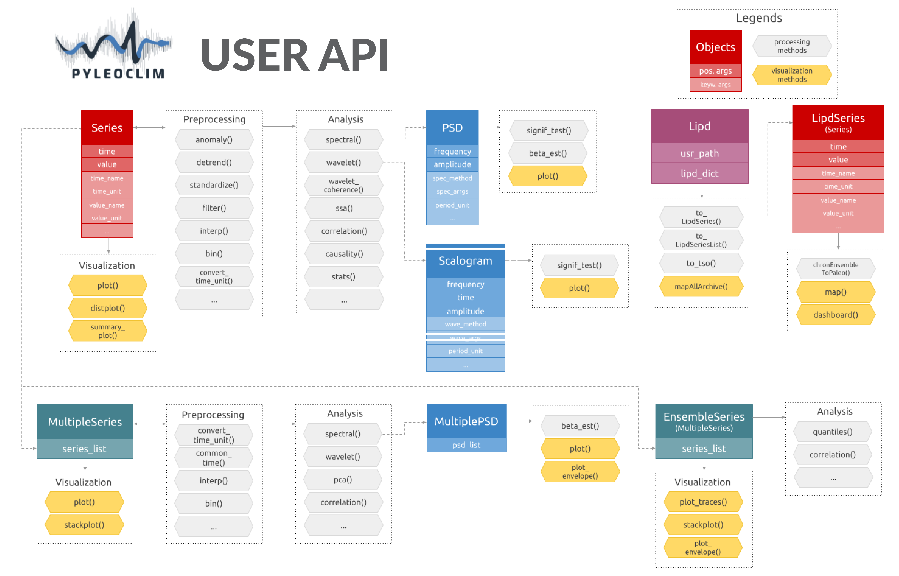{kind=link}
The following describes the various classes that undergird the Pyleoclim edifice.
Series (pyleoclim.Series)
The Series class describes the most basic objects in Pyleoclim. A Series is a simple dictionary that contains 3 things: - a series of real-valued numbers; - a time axis at which those values were measured/simulated ; - optionally, some metadata about both axes, like units, labels and the like.
How to create and manipulate such objects is described in a short example below, while this notebook demonstrates how to apply various Pyleoclim methods to Series objects.
- class pyleoclim.core.ui.Series(time, value, time_name=None, time_unit=None, value_name=None, value_unit=None, label=None, clean_ts=True, verbose=False)[source]
pyleoSeries object
The Series class is, at its heart, a simple structure containing two arrays y and t of equal length, and some metadata allowing to interpret and plot the series. It is similar to a pandas Series, but the concept was extended because pandas does not yet support geologic time.
- Parameters
time (list or numpy.array) – independent variable (t)
value (list of numpy.array) – values of the dependent variable (y)
time_unit (string) – Units for the time vector (e.g., ‘years’). Default is ‘years’
time_name (string) – Name of the time vector (e.g., ‘Time’,’Age’). Default is None. This is used to label the time axis on plots
value_name (string) – Name of the value vector (e.g., ‘temperature’) Default is None
value_unit (string) – Units for the value vector (e.g., ‘deg C’) Default is None
label (string) – Name of the time series (e.g., ‘Nino 3.4’) Default is None
clean_ts (boolean flag) – set to True to remove the NaNs and make time axis strictly prograde with duplicated timestamps reduced by averaging the values Default is True
verbose (bool) – If True, will print warning messages if there is any
Examples
In this example, we import the Southern Oscillation Index (SOI) into a pandas dataframe and create a pyleoSeries object.
In [1]: import pyleoclim as pyleo In [2]: import pandas as pd In [3]: data=pd.read_csv( ...: 'https://raw.githubusercontent.com/LinkedEarth/Pyleoclim_util/Development/example_data/soi_data.csv', ...: skiprows=0, header=1 ...: ) ...: In [4]: time=data.iloc[:,1] In [5]: value=data.iloc[:,2] In [6]: ts=pyleo.Series( ...: time=time, value=value, ...: time_name='Year (CE)', value_name='SOI', label='Southern Oscillation Index' ...: ) ...: In [7]: ts Out[7]: <pyleoclim.core.ui.Series at 0x1ab5ae8b0> In [8]: ts.__dict__.keys() Out[8]: dict_keys(['time', 'value', 'time_name', 'time_unit', 'value_name', 'value_unit', 'label'])
Methods
anomaly([timespan])Calculate the anomaly of the series
bin(**kwargs)Bin values in a time series
causality(target_series[, method, settings])Perform causality analysis with the target timeseries
clean([verbose])Clean up the timeseries by removing NaNs and sort with increasing time points
convert_time_unit([time_unit])Convert the time unit of the Series object
copy()Make a copy of the Series object
correlation(target_series[, timespan, ...])Estimates the Pearson's correlation and associated significance between two non IID time series
detrend([method])Detrend Series object
distplot([figsize, title, savefig_settings, ...])Plot the distribution of the timeseries values
fill_na([timespan, dt])Fill NaNs into the timespan
filter([cutoff_freq, cutoff_scale, method])Filtering methods for Series objects using four possible methods:
Gaussianizes the timeseries
gkernel([step_type])Coarse-grain a Series object via a Gaussian kernel.
interp([method])Interpolate a Series object onto a new time axis
is_evenly_spaced([tol])Check if the Series time axis is evenly-spaced, within tolerance
Initialization of labels
outliers([auto, remove, fig_outliers, ...])Detects outliers in a timeseries and removes if specified
plot([figsize, marker, markersize, color, ...])Plot the timeseries
segment([factor])Gap detection
slice(timespan)Slicing the timeseries with a timespan (tuple or list)
sort([verbose])Ensure timeseries is aligned to a prograde axis.
spectral([method, freq_method, freq_kwargs, ...])Perform spectral analysis on the timeseries
ssa([M, nMC, f, trunc, var_thresh])Singular Spectrum Analysis
Standardizes the time series
stats()Compute basic statistics for the time series
summary_plot([psd, scalogram, figsize, ...])Generate a plot of the timeseries and its frequency content through spectral and wavelet analyses.
surrogates([method, number, length, seed, ...])Generate surrogates with increasing time axis
wavelet([method, settings, freq_method, ...])Perform wavelet analysis on the timeseries
wavelet_coherence(target_series[, method, ...])Perform wavelet coherence analysis with the target timeseries
- anomaly(timespan=None)[source]
Calculate the anomaly of the series
- Parameters
timespan (tuple or list) – The timespan of the mean as the reference for anomaly calculation. It is in form of [a, b], where a, b are two time points.
- Returns
new – The standardized series object
- Return type
pyleoclim.Series
- bin(**kwargs)[source]
Bin values in a time series
- Parameters
kwargs – Arguments for binning function. See pyleoclim.utils.tsutils.bin for details
- Returns
new – An binned Series object
- Return type
pyleoclim.Series
See also
pyleoclim.utils.tsutils.binbin the time series into evenly-spaced bins
- causality(target_series, method='liang', settings=None)[source]
- Perform causality analysis with the target timeseries
The timeseries are first sorted in ascending order.
- Parameters
target_series (pyleoclim.Series) – A pyleoclim Series object on which to compute causality
method ({'liang', 'granger'}) – The causality method to use.
settings (dict) – Parameters associated with the causality methods. Note that each method has different parameters. See individual methods for details
- Returns
res – Dictionary containing the results of the the causality analysis. See indivudal methods for details
- Return type
dict
See also
pyleoclim.utils.causality.liang_causalityLiang causality
pyleoclim.utils.causality.granger_causalityGranger causality
Examples
Liang causality
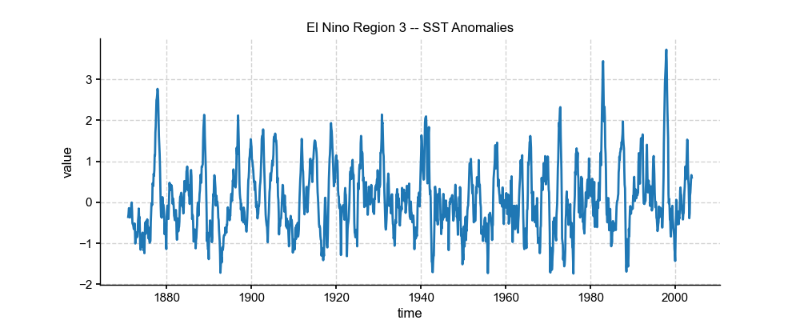 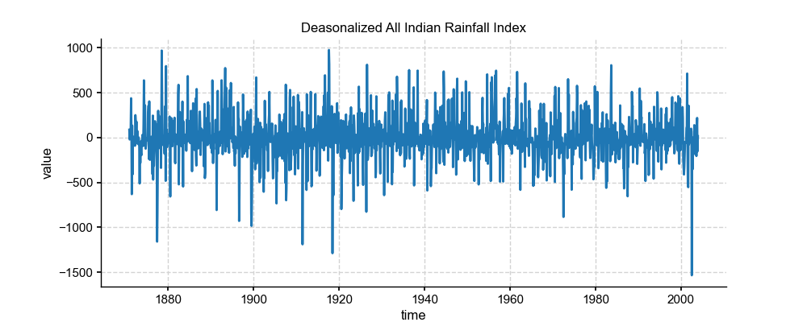In [1]: import pyleoclim as pyleo In [2]: import pandas as pd In [3]: data=pd.read_csv('https://raw.githubusercontent.com/LinkedEarth/Pyleoclim_util/Development/example_data/wtc_test_data_nino.csv') In [4]: t=data.iloc[:,0] In [5]: air=data.iloc[:,1] In [6]: nino=data.iloc[:,2] In [7]: ts_nino=pyleo.Series(time=t,value=nino) In [8]: ts_air=pyleo.Series(time=t,value=air) # plot the two timeseries In [9]: fig, ax = ts_nino.plot(title='NINO3 -- SST Anomalies') <Figure size 1000x400 with 1 Axes> In [10]: pyleo.closefig(fig) In [11]: fig, ax = ts_air.plot(title='Deasonalized All Indian Rainfall Index') <Figure size 1000x400 with 1 Axes> In [12]: pyleo.closefig(fig) # we use the specific params below in ts_nino.causality() just to make the example less heavier; # please drop the `settings` for real work In [13]: caus_res = ts_nino.causality(ts_air, settings={'nsim': 2, 'signif_test': 'isopersist'}) In [14]: print(caus_res) {'T21': 0.005840218794983322, 'tau21': 0.04731826159975568, 'Z': 0.12342420447275003, 'dH1_star': -0.5094709112673714, 'dH1_noise': 0.4432108271328729, 'signif_qs': [0.005, 0.025, 0.05, 0.95, 0.975, 0.995], 'T21_noise': array([-2.76381095e-04, -2.76381095e-04, -2.76381095e-04, -1.18390580e-06, -1.18390580e-06, -1.18390580e-06]), 'tau21_noise': array([-2.49864416e-03, -2.49864416e-03, -2.49864416e-03, -1.01521456e-05, -1.01521456e-05, -1.01521456e-05])}
Granger causality
In [15]: caus_res = ts_nino.causality(ts_air, method='granger') Granger Causality number of lags (no zero) 1 ssr based F test: F=20.8492 , p=0.0000 , df_denom=1592, df_num=1 ssr based chi2 test: chi2=20.8885 , p=0.0000 , df=1 likelihood ratio test: chi2=20.7529 , p=0.0000 , df=1 parameter F test: F=20.8492 , p=0.0000 , df_denom=1592, df_num=1 In [16]: print(caus_res) {1: ({'ssr_ftest': (20.849204239268076, 5.350981736047143e-06, 1592.0, 1), 'ssr_chi2test': (20.88849294072398, 4.868102345429935e-06, 1), 'lrtest': (20.752895243242165, 5.22525200803166e-06, 1), 'params_ftest': (20.84920423926806, 5.350981736047143e-06, 1592.0, 1.0)}, [<statsmodels.regression.linear_model.RegressionResultsWrapper object at 0x1ab8d86a0>, <statsmodels.regression.linear_model.RegressionResultsWrapper object at 0x1ab8d8940>, array([[0., 1., 0.]])])}
- clean(verbose=False)[source]
Clean up the timeseries by removing NaNs and sort with increasing time points
- Parameters
verbose (bool) – If True, will print warning messages if there is any
- Returns
Series object with removed NaNs and sorting
- Return type
- convert_time_unit(time_unit='years')[source]
Convert the time unit of the Series object
- Parameters
time_unit (str) –
the target time unit, possible input: {
’year’, ‘years’, ‘yr’, ‘yrs’, ‘y BP’, ‘yr BP’, ‘yrs BP’, ‘year BP’, ‘years BP’, ‘ky BP’, ‘kyr BP’, ‘kyrs BP’, ‘ka BP’, ‘ka’, ‘my BP’, ‘myr BP’, ‘myrs BP’, ‘ma BP’, ‘ma’,
}
Examples
In [1]: import pyleoclim as pyleo In [2]: import pandas as pd In [3]: data = pd.read_csv( ...: 'https://raw.githubusercontent.com/LinkedEarth/Pyleoclim_util/Development/example_data/soi_data.csv', ...: skiprows=0, header=1 ...: ) ...: In [4]: time = data.iloc[:,1] In [5]: value = data.iloc[:,2] In [6]: ts = pyleo.Series(time=time, value=value, time_unit='years') In [7]: new_ts = ts.convert_time_unit(time_unit='yrs BP') In [8]: print('Original timeseries:') Original timeseries: In [9]: print('time unit:', ts.time_unit) time unit: years In [10]: print('time:', ts.time) time: [1951. 1951.083333 1951.166667 1951.25 1951.333333 1951.416667 1951.5 1951.583333 1951.666667 1951.75 1951.833333 1951.916667 1952. 1952.083333 1952.166667 1952.25 1952.333333 1952.416667 1952.5 1952.583333 1952.666667 1952.75 1952.833333 1952.916667 1953. 1953.083333 1953.166667 1953.25 1953.333333 1953.416667 1953.5 1953.583333 1953.666667 1953.75 1953.833333 1953.916667 1954. 1954.083333 1954.166667 1954.25 1954.333333 1954.416667 1954.5 1954.583333 1954.666667 1954.75 1954.833333 1954.916667 1955. 1955.083333 1955.166667 1955.25 1955.333333 1955.416667 1955.5 1955.583333 1955.666667 1955.75 1955.833333 1955.916667 1956. 1956.083333 1956.166667 1956.25 1956.333333 1956.416667 1956.5 1956.583333 1956.666667 1956.75 1956.833333 1956.916667 1957. 1957.083333 1957.166667 1957.25 1957.333333 1957.416667 1957.5 1957.583333 1957.666667 1957.75 1957.833333 1957.916667 1958. 1958.083333 1958.166667 1958.25 1958.333333 1958.416667 1958.5 1958.583333 1958.666667 1958.75 1958.833333 1958.916667 1959. 1959.083333 1959.166667 1959.25 1959.333333 1959.416667 1959.5 1959.583333 1959.666667 1959.75 1959.833333 1959.916667 1960. 1960.083333 1960.166667 1960.25 1960.333333 1960.416667 1960.5 1960.583333 1960.666667 1960.75 1960.833333 1960.916667 1961. 1961.083333 1961.166667 1961.25 1961.333333 1961.416667 1961.5 1961.583333 1961.666667 1961.75 1961.833333 1961.916667 1962. 1962.083333 1962.166667 1962.25 1962.333333 1962.416667 1962.5 1962.583333 1962.666667 1962.75 1962.833333 1962.916667 1963. 1963.083333 1963.166667 1963.25 1963.333333 1963.416667 1963.5 1963.583333 1963.666667 1963.75 1963.833333 1963.916667 1964. 1964.083333 1964.166667 1964.25 1964.333333 1964.416667 1964.5 1964.583333 1964.666667 1964.75 1964.833333 1964.916667 1965. 1965.083333 1965.166667 1965.25 1965.333333 1965.416667 1965.5 1965.583333 1965.666667 1965.75 1965.833333 1965.916667 1966. 1966.083333 1966.166667 1966.25 1966.333333 1966.416667 1966.5 1966.583333 1966.666667 1966.75 1966.833333 1966.916667 1967. 1967.083333 1967.166667 1967.25 1967.333333 1967.416667 1967.5 1967.583333 1967.666667 1967.75 1967.833333 1967.916667 1968. 1968.083333 1968.166667 1968.25 1968.333333 1968.416667 1968.5 1968.583333 1968.666667 1968.75 1968.833333 1968.916667 1969. 1969.083333 1969.166667 1969.25 1969.333333 1969.416667 1969.5 1969.583333 1969.666667 1969.75 1969.833333 1969.916667 1970. 1970.083333 1970.166667 1970.25 1970.333333 1970.416667 1970.5 1970.583333 1970.666667 1970.75 1970.833333 1970.916667 1971. 1971.083333 1971.166667 1971.25 1971.333333 1971.416667 1971.5 1971.583333 1971.666667 1971.75 1971.833333 1971.916667 1972. 1972.083333 1972.166667 1972.25 1972.333333 1972.416667 1972.5 1972.583333 1972.666667 1972.75 1972.833333 1972.916667 1973. 1973.083333 1973.166667 1973.25 1973.333333 1973.416667 1973.5 1973.583333 1973.666667 1973.75 1973.833333 1973.916667 1974. 1974.083333 1974.166667 1974.25 1974.333333 1974.416667 1974.5 1974.583333 1974.666667 1974.75 1974.833333 1974.916667 1975. 1975.083333 1975.166667 1975.25 1975.333333 1975.416667 1975.5 1975.583333 1975.666667 1975.75 1975.833333 1975.916667 1976. 1976.083333 1976.166667 1976.25 1976.333333 1976.416667 1976.5 1976.583333 1976.666667 1976.75 1976.833333 1976.916667 1977. 1977.083333 1977.166667 1977.25 1977.333333 1977.416667 1977.5 1977.583333 1977.666667 1977.75 1977.833333 1977.916667 1978. 1978.083333 1978.166667 1978.25 1978.333333 1978.416667 1978.5 1978.583333 1978.666667 1978.75 1978.833333 1978.916667 1979. 1979.083333 1979.166667 1979.25 1979.333333 1979.416667 1979.5 1979.583333 1979.666667 1979.75 1979.833333 1979.916667 1980. 1980.083333 1980.166667 1980.25 1980.333333 1980.416667 1980.5 1980.583333 1980.666667 1980.75 1980.833333 1980.916667 1981. 1981.083333 1981.166667 1981.25 1981.333333 1981.416667 1981.5 1981.583333 1981.666667 1981.75 1981.833333 1981.916667 1982. 1982.083333 1982.166667 1982.25 1982.333333 1982.416667 1982.5 1982.583333 1982.666667 1982.75 1982.833333 1982.916667 1983. 1983.083333 1983.166667 1983.25 1983.333333 1983.416667 1983.5 1983.583333 1983.666667 1983.75 1983.833333 1983.916667 1984. 1984.083333 1984.166667 1984.25 1984.333333 1984.416667 1984.5 1984.583333 1984.666667 1984.75 1984.833333 1984.916667 1985. 1985.083333 1985.166667 1985.25 1985.333333 1985.416667 1985.5 1985.583333 1985.666667 1985.75 1985.833333 1985.916667 1986. 1986.083333 1986.166667 1986.25 1986.333333 1986.416667 1986.5 1986.583333 1986.666667 1986.75 1986.833333 1986.916667 1987. 1987.083333 1987.166667 1987.25 1987.333333 1987.416667 1987.5 1987.583333 1987.666667 1987.75 1987.833333 1987.916667 1988. 1988.083333 1988.166667 1988.25 1988.333333 1988.416667 1988.5 1988.583333 1988.666667 1988.75 1988.833333 1988.916667 1989. 1989.083333 1989.166667 1989.25 1989.333333 1989.416667 1989.5 1989.583333 1989.666667 1989.75 1989.833333 1989.916667 1990. 1990.083333 1990.166667 1990.25 1990.333333 1990.416667 1990.5 1990.583333 1990.666667 1990.75 1990.833333 1990.916667 1991. 1991.083333 1991.166667 1991.25 1991.333333 1991.416667 1991.5 1991.583333 1991.666667 1991.75 1991.833333 1991.916667 1992. 1992.083333 1992.166667 1992.25 1992.333333 1992.416667 1992.5 1992.583333 1992.666667 1992.75 1992.833333 1992.916667 1993. 1993.083333 1993.166667 1993.25 1993.333333 1993.416667 1993.5 1993.583333 1993.666667 1993.75 1993.833333 1993.916667 1994. 1994.083333 1994.166667 1994.25 1994.333333 1994.416667 1994.5 1994.583333 1994.666667 1994.75 1994.833333 1994.916667 1995. 1995.083333 1995.166667 1995.25 1995.333333 1995.416667 1995.5 1995.583333 1995.666667 1995.75 1995.833333 1995.916667 1996. 1996.083333 1996.166667 1996.25 1996.333333 1996.416667 1996.5 1996.583333 1996.666667 1996.75 1996.833333 1996.916667 1997. 1997.083333 1997.166667 1997.25 1997.333333 1997.416667 1997.5 1997.583333 1997.666667 1997.75 1997.833333 1997.916667 1998. 1998.083333 1998.166667 1998.25 1998.333333 1998.416667 1998.5 1998.583333 1998.666667 1998.75 1998.833333 1998.916667 1999. 1999.083333 1999.166667 1999.25 1999.333333 1999.416667 1999.5 1999.583333 1999.666667 1999.75 1999.833333 1999.916667 2000. 2000.083333 2000.166667 2000.25 2000.333333 2000.416667 2000.5 2000.583333 2000.666667 2000.75 2000.833333 2000.916667 2001. 2001.083333 2001.166667 2001.25 2001.333333 2001.416667 2001.5 2001.583333 2001.666667 2001.75 2001.833333 2001.916667 2002. 2002.083333 2002.166667 2002.25 2002.333333 2002.416667 2002.5 2002.583333 2002.666667 2002.75 2002.833333 2002.916667 2003. 2003.083333 2003.166667 2003.25 2003.333333 2003.416667 2003.5 2003.583333 2003.666667 2003.75 2003.833333 2003.916667 2004. 2004.083333 2004.166667 2004.25 2004.333333 2004.416667 2004.5 2004.583333 2004.666667 2004.75 2004.833333 2004.916667 2005. 2005.083333 2005.166667 2005.25 2005.333333 2005.416667 2005.5 2005.583333 2005.666667 2005.75 2005.833333 2005.916667 2006. 2006.083333 2006.166667 2006.25 2006.333333 2006.416667 2006.5 2006.583333 2006.666667 2006.75 2006.833333 2006.916667 2007. 2007.083333 2007.166667 2007.25 2007.333333 2007.416667 2007.5 2007.583333 2007.666667 2007.75 2007.833333 2007.916667 2008. 2008.083333 2008.166667 2008.25 2008.333333 2008.416667 2008.5 2008.583333 2008.666667 2008.75 2008.833333 2008.916667 2009. 2009.083333 2009.166667 2009.25 2009.333333 2009.416667 2009.5 2009.583333 2009.666667 2009.75 2009.833333 2009.916667 2010. 2010.083333 2010.166667 2010.25 2010.333333 2010.416667 2010.5 2010.583333 2010.666667 2010.75 2010.833333 2010.916667 2011. 2011.083333 2011.166667 2011.25 2011.333333 2011.416667 2011.5 2011.583333 2011.666667 2011.75 2011.833333 2011.916667 2012. 2012.083333 2012.166667 2012.25 2012.333333 2012.416667 2012.5 2012.583333 2012.666667 2012.75 2012.833333 2012.916667 2013. 2013.083333 2013.166667 2013.25 2013.333333 2013.416667 2013.5 2013.583333 2013.666667 2013.75 2013.833333 2013.916667 2014. 2014.083333 2014.166667 2014.25 2014.333333 2014.416667 2014.5 2014.583333 2014.666667 2014.75 2014.833333 2014.916667 2015. 2015.083333 2015.166667 2015.25 2015.333333 2015.416667 2015.5 2015.583333 2015.666667 2015.75 2015.833333 2015.916667 2016. 2016.083333 2016.166667 2016.25 2016.333333 2016.416667 2016.5 2016.583333 2016.666667 2016.75 2016.833333 2016.916667 2017. 2017.083333 2017.166667 2017.25 2017.333333 2017.416667 2017.5 2017.583333 2017.666667 2017.75 2017.833333 2017.916667 2018. 2018.083333 2018.166667 2018.25 2018.333333 2018.416667 2018.5 2018.583333 2018.666667 2018.75 2018.833333 2018.916667 2019. 2019.083333 2019.166667 2019.25 2019.333333 2019.416667 2019.5 2019.583333 2019.666667 2019.75 2019.833333 2019.916667] In [11]: print() In [12]: print('Converted timeseries:') Converted timeseries: In [13]: print('time unit:', new_ts.time_unit) time unit: yrs BP In [14]: print('time:', new_ts.time) time: [-69.916667 -69.833333 -69.75 -69.666667 -69.583333 -69.5 -69.416667 -69.333333 -69.25 -69.166667 -69.083333 -69. -68.916667 -68.833333 -68.75 -68.666667 -68.583333 -68.5 -68.416667 -68.333333 -68.25 -68.166667 -68.083333 -68. -67.916667 -67.833333 -67.75 -67.666667 -67.583333 -67.5 -67.416667 -67.333333 -67.25 -67.166667 -67.083333 -67. -66.916667 -66.833333 -66.75 -66.666667 -66.583333 -66.5 -66.416667 -66.333333 -66.25 -66.166667 -66.083333 -66. -65.916667 -65.833333 -65.75 -65.666667 -65.583333 -65.5 -65.416667 -65.333333 -65.25 -65.166667 -65.083333 -65. -64.916667 -64.833333 -64.75 -64.666667 -64.583333 -64.5 -64.416667 -64.333333 -64.25 -64.166667 -64.083333 -64. -63.916667 -63.833333 -63.75 -63.666667 -63.583333 -63.5 -63.416667 -63.333333 -63.25 -63.166667 -63.083333 -63. -62.916667 -62.833333 -62.75 -62.666667 -62.583333 -62.5 -62.416667 -62.333333 -62.25 -62.166667 -62.083333 -62. -61.916667 -61.833333 -61.75 -61.666667 -61.583333 -61.5 -61.416667 -61.333333 -61.25 -61.166667 -61.083333 -61. -60.916667 -60.833333 -60.75 -60.666667 -60.583333 -60.5 -60.416667 -60.333333 -60.25 -60.166667 -60.083333 -60. -59.916667 -59.833333 -59.75 -59.666667 -59.583333 -59.5 -59.416667 -59.333333 -59.25 -59.166667 -59.083333 -59. -58.916667 -58.833333 -58.75 -58.666667 -58.583333 -58.5 -58.416667 -58.333333 -58.25 -58.166667 -58.083333 -58. -57.916667 -57.833333 -57.75 -57.666667 -57.583333 -57.5 -57.416667 -57.333333 -57.25 -57.166667 -57.083333 -57. -56.916667 -56.833333 -56.75 -56.666667 -56.583333 -56.5 -56.416667 -56.333333 -56.25 -56.166667 -56.083333 -56. -55.916667 -55.833333 -55.75 -55.666667 -55.583333 -55.5 -55.416667 -55.333333 -55.25 -55.166667 -55.083333 -55. -54.916667 -54.833333 -54.75 -54.666667 -54.583333 -54.5 -54.416667 -54.333333 -54.25 -54.166667 -54.083333 -54. -53.916667 -53.833333 -53.75 -53.666667 -53.583333 -53.5 -53.416667 -53.333333 -53.25 -53.166667 -53.083333 -53. -52.916667 -52.833333 -52.75 -52.666667 -52.583333 -52.5 -52.416667 -52.333333 -52.25 -52.166667 -52.083333 -52. -51.916667 -51.833333 -51.75 -51.666667 -51.583333 -51.5 -51.416667 -51.333333 -51.25 -51.166667 -51.083333 -51. -50.916667 -50.833333 -50.75 -50.666667 -50.583333 -50.5 -50.416667 -50.333333 -50.25 -50.166667 -50.083333 -50. -49.916667 -49.833333 -49.75 -49.666667 -49.583333 -49.5 -49.416667 -49.333333 -49.25 -49.166667 -49.083333 -49. -48.916667 -48.833333 -48.75 -48.666667 -48.583333 -48.5 -48.416667 -48.333333 -48.25 -48.166667 -48.083333 -48. -47.916667 -47.833333 -47.75 -47.666667 -47.583333 -47.5 -47.416667 -47.333333 -47.25 -47.166667 -47.083333 -47. -46.916667 -46.833333 -46.75 -46.666667 -46.583333 -46.5 -46.416667 -46.333333 -46.25 -46.166667 -46.083333 -46. -45.916667 -45.833333 -45.75 -45.666667 -45.583333 -45.5 -45.416667 -45.333333 -45.25 -45.166667 -45.083333 -45. -44.916667 -44.833333 -44.75 -44.666667 -44.583333 -44.5 -44.416667 -44.333333 -44.25 -44.166667 -44.083333 -44. -43.916667 -43.833333 -43.75 -43.666667 -43.583333 -43.5 -43.416667 -43.333333 -43.25 -43.166667 -43.083333 -43. -42.916667 -42.833333 -42.75 -42.666667 -42.583333 -42.5 -42.416667 -42.333333 -42.25 -42.166667 -42.083333 -42. -41.916667 -41.833333 -41.75 -41.666667 -41.583333 -41.5 -41.416667 -41.333333 -41.25 -41.166667 -41.083333 -41. -40.916667 -40.833333 -40.75 -40.666667 -40.583333 -40.5 -40.416667 -40.333333 -40.25 -40.166667 -40.083333 -40. -39.916667 -39.833333 -39.75 -39.666667 -39.583333 -39.5 -39.416667 -39.333333 -39.25 -39.166667 -39.083333 -39. -38.916667 -38.833333 -38.75 -38.666667 -38.583333 -38.5 -38.416667 -38.333333 -38.25 -38.166667 -38.083333 -38. -37.916667 -37.833333 -37.75 -37.666667 -37.583333 -37.5 -37.416667 -37.333333 -37.25 -37.166667 -37.083333 -37. -36.916667 -36.833333 -36.75 -36.666667 -36.583333 -36.5 -36.416667 -36.333333 -36.25 -36.166667 -36.083333 -36. -35.916667 -35.833333 -35.75 -35.666667 -35.583333 -35.5 -35.416667 -35.333333 -35.25 -35.166667 -35.083333 -35. -34.916667 -34.833333 -34.75 -34.666667 -34.583333 -34.5 -34.416667 -34.333333 -34.25 -34.166667 -34.083333 -34. -33.916667 -33.833333 -33.75 -33.666667 -33.583333 -33.5 -33.416667 -33.333333 -33.25 -33.166667 -33.083333 -33. -32.916667 -32.833333 -32.75 -32.666667 -32.583333 -32.5 -32.416667 -32.333333 -32.25 -32.166667 -32.083333 -32. -31.916667 -31.833333 -31.75 -31.666667 -31.583333 -31.5 -31.416667 -31.333333 -31.25 -31.166667 -31.083333 -31. -30.916667 -30.833333 -30.75 -30.666667 -30.583333 -30.5 -30.416667 -30.333333 -30.25 -30.166667 -30.083333 -30. -29.916667 -29.833333 -29.75 -29.666667 -29.583333 -29.5 -29.416667 -29.333333 -29.25 -29.166667 -29.083333 -29. -28.916667 -28.833333 -28.75 -28.666667 -28.583333 -28.5 -28.416667 -28.333333 -28.25 -28.166667 -28.083333 -28. -27.916667 -27.833333 -27.75 -27.666667 -27.583333 -27.5 -27.416667 -27.333333 -27.25 -27.166667 -27.083333 -27. -26.916667 -26.833333 -26.75 -26.666667 -26.583333 -26.5 -26.416667 -26.333333 -26.25 -26.166667 -26.083333 -26. -25.916667 -25.833333 -25.75 -25.666667 -25.583333 -25.5 -25.416667 -25.333333 -25.25 -25.166667 -25.083333 -25. -24.916667 -24.833333 -24.75 -24.666667 -24.583333 -24.5 -24.416667 -24.333333 -24.25 -24.166667 -24.083333 -24. -23.916667 -23.833333 -23.75 -23.666667 -23.583333 -23.5 -23.416667 -23.333333 -23.25 -23.166667 -23.083333 -23. -22.916667 -22.833333 -22.75 -22.666667 -22.583333 -22.5 -22.416667 -22.333333 -22.25 -22.166667 -22.083333 -22. -21.916667 -21.833333 -21.75 -21.666667 -21.583333 -21.5 -21.416667 -21.333333 -21.25 -21.166667 -21.083333 -21. -20.916667 -20.833333 -20.75 -20.666667 -20.583333 -20.5 -20.416667 -20.333333 -20.25 -20.166667 -20.083333 -20. -19.916667 -19.833333 -19.75 -19.666667 -19.583333 -19.5 -19.416667 -19.333333 -19.25 -19.166667 -19.083333 -19. -18.916667 -18.833333 -18.75 -18.666667 -18.583333 -18.5 -18.416667 -18.333333 -18.25 -18.166667 -18.083333 -18. -17.916667 -17.833333 -17.75 -17.666667 -17.583333 -17.5 -17.416667 -17.333333 -17.25 -17.166667 -17.083333 -17. -16.916667 -16.833333 -16.75 -16.666667 -16.583333 -16.5 -16.416667 -16.333333 -16.25 -16.166667 -16.083333 -16. -15.916667 -15.833333 -15.75 -15.666667 -15.583333 -15.5 -15.416667 -15.333333 -15.25 -15.166667 -15.083333 -15. -14.916667 -14.833333 -14.75 -14.666667 -14.583333 -14.5 -14.416667 -14.333333 -14.25 -14.166667 -14.083333 -14. -13.916667 -13.833333 -13.75 -13.666667 -13.583333 -13.5 -13.416667 -13.333333 -13.25 -13.166667 -13.083333 -13. -12.916667 -12.833333 -12.75 -12.666667 -12.583333 -12.5 -12.416667 -12.333333 -12.25 -12.166667 -12.083333 -12. -11.916667 -11.833333 -11.75 -11.666667 -11.583333 -11.5 -11.416667 -11.333333 -11.25 -11.166667 -11.083333 -11. -10.916667 -10.833333 -10.75 -10.666667 -10.583333 -10.5 -10.416667 -10.333333 -10.25 -10.166667 -10.083333 -10. -9.916667 -9.833333 -9.75 -9.666667 -9.583333 -9.5 -9.416667 -9.333333 -9.25 -9.166667 -9.083333 -9. -8.916667 -8.833333 -8.75 -8.666667 -8.583333 -8.5 -8.416667 -8.333333 -8.25 -8.166667 -8.083333 -8. -7.916667 -7.833333 -7.75 -7.666667 -7.583333 -7.5 -7.416667 -7.333333 -7.25 -7.166667 -7.083333 -7. -6.916667 -6.833333 -6.75 -6.666667 -6.583333 -6.5 -6.416667 -6.333333 -6.25 -6.166667 -6.083333 -6. -5.916667 -5.833333 -5.75 -5.666667 -5.583333 -5.5 -5.416667 -5.333333 -5.25 -5.166667 -5.083333 -5. -4.916667 -4.833333 -4.75 -4.666667 -4.583333 -4.5 -4.416667 -4.333333 -4.25 -4.166667 -4.083333 -4. -3.916667 -3.833333 -3.75 -3.666667 -3.583333 -3.5 -3.416667 -3.333333 -3.25 -3.166667 -3.083333 -3. -2.916667 -2.833333 -2.75 -2.666667 -2.583333 -2.5 -2.416667 -2.333333 -2.25 -2.166667 -2.083333 -2. -1.916667 -1.833333 -1.75 -1.666667 -1.583333 -1.5 -1.416667 -1.333333 -1.25 -1.166667 -1.083333 -1. ]
- correlation(target_series, timespan=None, alpha=0.05, settings=None, common_time_kwargs=None, seed=None)[source]
Estimates the Pearson’s correlation and associated significance between two non IID time series
The significance of the correlation is assessed using one of the following methods:
‘ttest’: T-test adjusted for effective sample size.
‘isopersistent’: AR(1) modeling of x and y.
‘isospectral’: phase randomization of original inputs. (default)
The T-test is a parametric test, hence computationally cheap but can only be performed in ideal circumstances. The others are non-parametric, but their computational requirements scale with the number of simulations.
The choise of significance test and associated number of Monte-Carlo simulations are passed through the settings parameter.
- Parameters
target_series (pyleoclim.Series) – A pyleoclim Series object
timespan (tuple) – The time interval over which to perform the calculation
alpha (float) – The significance level (default: 0.05)
settings (dict) –
Parameters for the correlation function, including:
- nsimint
the number of simulations (default: 1000)
- methodstr, {‘ttest’,’isopersistent’,’isospectral’ (default)}
method for significance testing
common_time_kwargs (dict) – Parameters for the method MultipleSeries.common_time(). Will use interpolation by default.
seed (float or int) – random seed for isopersistent and isospectral methods
- Returns
corr – the result object, containing
- rfloat
correlation coefficient
- pfloat
the p-value
- signifbool
true if significant; false otherwise Note that signif = True if and only if p <= alpha.
- alphafloat
the significance level
- Return type
pyleoclim.ui.Corr
See also
pyleoclim.utils.correlation.corr_sigCorrelation function
Examples
Correlation between the Nino3.4 index and the Deasonalized All Indian Rainfall Index
In [1]: import pyleoclim as pyleo In [2]: import pandas as pd In [3]: data = pd.read_csv('https://raw.githubusercontent.com/LinkedEarth/Pyleoclim_util/Development/example_data/wtc_test_data_nino.csv') In [4]: t = data.iloc[:, 0] In [5]: air = data.iloc[:, 1] In [6]: nino = data.iloc[:, 2] In [7]: ts_nino = pyleo.Series(time=t, value=nino) In [8]: ts_air = pyleo.Series(time=t, value=air) # with `nsim=20` and default `method='isospectral'` # set an arbitrary randome seed to fix the result In [9]: corr_res = ts_nino.correlation(ts_air, settings={'nsim': 20}, seed=2333) In [10]: print(corr_res) correlation p-value signif. (α: 0.05) ------------- --------- ------------------- -0.152394 < 1e-6 True # using a simple t-test # set an arbitrary randome seed to fix the result In [11]: corr_res = ts_nino.correlation(ts_air, settings={'nsim': 20, 'method': 'ttest'}, seed=2333) In [12]: print(corr_res) correlation p-value signif. (α: 0.05) ------------- --------- ------------------- -0.152394 < 1e-7 True # using the method "isopersistent" # set an arbitrary random seed to fix the result In [13]: corr_res = ts_nino.correlation(ts_air, settings={'nsim': 20, 'method': 'isopersistent'}, seed=2333) In [14]: print(corr_res) correlation p-value signif. (α: 0.05) ------------- --------- ------------------- -0.152394 < 1e-4 True
- detrend(method='emd', **kwargs)[source]
Detrend Series object
- Parameters
method (str, optional) –
The method for detrending. The default is ‘emd’. Options include:
linear: the result of a linear least-squares fit to y is subtracted from y.
constant: only the mean of data is subtrated.
”savitzky-golay”, y is filtered using the Savitzky-Golay filters and the resulting filtered series is subtracted from y.
”emd” (default): Empirical mode decomposition. The last mode is assumed to be the trend and removed from the series
**kwargs (dict) – Relevant arguments for each of the methods.
- Returns
new – Detrended Series object
- Return type
pyleoclim.Series
See also
pyleoclim.utils.tsutils.detrenddetrending wrapper functions
Examples
We will generate a random signal and use the different detrending functions
In [1]: import pyleoclim as pyleo In [2]: import numpy as np # Generate a mixed signal with known frequencies In [3]: freqs=[1/20,1/80] In [4]: time=np.arange(2001) In [5]: signals=[] In [6]: for freq in freqs: ...: signals.append(np.cos(2*np.pi*freq*time)) ...: In [7]: signal=sum(signals) # Add a non-linear trend In [8]: slope = 1e-5 In [9]: intercept = -1 In [10]: nonlinear_trend = slope*time**2 + intercept In [11]: signal_trend = signal + nonlinear_trend # Add white noise In [12]: sig_var = np.var(signal) In [13]: noise_var = sig_var / 2 #signal is twice the size of noise In [14]: white_noise = np.random.normal(0, np.sqrt(noise_var), size=np.size(signal)) In [15]: signal_noise = signal_trend + white_noise # Create a series object In [16]: ts = pyleo.Series(time=time,value=signal_noise) In [17]: fig, ax = ts.plot(title='Timeseries with nonlinear trend') <Figure size 1000x400 with 1 Axes> In [18]: pyleo.closefig(fig) # kStandardize In [19]: ts_std = ts.standardize() # Detrend using EMD In [20]: ts_emd = ts_std.detrend() In [21]: fig, ax = ts_emd.plot(title='Detrended with EMD method') <Figure size 1000x400 with 1 Axes> In [22]: pyleo.closefig(fig) # Detrend using Savitzky-Golay filter In [23]: ts_sg = ts_std.detrend(method='savitzky-golay') In [24]: fig, ax = ts_sg.plot(title='Detrended with Savitzky-Golay filter') <Figure size 1000x400 with 1 Axes> In [25]: pyleo.closefig(fig)


- distplot(figsize=[10, 4], title=None, savefig_settings=None, ax=None, ylabel='KDE', vertical=False, edgecolor='w', mute=False, **plot_kwargs)[source]
Plot the distribution of the timeseries values
- Parameters
figsize (list) – a list of two integers indicating the figure size
title (str) – the title for the figure
savefig_settings (dict) –
- the dictionary of arguments for plt.savefig(); some notes below:
”path” must be specified; it can be any existed or non-existed path, with or without a suffix; if the suffix is not given in “path”, it will follow “format”
”format” can be one of {“pdf”, “eps”, “png”, “ps”}
ax (matplotlib.axis, optional) – A matplotlib axis
ylabel (str) – Label for the count axis
vertical ({True,False}) – Whether to flip the plot vertically
edgecolor (matplotlib.color) – The color of the edges of the bar
mute ({True,False}) – if True, the plot will not show; recommend to turn on when more modifications are going to be made on ax
plot_kwargs (dict) – Plotting arguments for seaborn histplot: https://seaborn.pydata.org/generated/seaborn.histplot.html
See also
pyleoclim.utils.plotting.savefigsaving figure in Pyleoclim
Examples
Distribution of the SOI record
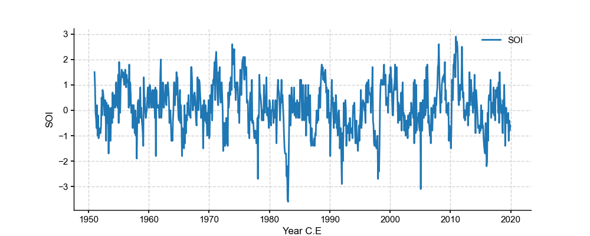 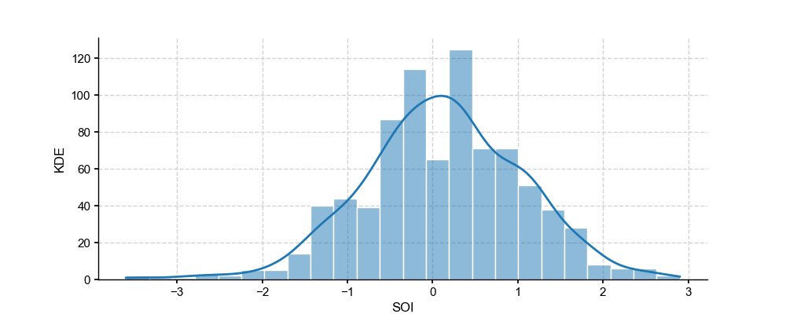In [1]: import pyleoclim as pyleo In [2]: import pandas as pd In [3]: data=pd.read_csv('https://raw.githubusercontent.com/LinkedEarth/Pyleoclim_util/Development/example_data/soi_data.csv',skiprows=0,header=1) In [4]: time=data.iloc[:,1] In [5]: value=data.iloc[:,2] In [6]: ts=pyleo.Series(time=time,value=value,time_name='Year C.E', value_name='SOI', label='SOI') In [7]: fig, ax = ts.plot() <Figure size 1000x400 with 1 Axes> In [8]: pyleo.closefig(fig) In [9]: fig, ax = ts.distplot() <Figure size 1000x400 with 1 Axes> In [10]: pyleo.closefig(fig)
- fill_na(timespan=None, dt=1)[source]
Fill NaNs into the timespan
- Parameters
timespan (tuple or list) – The list of time points for slicing, whose length must be 2. For example, if timespan = [a, b], then the sliced output includes one segment [a, b]. If None, will use the start point and end point of the original timeseries
dt (float) – The time spacing to fill the NaNs; default is 1.
- Returns
new – The sliced Series object.
- Return type
- filter(cutoff_freq=None, cutoff_scale=None, method='butterworth', **kwargs)[source]
- Filtering methods for Series objects using four possible methods:
By default, this method implements a lowpass filter, though it can easily be turned into a bandpass or high-pass filter (see examples below).
- Parameters
method (str, {'savitzky-golay', 'butterworth', 'firwin', 'lanczos'}) – the filtering method - ‘butterworth’: a Butterworth filter (default = 3rd order) - ‘savitzky-golay’: Savitzky-Golay filter - ‘firwin’: finite impulse response filter design using the window method, with default window as Hamming - ‘lanczos’: Lanczos zero-phase filter
cutoff_freq (float or list) – The cutoff frequency only works with the Butterworth method. If a float, it is interpreted as a low-frequency cutoff (lowpass). If a list, it is interpreted as a frequency band (f1, f2), with f1 < f2 (bandpass). Note that only the Butterworth option (default) currently supports bandpass filtering.
cutoff_scale (float or list) – cutoff_freq = 1 / cutoff_scale The cutoff scale only works with the Butterworth method and when cutoff_freq is None. If a float, it is interpreted as a low-frequency (high-scale) cutoff (lowpass). If a list, it is interpreted as a frequency band (f1, f2), with f1 < f2 (bandpass).
kwargs (dict) – a dictionary of the keyword arguments for the filtering method, see pyleoclim.utils.filter.savitzky_golay, pyleoclim.utils.filter.butterworth, pyleoclim.utils.filter.lanczos and pyleoclim.utils.filter.firwin for the details
- Returns
new
- Return type
pyleoclim.Series
See also
pyleoclim.utils.filter.butterworthButterworth method
pyleoclim.utils.filter.savitzky_golaySavitzky-Golay method
pyleoclim.utils.filter.firwinFIR filter design using the window method
pyleoclim.utils.filter.lanczoslowpass filter via Lanczos resampling
Examples
In the example below, we generate a signal as the sum of two signals with frequency 10 Hz and 20 Hz, respectively. Then we apply a low-pass filter with a cutoff frequency at 15 Hz, and compare the output to the signal of 10 Hz. After that, we apply a band-pass filter with the band 15-25 Hz, and compare the outcome to the signal of 20 Hz.
Generating the test data
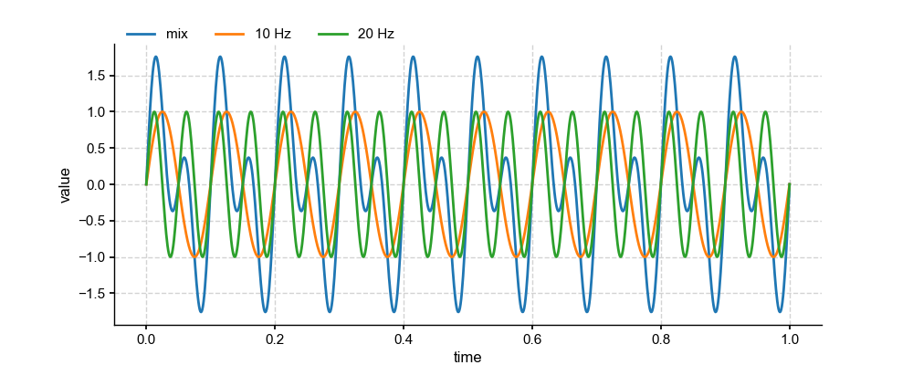In [1]: import pyleoclim as pyleo In [2]: import numpy as np In [3]: t = np.linspace(0, 1, 1000) In [4]: sig1 = np.sin(2*np.pi*10*t) In [5]: sig2 = np.sin(2*np.pi*20*t) In [6]: sig = sig1 + sig2 In [7]: ts1 = pyleo.Series(time=t, value=sig1) In [8]: ts2 = pyleo.Series(time=t, value=sig2) In [9]: ts = pyleo.Series(time=t, value=sig) In [10]: fig, ax = ts.plot(mute=True, label='mix') In [11]: ts1.plot(ax=ax, label='10 Hz') Out[11]: <AxesSubplot:xlabel='time', ylabel='value'> In [12]: ts2.plot(ax=ax, label='20 Hz') Out[12]: <AxesSubplot:xlabel='time', ylabel='value'> In [13]: ax.legend(loc='upper left', bbox_to_anchor=(0, 1.1), ncol=3) Out[13]: <matplotlib.legend.Legend at 0x1abe42940> In [14]: pyleo.showfig(fig) <Figure size 1000x400 with 1 Axes> In [15]: pyleo.closefig(fig)
Applying a low-pass filter
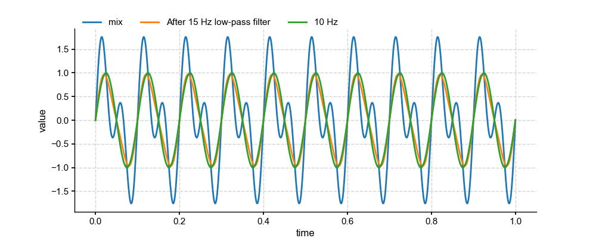In [16]: fig, ax = ts.plot(mute=True, label='mix') In [17]: ts.filter(cutoff_freq=15).plot(ax=ax, label='After 15 Hz low-pass filter') Out[17]: <AxesSubplot:xlabel='time', ylabel='value'> In [18]: ts1.plot(ax=ax, label='10 Hz') Out[18]: <AxesSubplot:xlabel='time', ylabel='value'> In [19]: ax.legend(loc='upper left', bbox_to_anchor=(0, 1.1), ncol=3) Out[19]: <matplotlib.legend.Legend at 0x1abec3e80> In [20]: pyleo.showfig(fig) <Figure size 1000x400 with 1 Axes> In [21]: pyleo.closefig(fig)
Applying a band-pass filter
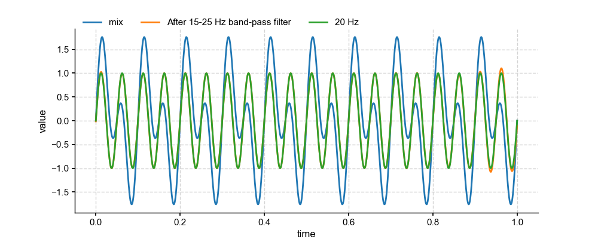In [22]: fig, ax = ts.plot(mute=True, label='mix') In [23]: ts.filter(cutoff_freq=[15, 25]).plot(ax=ax, label='After 15-25 Hz band-pass filter') Out[23]: <AxesSubplot:xlabel='time', ylabel='value'> In [24]: ts2.plot(ax=ax, label='20 Hz') Out[24]: <AxesSubplot:xlabel='time', ylabel='value'> In [25]: ax.legend(loc='upper left', bbox_to_anchor=(0, 1.1), ncol=3) Out[25]: <matplotlib.legend.Legend at 0x1abf4bb20> In [26]: pyleo.showfig(fig) <Figure size 1000x400 with 1 Axes> In [27]: pyleo.closefig(fig)
Above is using the default Butterworth filtering. To use FIR filtering with a window like Hanning is also simple:
In [28]: fig, ax = ts.plot(mute=True, label='mix') In [29]: ts.filter(cutoff_freq=[15, 25], method='firwin', window='hanning').plot(ax=ax, label='After 15-25 Hz band-pass filter') Out[29]: <AxesSubplot:xlabel='time', ylabel='value'> In [30]: ts2.plot(ax=ax, label='20 Hz') Out[30]: <AxesSubplot:xlabel='time', ylabel='value'> In [31]: ax.legend(loc='upper left', bbox_to_anchor=(0, 1.1), ncol=3) Out[31]: <matplotlib.legend.Legend at 0x1abfcf3a0> In [32]: pyleo.showfig(fig) <Figure size 1000x400 with 1 Axes> In [33]: pyleo.closefig(fig)

Applying a high-pass filter
In [34]: fig, ax = ts.plot(mute=True, label='mix') In [35]: ts_low = ts.filter(cutoff_freq=15) In [36]: ts_high = ts.copy() In [37]: ts_high.value = ts.value - ts_low.value # subtract low-pass filtered series from original one In [38]: ts_high.plot(label='High-pass filter @ 15Hz',ax=ax) Out[38]: <AxesSubplot:xlabel='time', ylabel='value'> In [39]: ax.legend(loc='upper left', bbox_to_anchor=(0, 1.1), ncol=3) Out[39]: <matplotlib.legend.Legend at 0x1b4079b80> In [40]: pyleo.showfig(fig) <Figure size 1000x400 with 1 Axes> In [41]: pyleo.closefig(fig)

- gaussianize()[source]
Gaussianizes the timeseries
- Returns
new – The Gaussianized series object
- Return type
pyleoclim.Series
- gkernel(step_type='median', **kwargs)[source]
Coarse-grain a Series object via a Gaussian kernel.
- Parameters
step_type (str) – type of timestep: ‘mean’, ‘median’, or ‘max’ of the time increments
kwargs – Arguments for kernel function. See pyleoclim.utils.tsutils.gkernel for details
- Returns
new – The coarse-grained Series object
- Return type
pyleoclim.Series
See also
pyleoclim.utils.tsutils.gkernelapplication of a Gaussian kernel
- interp(method='linear', **kwargs)[source]
Interpolate a Series object onto a new time axis
- Parameters
method ({‘linear’, ‘nearest’, ‘zero’, ‘slinear’, ‘quadratic’, ‘cubic’, ‘previous’, ‘next’}) – where ‘zero’, ‘slinear’, ‘quadratic’ and ‘cubic’ refer to a spline interpolation of zeroth, first, second or third order; ‘previous’ and ‘next’ simply return the previous or next value of the point) or as an integer specifying the order of the spline interpolator to use. Default is ‘linear’.
kwargs – Arguments specific to each interpolation function. See pyleoclim.utils.tsutils.interp for details
- Returns
new – An interpolated Series object
- Return type
pyleoclim.Series
See also
pyleoclim.utils.tsutils.interpinterpolation function
- is_evenly_spaced(tol=0.001)[source]
Check if the Series time axis is evenly-spaced, within tolerance
- Returns
res
- Return type
bool
- make_labels()[source]
Initialization of labels
- Returns
time_header (str) – Label for the time axis
value_header (str) – Label for the value axis
- outliers(auto=True, remove=True, fig_outliers=True, fig_knee=True, plot_outliers_kwargs=None, plot_knee_kwargs=None, figsize=[10, 4], saveknee_settings=None, saveoutliers_settings=None, mute=False)[source]
Detects outliers in a timeseries and removes if specified
- Parameters
auto (boolean) – True by default, detects knee in the plot automatically
remove (boolean) – True by default, removes all outlier points if detected
fig_knee (boolean) – True by default, plots knee plot if true
fig_outliers (boolean) – True by degault, plots outliers if true
save_knee (dict) – default parameters from matplotlib savefig None by default
save_outliers (dict) – default parameters from matplotlib savefig None by default
plot_knee_kwargs (dict) – arguments for the knee plot
plot_outliers_kwargs (dict) – arguments for the outliers plot
figsize (list) – by default [10,4]
mute ({True,False}) – if True, the plot will not show; recommend to turn on when more modifications are going to be made on ax
- Returns
new – Time series with outliers removed if they exist
- Return type
See also
pyleoclim.utils.tsutils.remove_outliersremove outliers function
pyleoclim.utils.plotting.plot_xybasic x-y plot
pyleoclim.utils.plotting.plot_scatter_xyScatter plot on top of a line plot
- plot(figsize=[10, 4], marker=None, markersize=None, color=None, linestyle=None, linewidth=None, xlim=None, ylim=None, label=None, xlabel=None, ylabel=None, title=None, zorder=None, legend=True, plot_kwargs=None, lgd_kwargs=None, alpha=None, savefig_settings=None, ax=None, mute=False, invert_xaxis=False)[source]
Plot the timeseries
- Parameters
figsize (list) – a list of two integers indicating the figure size
marker (str) – e.g., ‘o’ for dots See [matplotlib.markers](https://matplotlib.org/3.1.3/api/markers_api.html) for details
markersize (float) – the size of the marker
color (str, list) – the color for the line plot e.g., ‘r’ for red See [matplotlib colors] (https://matplotlib.org/3.2.1/tutorials/colors/colors.html) for details
linestyle (str) – e.g., ‘–’ for dashed line See [matplotlib.linestyles](https://matplotlib.org/3.1.0/gallery/lines_bars_and_markers/linestyles.html) for details
linewidth (float) – the width of the line
label (str) – the label for the line
xlabel (str) – the label for the x-axis
ylabel (str) – the label for the y-axis
title (str) – the title for the figure
zorder (int) – The default drawing order for all lines on the plot
legend ({True, False}) – plot legend or not
invert_xaxis (bool, optional) – if True, the x-axis of the plot will be inverted
plot_kwargs (dict) – the dictionary of keyword arguments for ax.plot() See [matplotlib.pyplot.plot](https://matplotlib.org/3.1.3/api/_as_gen/matplotlib.pyplot.plot.html) for details
lgd_kwargs (dict) – the dictionary of keyword arguments for ax.legend() See [matplotlib.pyplot.legend](https://matplotlib.org/3.1.3/api/_as_gen/matplotlib.pyplot.legend.html) for details
alpha (float) – Transparency setting
savefig_settings (dict) –
the dictionary of arguments for plt.savefig(); some notes below: - “path” must be specified; it can be any existed or non-existed path,
with or without a suffix; if the suffix is not given in “path”, it will follow “format”
”format” can be one of {“pdf”, “eps”, “png”, “ps”}
ax (matplotlib.axis, optional) – the axis object from matplotlib See [matplotlib.axes](https://matplotlib.org/api/axes_api.html) for details.
mute ({True,False}) – if True, the plot will not show; recommend to turn on when more modifications are going to be made on ax
- Returns
fig (matplotlib.figure) – the figure object from matplotlib See [matplotlib.pyplot.figure](https://matplotlib.org/3.1.1/api/_as_gen/matplotlib.pyplot.figure.html) for details.
ax (matplotlib.axis) – the axis object from matplotlib See [matplotlib.axes](https://matplotlib.org/api/axes_api.html) for details.
Notes
When ax is passed, the return will be ax only; otherwise, both fig and ax will be returned.
See also
pyleoclim.utils.plotting.savefigsaving figure in Pyleoclim
Examples
Plot the SOI record
In [1]: import pyleoclim as pyleo In [2]: import pandas as pd In [3]: data = pd.read_csv('https://raw.githubusercontent.com/LinkedEarth/Pyleoclim_util/Development/example_data/soi_data.csv',skiprows=0,header=1) In [4]: time = data.iloc[:,1] In [5]: value = data.iloc[:,2] In [6]: ts = pyleo.Series(time=time,value=value,time_name='Year C.E', value_name='SOI', label='SOI') In [7]: fig, ax = ts.plot() <Figure size 1000x400 with 1 Axes> In [8]: pyleo.closefig(fig)

Change the line color
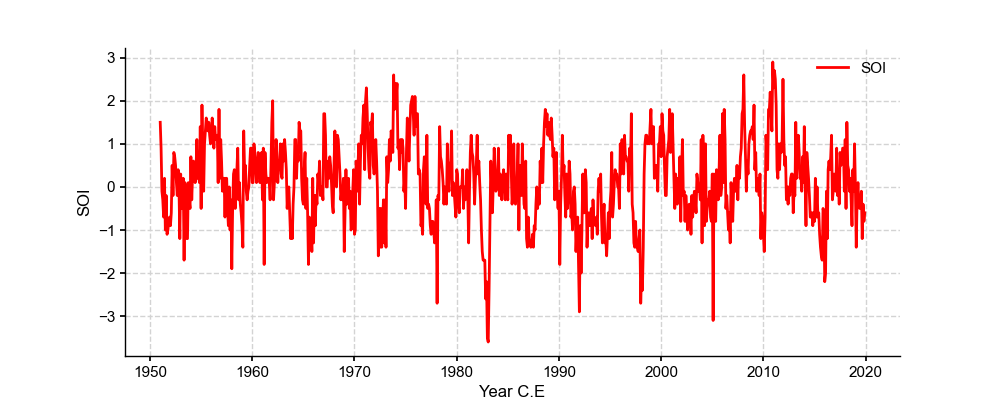In [9]: fig, ax = ts.plot(color='r') <Figure size 1000x400 with 1 Axes> In [10]: pyleo.closefig(fig)
- Save the figure. Two options available:
Within the plotting command
After the figure has been generated
In [11]: fig, ax = ts.plot(color='k', savefig_settings={'path': 'ts_plot3.png'}) Figure saved at: "ts_plot3.png" In [12]: pyleo.savefig(fig,path='ts_plot3.png') Figure saved at: "ts_plot3.png"
- segment(factor=10)[source]
Gap detection
- This function segments a timeseries into n number of parts following a gap
detection algorithm. The rule of gap detection is very simple: we define the intervals between time points as dts, then if dts[i] is larger than factor * dts[i-1], we think that the change of dts (or the gradient) is too large, and we regard it as a breaking point and divide the time series into two segments here
- Parameters
ts (pyleoclim Series) –
factor (float) – The factor that adjusts the threshold for gap detection
- Returns
res – If gaps were detected, returns the segments in a MultipleSeries object, else, returns the original timeseries.
- Return type
pyleoclim MultipleSeries Object or pyleoclim Series Object
- slice(timespan)[source]
Slicing the timeseries with a timespan (tuple or list)
- Parameters
timespan (tuple or list) – The list of time points for slicing, whose length must be even. When there are n time points, the output Series includes n/2 segments. For example, if timespan = [a, b], then the sliced output includes one segment [a, b]; if timespan = [a, b, c, d], then the sliced output includes segment [a, b] and segment [c, d].
- Returns
new – The sliced Series object.
- Return type
- sort(verbose=False)[source]
- Ensure timeseries is aligned to a prograde axis.
If the time axis is prograde to begin with, no transformation is applied.
- Parameters
verbose (bool) – If True, will print warning messages if there is any
- Returns
Series object with removed NaNs and sorting
- Return type
- spectral(method='lomb_scargle', freq_method='log', freq_kwargs=None, settings=None, label=None, verbose=False)[source]
Perform spectral analysis on the timeseries
- Parameters
method (str) – {‘wwz’, ‘mtm’, ‘lomb_scargle’, ‘welch’, ‘periodogram’}
freq_method (str) – {‘log’,’scale’, ‘nfft’, ‘lomb_scargle’, ‘welch’}
freq_kwargs (dict) – Arguments for frequency vector
settings (dict) – Arguments for the specific spectral method
label (str) – Label for the PSD object
verbose (bool) – If True, will print warning messages if there is any
- Returns
psd – A
pyleoclim.PSDobject- Return type
pyleoclim.PSD
See also
pyleoclim.utils.spectral.mtmSpectral analysis using the Multitaper approach
pyleoclim.utils.spectral.lomb_scargleSpectral analysis using the Lomb-Scargle method
pyleoclim.utils.spectral.welchSpectral analysis using the Welch segement approach
pyleoclim.utils.spectral.periodogramSpectral anaysis using the basic Fourier transform
pyleoclim.utils.spectral.wwz_psdSpectral analysis using the Wavelet Weighted Z transform
pyleoclim.utils.wavelet.make_freq_vectorFunctions to create the frequency vector
pyleoclim.utils.tsutils.detrendDetrending function
pyleoclim.core.ui.PSDPSD object
pyleoclim.core.ui.MultiplePSDMultiple PSD object
Examples
Calculate the spectrum of SOI using the various methods and compute significance
In [1]: import pyleoclim as pyleo In [2]: import pandas as pd In [3]: data = pd.read_csv('https://raw.githubusercontent.com/LinkedEarth/Pyleoclim_util/Development/example_data/soi_data.csv',skiprows=0,header=1) In [4]: time = data.iloc[:,1] In [5]: value = data.iloc[:,2] In [6]: ts = pyleo.Series(time=time, value=value, time_name='Year C.E', value_name='SOI', label='SOI') # Standardize the time series In [7]: ts_std = ts.standardize()
Lomb-Scargle
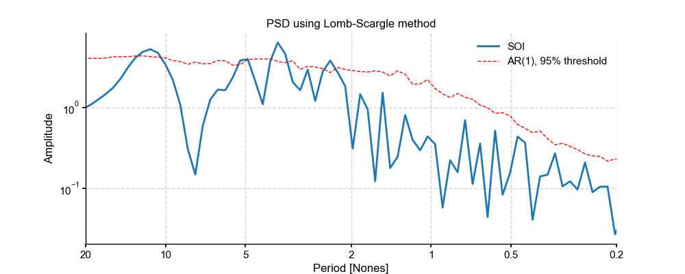In [8]: psd_ls = ts_std.spectral(method='lomb_scargle') In [9]: psd_ls_signif = psd_ls.signif_test(number=20) #in practice, need more AR1 simulations In [10]: fig, ax = psd_ls_signif.plot(title='PSD using Lomb-Scargle method') <Figure size 1000x400 with 1 Axes> In [11]: pyleo.closefig(fig)
We may pass in method-specific arguments via “settings”, which is a dictionary. For instance, to adjust the number of overlapping segment for Lomb-Scargle, we may specify the method-specific argument “n50”; to adjust the frequency vector, we may modify the “freq_method” or modify the method-specific argument “freq”.
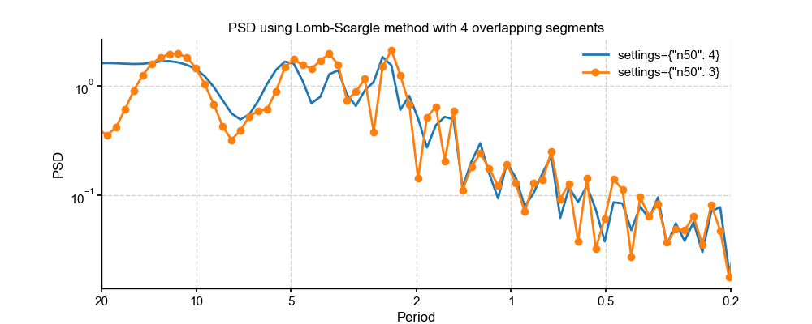 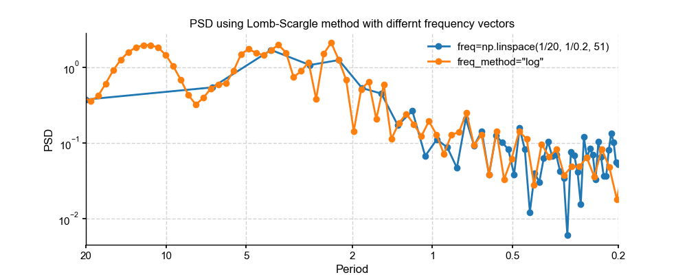In [12]: import numpy as np In [13]: psd_LS_n50 = ts_std.spectral(method='lomb_scargle', settings={'n50': 4}) # c=1e-2 yields lower frequency resolution In [14]: psd_LS_freq = ts_std.spectral(method='lomb_scargle', settings={'freq': np.linspace(1/20, 1/0.2, 51)}) In [15]: psd_LS_LS = ts_std.spectral(method='lomb_scargle', freq_method='lomb_scargle') # with frequency vector generated using REDFIT method In [16]: fig, ax = psd_LS_n50.plot( ....: title='PSD using Lomb-Scargle method with 4 overlapping segments', ....: label='settings={"n50": 4}', mute=True) ....: In [17]: psd_ls.plot(ax=ax, label='settings={"n50": 3}', marker='o') Out[17]: <AxesSubplot:title={'center':'PSD using Lomb-Scargle method with 4 overlapping segments'}, xlabel='Period', ylabel='PSD'> In [18]: pyleo.showfig(fig) <Figure size 1000x400 with 1 Axes> In [19]: pyleo.closefig(fig) In [20]: fig, ax = psd_LS_freq.plot( ....: title='PSD using Lomb-Scargle method with differnt frequency vectors', mute=True, ....: label='freq=np.linspace(1/20, 1/0.2, 51)', marker='o') ....: In [21]: psd_ls.plot(ax=ax, label='freq_method="log"', marker='o') Out[21]: <AxesSubplot:title={'center':'PSD using Lomb-Scargle method with differnt frequency vectors'}, xlabel='Period', ylabel='PSD'> In [22]: pyleo.showfig(fig) <Figure size 1000x400 with 1 Axes> In [23]: pyleo.closefig(fig)
You may notice the differences in the PSD curves regarding smoothness and the locations of the analyzed period points.
For other method-specific arguments, please look up the specific methods in the “See also” section.
WWZ
In [24]: psd_wwz = ts_std.spectral(method='wwz') # wwz is the default method In [25]: psd_wwz_signif = psd_wwz.signif_test(number=1) # significance test; for real work, should use number=200 or even larger In [26]: fig, ax = psd_wwz_signif.plot(title='PSD using WWZ method') <Figure size 1000x400 with 1 Axes> In [27]: pyleo.closefig(fig)

Periodogram
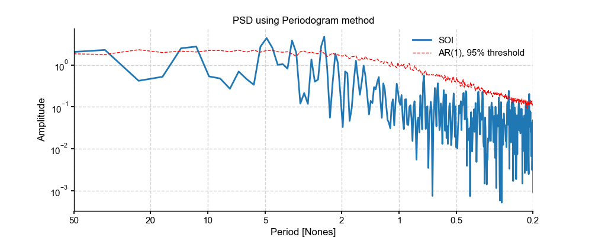In [28]: ts_interp = ts_std.interp() In [29]: psd_perio = ts_interp.spectral(method='periodogram') In [30]: psd_perio_signif = psd_perio.signif_test(number=20) #in practice, need more AR1 simulations In [31]: fig, ax = psd_perio_signif.plot(title='PSD using Periodogram method') <Figure size 1000x400 with 1 Axes> In [32]: pyleo.closefig(fig)
Welch
In [33]: ts_interp = ts_std.interp() In [34]: psd_welch = ts_interp.spectral(method='welch') In [35]: psd_welch_signif = psd_welch.signif_test(number=20) #in practice, need more AR1 simulations In [36]: fig, ax = psd_welch_signif.plot(title='PSD using Welch method') <Figure size 1000x400 with 1 Axes> In [37]: pyleo.closefig(fig)
MTM
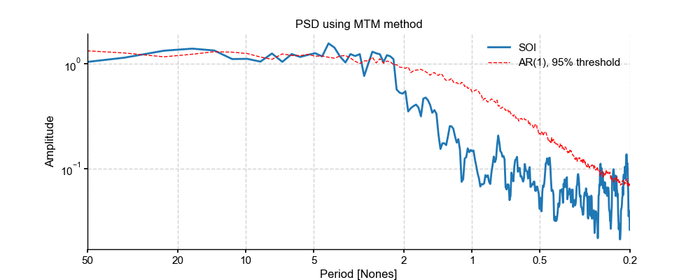In [38]: ts_interp = ts_std.interp() In [39]: psd_mtm = ts_interp.spectral(method='mtm') In [40]: psd_mtm_signif = psd_mtm.signif_test(number=20) #in practice, need more AR1 simulations In [41]: fig, ax = psd_mtm_signif.plot(title='PSD using MTM method') <Figure size 1000x400 with 1 Axes> In [42]: pyleo.closefig(fig)
- ssa(M=None, nMC=0, f=0.3, trunc=None, var_thresh=80)[source]
Singular Spectrum Analysis
Nonparametric, orthogonal decomposition of timeseries into constituent oscillations. This implementation uses the method of [1], with applications presented in [2]. Optionally (MC>0), the significance of eigenvalues is assessed by Monte-Carlo simulations of an AR(1) model fit to X, using [3]. The method expects regular spacing, but is tolerant to missing values, up to a fraction 0<f<1 (see [4]).
- Parameters
M (int, optional) – window size. The default is None (10% of the length of the series).
MC (int, optional) – Number of iteration in the Monte-Carlo process. The default is 0.
f (float, optional) – maximum allowable fraction of missing values. The default is 0.3.
trunc (str) –
- if present, truncates the expansion to a level K < M owing to one of 3 criteria:
’kaiser’: variant of the Kaiser-Guttman rule, retaining eigenvalues larger than the median
’mc-ssa’: Monte-Carlo SSA (use modes above the 95% threshold)
’var’: first K modes that explain at least var_thresh % of the variance.
Default is None, which bypasses truncation (K = M)
var_thresh (float) – variance threshold for reconstruction (only impactful if trunc is set to ‘var’)
- Returns
res (object of the SsaRes class containing:)
- eigvals ((M, ) array of eigenvalues)
- eigvecs ((M, M) Matrix of temporal eigenvectors (T-EOFs))
- PC ((N - M + 1, M) array of principal components (T-PCs))
- RCmat ((N, M) array of reconstructed components)
- RCseries ((N,) reconstructed series, with mean and variance restored)
- pctvar ((M, ) array of the fraction of variance (%) associated with each mode)
- eigvals_q ((M, 2) array contaitning the 5% and 95% quantiles of the Monte-Carlo eigenvalue spectrum [ if nMC >0 ])
Examples
SSA with SOI
In [1]: import pyleoclim as pyleo In [2]: import pandas as pd In [3]: data = pd.read_csv('https://raw.githubusercontent.com/LinkedEarth/Pyleoclim_util/Development/example_data/soi_data.csv',skiprows=0,header=1) In [4]: time = data.iloc[:,1] In [5]: value = data.iloc[:,2] In [6]: ts = pyleo.Series(time=time, value=value, time_name='Year C.E', value_name='SOI', label='SOI') # plot In [7]: fig, ax = ts.plot() <Figure size 1000x400 with 1 Axes> In [8]: pyleo.closefig(fig) # SSA In [9]: nino_ssa = ts.ssa(M=60)

Let us now see how to make use of all these arrays. The first step is too inspect the eigenvalue spectrum (“scree plot”) to identify remarkable modes. Let us restrict ourselves to the first 40, so we can see something:
- This highlights a few common phenomena with SSA:
the eigenvalues are in descending order
their uncertainties are proportional to the eigenvalues themselves
the eigenvalues tend to come in pairs : (1,2) (3,4), are all clustered within uncertainties . (5,6) looks like another doublet
around i=15, the eigenvalues appear to reach a floor, and all subsequent eigenvalues explain a very small amount of variance.
So, summing the variance of all modes higher than 19, we get:
In [10]: print(nino_ssa.pctvar[15:].sum()*100) 282.3019309505681
That is, over 95% of the variance is in the first 15 modes. That is a typical result for a (paleo)climate timeseries; a few modes do the vast majority of the work. That means we can focus our attention on these modes and capture most of the interesting behavior. To see this, let’s use the reconstructed components (RCs), and sum the RC matrix over the first 15 columns:
In [11]: RCk = nino_ssa.RCmat[:,:14].sum(axis=1) In [12]: fig, ax = ts.plot(title='ONI',mute=True) # we mute the first call to only get the plot with 2 lines In [13]: ax.plot(time,RCk,label='SSA reconstruction, 14 modes',color='orange') Out[13]: [<matplotlib.lines.Line2D at 0x1b424e790>] In [14]: ax.legend() Out[14]: <matplotlib.legend.Legend at 0x1b4c170d0> In [15]: pyleo.showfig(fig) <Figure size 1000x400 with 1 Axes> In [16]: pyleo.closefig(fig)

- Indeed, these first few modes capture the vast majority of the low-frequency behavior, including all the El Niño/La Niña events. What is left (the blue wiggles not captured in the orange curve) are high-frequency oscillations that might be considered “noise” from the standpoint of ENSO dynamics. This illustrates how SSA might be used for filtering a timeseries. One must be careful however:
there was not much rhyme or reason for picking 15 modes. Why not 5, or 39? All we have seen so far is that they gather >95% of the variance, which is by no means a magic number.
there is no guarantee that the first few modes will filter out high-frequency behavior, or at what frequency cutoff they will do so. If you need to cut out specific frequencies, you are better off doing it with a classical filter, like the butterworth filter implemented in Pyleoclim. However, in many instances the choice of a cutoff frequency is itself rather arbitrary. In such cases, SSA provides a principled alternative for generating a version of a timeseries that preserves features and excludes others (i.e, a filter).
as with all orthgonal decompositions, summing over all RCs will recover the original signal within numerical precision.
Monte-Carlo SSA
Selecting meaningful modes in eigenproblems (e.g. EOF analysis) is more art than science. However, one technique stands out: Monte Carlo SSA, introduced by Allen & Smith, (1996) to identiy SSA modes that rise above what one would expect from “red noise”, specifically an AR(1) process_process). To run it, simply provide the parameter MC, ideally with a number of iterations sufficient to get decent statistics. Here’s let’s use MC = 1000. The result will be stored in the eigval_q array, which has the same length as eigval, and its two columns contain the 5% and 95% quantiles of the ensemble of MC-SSA eigenvalues.
In [17]: nino_mcssa = ts.ssa(M = 60, nMC=1000)
Now let’s look at the result:
In [18]: nino_mcssa.screeplot() <Figure size 600x400 with 1 Axes> Out[18]: (<Figure size 600x400 with 1 Axes>, <AxesSubplot:title={'center':'SSA scree plot'}, xlabel='Mode index $i$', ylabel='$\\lambda_i$'>) In [19]: pyleo.showfig(fig) <Figure size 1000x400 with 1 Axes> In [20]: pyleo.closefig(fig)

This suggests that modes 1-5 fall above the red noise benchmark.
- standardize()[source]
Standardizes the time series
- Returns
new – The standardized series object
- Return type
pyleoclim.Series
- stats()[source]
Compute basic statistics for the time series
Computes the mean, median, min, max, standard deviation, and interquartile range of a numpy array y, ignoring NaNs.
- Returns
res – Contains the mean, median, minimum value, maximum value, standard deviation, and interquartile range for the Series.
- Return type
dictionary
Examples
Compute basic statistics for the SOI series
In [1]: import pyleoclim as pyleo In [2]: import pandas as pd In [3]: data=pd.read_csv('https://raw.githubusercontent.com/LinkedEarth/Pyleoclim_util/Development/example_data/soi_data.csv',skiprows=0,header=1) In [4]: time=data.iloc[:,1] In [5]: value=data.iloc[:,2] In [6]: ts=pyleo.Series(time=time,value=value,time_name='Year C.E', value_name='SOI', label='SOI') In [7]: ts.stats() Out[7]: {'mean': 0.11992753623188407, 'median': 0.1, 'min': -3.6, 'max': 2.9, 'std': 0.9380195472790024, 'IQR': 1.3}
- summary_plot(psd=None, scalogram=None, figsize=[8, 10], title=None, time_lim=None, value_lim=None, period_lim=None, psd_lim=None, n_signif_test=100, time_label=None, value_label=None, period_label=None, psd_label='PSD', wavelet_kwargs=None, psd_kwargs=None, ts_plot_kwargs=None, wavelet_plot_kwargs=None, psd_plot_kwargs=None, trunc_series=None, savefig_settings=None, mute=False)[source]
Generate a plot of the timeseries and its frequency content through spectral and wavelet analyses.
- Parameters
psd (PSD) – the PSD object of a Series. If None, will be calculated. This process can be slow as it will be using the WWZ method.
scalogram (Scalogram) – the Scalogram object of a Series. If None, will be calculated. This process can be slow as it will be using the WWZ method.
figsize (list) – a list of two integers indicating the figure size
title (str) – the title for the figure
time_lim (list or tuple) – the limitation of the time axis. This is for display purposes only, the scalogram and psd will still be calculated using the full time series.
value_lim (list or tuple) – the limitation of the value axis of the timeseries. This is for display purposes only, the scalogram and psd will still be calculated using the full time series.
period_lim (list or tuple) – the limitation of the period axis
psd_lim (list or tuple) – the limitation of the psd axis
n_signif_test=100 (int) – Number of Monte-Carlo simulations to perform for significance testing. Used when psd=None or scalogram=None
time_label (str) – the label for the time axis
value_label (str) – the label for the value axis of the timeseries
period_label (str) – the label for the period axis
psd_label (str) – the label for the amplitude axis of PDS
wavelet_kwargs (dict) – arguments to be passed to the wavelet function, see pyleoclim.core.ui.Series.wavelet for details
psd_kwargs (dict) – arguments to be passed to the spectral function, see pyleoclim.core.ui.Series.spectral for details
ts_plot_kwargs (dict) – arguments to be passed to the timeseries subplot, see pyleoclim.core.ui.Series.plot for details
wavelet_plot_kwargs (dict) – arguments to be passed to the scalogram plot, see pyleoclim.core.ui.Scalogram.plot for details
psd_plot_kwargs (dict) –
- arguments to be passed to the psd plot, see pyleoclim.core.ui.PSD.plot for details
- Certain psd plot settings are required by summary plot formatting. These include:
ylabel
legend
tick parameters
These will be overriden by summary plot to prevent formatting errors
trunc_series (list or tuple) – the limitation of the time axis. This will slice the actual time series into one contained within the passed boundaries and as such effect the resulting scalogram and psd objects (assuming said objects are to be generated by summary_plot).
savefig_settings (dict) –
the dictionary of arguments for plt.savefig(); some notes below: - “path” must be specified; it can be any existed or non-existed path,
with or without a suffix; if the suffix is not given in “path”, it will follow “format”
”format” can be one of {“pdf”, “eps”, “png”, “ps”}
mute ({True,False}) – if True, the plot will not show; recommend to turn on when more modifications are going to be made on ax
See also
pyleoclim.core.ui.Series.spectralSpectral analysis for a timeseries
pyleoclim.core.ui.Series.waveletWavelet analysis for a timeseries
pyleoclim.utils.plotting.savefigsaving figure in Pyleoclim
pyleoclim.core.ui.PSDPSD object
pyleoclim.core.ui.MultiplePSDMultiple PSD object
Examples
Simple summary_plot with n_signif_test = 1 for computational ease, defaults otherwise.
In [1]: import pyleoclim as pyleo In [2]: import pandas as pd In [3]: ts=pd.read_csv('https://raw.githubusercontent.com/LinkedEarth/Pyleoclim_util/master/example_data/soi_data.csv',skiprows = 1) In [4]: series = pyleo.Series(time = ts['Year'],value = ts['Value'], time_name = 'Years', time_unit = 'AD') In [5]: fig, ax = series.summary_plot(n_signif_test=1) <Figure size 800x1000 with 4 Axes> In [6]: pyleo.closefig(fig)
Summary_plot with pre-generated psd and scalogram objects.
In [7]: import pyleoclim as pyleo In [8]: import pandas as pd In [9]: ts=pd.read_csv('https://raw.githubusercontent.com/LinkedEarth/Pyleoclim_util/master/example_data/soi_data.csv',skiprows = 1) In [10]: series = pyleo.Series(time = ts['Year'],value = ts['Value'], time_name = 'Years', time_unit = 'AD') In [11]: psd = series.spectral(freq_method = 'welch') In [12]: scalogram = series.wavelet(freq_method = 'welch') In [13]: fig, ax = series.summary_plot(psd = psd,scalogram = scalogram) <Figure size 800x1000 with 4 Axes> In [14]: pyleo.closefig(fig)
Summary_plot with pre-generated psd and scalogram objects from before and some plot modification arguments passed.
In [15]: import pyleoclim as pyleo In [16]: import pandas as pd In [17]: ts=pd.read_csv('https://raw.githubusercontent.com/LinkedEarth/Pyleoclim_util/master/example_data/soi_data.csv',skiprows = 1) In [18]: series = pyleo.Series(time = ts['Year'],value = ts['Value'], time_name = 'Years', time_unit = 'AD') In [19]: psd = series.spectral(freq_method = 'welch') In [20]: scalogram = series.wavelet(freq_method = 'welch') In [21]: fig, ax = series.summary_plot(psd = psd,scalogram = scalogram, period_lim = [5,0], ts_plot_kwargs = {'color':'red','linewidth':.5}, psd_plot_kwargs = {'color':'red','linewidth':.5}) <Figure size 800x1000 with 4 Axes> In [22]: pyleo.closefig(fig)
- surrogates(method='ar1', number=1, length=None, seed=None, settings=None)[source]
Generate surrogates with increasing time axis
- Parameters
method ({ar1}) – Uses an AR1 model to generate surrogates of the timeseries
number (int) – The number of surrogates to generate
length (int) – Lenght of the series
seed (int) – Control seed option for reproducibility
settings (dict) – Parameters for surogate generator. See individual methods for details.
- Returns
surr
- Return type
pyleoclim SurrogateSeries
See also
pyleoclim.utils.tsmodel.ar1_simAR1 simulator
- wavelet(method='wwz', settings=None, freq_method='log', ntau=None, freq_kwargs=None, verbose=False)[source]
Perform wavelet analysis on the timeseries
cwt wavelets documented on https://pywavelets.readthedocs.io/en/latest/ref/cwt.html
- Parameters
method ({wwz, cwt}) – Whether to use the wwz method for unevenly spaced timeseries or traditional cwt (from pywavelets)
freq_method (str) – {‘log’, ‘scale’, ‘nfft’, ‘lomb_scargle’, ‘welch’}
freq_kwargs (dict) – Arguments for frequency vector
ntau (int) – The length of the time shift points that determins the temporal resolution of the result. If None, it will be either the length of the input time axis, or at most 50.
settings (dict) – Arguments for the specific spectral method
verbose (bool) – If True, will print warning messages if there is any
- Returns
scal
- Return type
Series.Scalogram
See also
pyleoclim.utils.wavelet.wwzwwz function
pyleoclim.utils.wavelet.cwtcwt function
pyleoclim.utils.wavelet.make_freqFunctions to create the frequency vector
pyleoclim.utils.tsutils.detrendDetrending function
pyleoclim.core.ui.ScalogramScalogram object
pyleoclim.core.ui.MultipleScalogramMultiple Scalogram object
Examples
Wavelet analysis on the SOI record.
In [1]: import pyleoclim as pyleo In [2]: import pandas as pd In [3]: data = pd.read_csv('https://raw.githubusercontent.com/LinkedEarth/Pyleoclim_util/Development/example_data/soi_data.csv',skiprows=0,header=1) In [4]: time = data.iloc[:,1] In [5]: value = data.iloc[:,2] In [6]: ts = pyleo.Series(time=time,value=value,time_name='Year C.E', value_name='SOI', label='SOI') # WWZ In [7]: scal = ts.wavelet() In [8]: scal_signif = scal.signif_test(number=1) # for real work, should use number=200 or even larger In [9]: fig, ax = scal_signif.plot() <Figure size 1000x800 with 2 Axes> In [10]: pyleo.closefig(fig)
- wavelet_coherence(target_series, method='wwz', settings=None, freq_method='log', ntau=None, tau=None, freq_kwargs=None, verbose=False)[source]
Perform wavelet coherence analysis with the target timeseries
- Parameters
target_series (pyleoclim.Series) – A pyleoclim Series object on which to perform the coherence analysis
method ({'wwz'}) –
freq_method (str) – {‘log’,’scale’, ‘nfft’, ‘lomb_scargle’, ‘welch’}
freq_kwargs (dict) – Arguments for frequency vector
tau (array) – The time shift points that determins the temporal resolution of the result. If None, it will be calculated using ntau.
ntau (int) – The length of the time shift points that determins the temporal resolution of the result. If None, it will be either the length of the input time axis, or at most 50.
settings (dict) – Arguments for the specific spectral method
verbose (bool) – If True, will print warning messages if there is any
- Returns
coh
- Return type
pyleoclim.Coherence
See also
pyleoclim.utils.wavelet.xwtCross-wavelet analysis based on WWZ method
pyleoclim.utils.wavelet.make_freqFunctions to create the frequency vector
pyleoclim.utils.tsutils.detrendDetrending function
pyleoclim.core.ui.CoherenceCoherence object
Examples
Wavelet coherence with the default arguments:
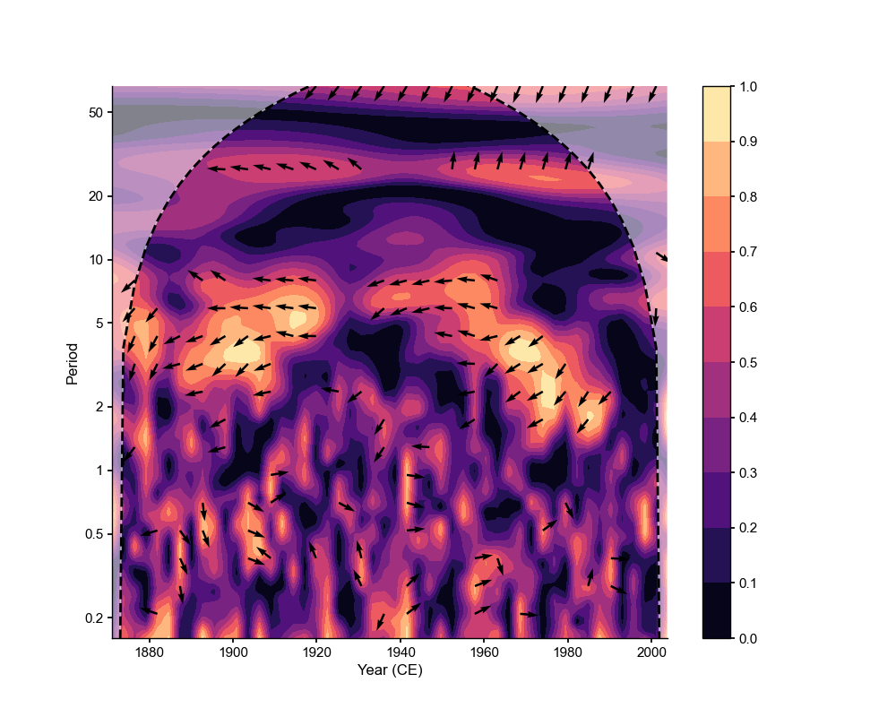In [1]: import pyleoclim as pyleo In [2]: import pandas as pd In [3]: data = pd.read_csv('https://raw.githubusercontent.com/LinkedEarth/Pyleoclim_util/Development/example_data/wtc_test_data_nino.csv') In [4]: time = data['t'].values In [5]: air = data['air'].values In [6]: nino = data['nino'].values In [7]: ts_air = pyleo.Series(time=time, value=air, time_name='Year (CE)') In [8]: ts_nino = pyleo.Series(time=time, value=nino, time_name='Year (CE)') # without any arguments, the `tau` will be determined automatically In [9]: coh = ts_air.wavelet_coherence(ts_nino) In [10]: fig, ax = coh.plot() <Figure size 1000x800 with 2 Axes> In [11]: pyleo.closefig()
We may specify ntau to adjust the temporal resolution of the scalogram, which will affect the time consumption of calculation and the result itself:
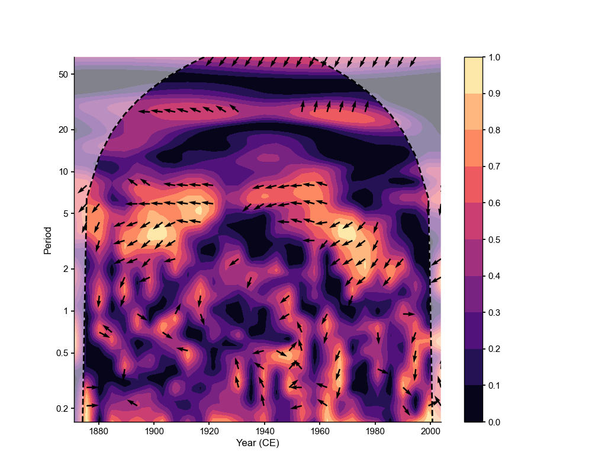In [12]: coh_ntau = ts_air.wavelet_coherence(ts_nino, ntau=30) In [13]: fig, ax = coh_ntau.plot() <Figure size 1000x800 with 2 Axes> In [14]: pyleo.closefig()
We may also specify the tau vector explicitly:
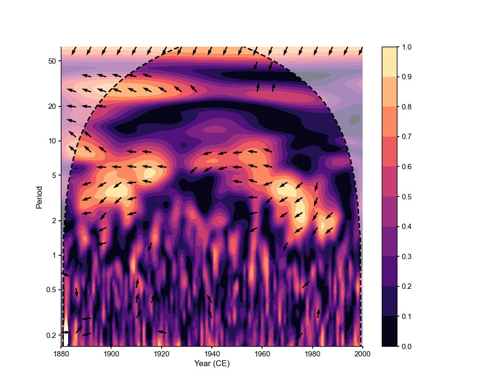In [15]: coh_tau = ts_air.wavelet_coherence(ts_nino, tau=np.arange(1880, 2001)) In [16]: fig, ax = coh_tau.plot() <Figure size 1000x800 with 2 Axes> In [17]: pyleo.closefig()
MultipleSeries (pyleoclim.MultipleSeries)
As the name implies, a MultipleSeries object is a collection (more precisely, a list) of multiple Series objects. This is handy in case you want to apply the same method to such a collection at once (e.g. process a bunch of series in a consistent fashion).
- class pyleoclim.core.ui.MultipleSeries(series_list, time_unit=None, name=None)[source]
MultipleSeries object.
This object handles a collection of the type Series and can be created from a list of such objects. MultipleSeries should be used when the need to run analysis on multiple records arises, such as running principal component analysis. Some of the methods automatically refocus the time axis prior to analysis to ensure that the analysis is run over the same time period.
- Parameters
- series_listlist
a list of pyleoclim.Series objects
- time_unitstr
The target time unit for every series in the list. If None, then no conversion will be applied; Otherwise, the time unit of every series in the list will be converted to the target.
- namestr
name of the collection of timeseries (e.g. ‘PAGES 2k ice cores’)
Examples
In [1]: import pyleoclim as pyleo In [2]: import pandas as pd In [3]: data = pd.read_csv( ...: 'https://raw.githubusercontent.com/LinkedEarth/Pyleoclim_util/Development/example_data/soi_data.csv', ...: skiprows=0, header=1 ...: ) ...: In [4]: time = data.iloc[:,1] In [5]: value = data.iloc[:,2] In [6]: ts1 = pyleo.Series(time=time, value=value, time_unit='years') In [7]: ts2 = pyleo.Series(time=time, value=value, time_unit='years') In [8]: ms = pyleo.MultipleSeries([ts1, ts2], name = 'SOI x2')
Methods
append(ts)Append timeseries ts to MultipleSeries object
bin(**kwargs)Aligns the time axes of a MultipleSeries object, via binning.
common_time([method, common_step, start, ...])Aligns the time axes of a MultipleSeries object, via binning interpolation., or Gaussian kernel.
convert_time_unit([time_unit])Convert the time unit of the timeseries
copy()Copy the object
correlation([target, timespan, alpha, ...])Calculate the correlation between a MultipleSeries and a target Series
detrend([method])Detrend timeseries
Test whether all series in object have equal length
filter([cutoff_freq, cutoff_scale, method])Filtering the timeseries in the MultipleSeries object
gkernel(**kwargs)Aligns the time axes of a MultipleSeries object, via Gaussian kernel.
grid_properties([step_style])Extract grid properties (start, stop, step) of all the Series objects in a collection.
interp(**kwargs)Aligns the time axes of a MultipleSeries object, via interpolation.
pca([weights, missing, tol_em, max_em_iter])Principal Component Analysis (Empirical Orthogonal Functions)
plot([figsize, marker, markersize, ...])Plot multiple timeseries on the same axis
spectral([method, settings, mute_pbar, ...])Perform spectral analysis on the timeseries
stackplot([figsize, savefig_settings, xlim, ...])Stack plot of multiple series
Standardize each series object in a collection
wavelet([method, settings, freq_method, ...])Wavelet analysis
- append(ts)[source]
Append timeseries ts to MultipleSeries object
- Returns
ms – The augmented object, comprising the old one plus ts
- Return type
pyleoclim.MultipleSeries
- bin(**kwargs)[source]
Aligns the time axes of a MultipleSeries object, via binning.
This is critical for workflows that need to assume a common time axis for the group of series under consideration.
The common time axis is characterized by the following parameters:
start : the latest start date of the bunch (maximin of the minima) stop : the earliest stop date of the bunch (minimum of the maxima) step : The representative spacing between consecutive values (mean of the median spacings)
This is a special case of the common_time function.
- Parameters
kwargs (dict) – Arguments for the binning function. See pyleoclim.utils.tsutils.bin
- Returns
ms – The MultipleSeries objects with all series aligned to the same time axis.
- Return type
pyleoclim.MultipleSeries
See also
pyleoclim.core.ui.MultipleSeries.common_timeBase function on which this operates
pyleoclim.utils.tsutils.binUnderlying binning function
pyleoclim.core.ui.Series.binBin function for Series object
Examples
In [1]: import pyleoclim as pyleo In [2]: url = 'http://wiki.linked.earth/wiki/index.php/Special:WTLiPD?op=export&lipdid=MD982176.Stott.2004' In [3]: data = pyleo.Lipd(usr_path = url) Disclaimer: LiPD files may be updated and modified to adhere to standards reading: MD982176.Stott.2004.lpd Finished read: 1 record In [4]: tslist = data.to_LipdSeriesList() extracting paleoData... extracting: MD982176.Stott.2004 Created time series: 6 entries In [5]: tslist = tslist[2:] # drop the first two series which only concerns age and depth In [6]: ms = pyleo.MultipleSeries(tslist) In [7]: msbin = ms.bin()
- common_time(method='interp', common_step='max', start=None, stop=None, step=None, step_style=None, **kwargs)[source]
Aligns the time axes of a MultipleSeries object, via binning interpolation., or Gaussian kernel. Alignmentis critical for workflows that need to assume a common time axis for the group of series under consideration.
The common time axis is characterized by the following parameters:
start : the latest start date of the bunch (maximun of the minima) stop : the earliest stop date of the bunch (minimum of the maxima) step : The representative spacing between consecutive values
Optional arguments for binning or interpolation are those of the underling functions.
If the time axis are retrograde, this step makes them prograde.
- Parameters
method (string) – either ‘bin’, ‘interp’ [default] or ‘gkernel’
common_step (string) – Method to obtain a representative step among all Series Valid entries: ‘median’ [default], ‘mean’, ‘mode’ or ‘max’
start (float) – starting point of the common time axis [default = None]
stop (float) – end point of the common time axis [default = None]
step (float) – increment the common time axis [default = None]
provided (if not) –
parameters (pyleoclim will use grid_properties() to determine these) –
step_style ('string') – step style to be applied from grid_properties [default = None]
- kwargs: dict
keyword arguments (dictionary) of the various methods
- Returns
ms – The MultipleSeries objects with all series aligned to the same time axis.
- Return type
pyleoclim.MultipleSeries
See also
pyleoclim.utils.tsutils.binput timeseries values into bins of equal size (possibly leaving NaNs in).
pyleoclim.utils.tsutils.gkernelcoarse-graining using a Gaussian kernel
pyleoclim.utils.tsutils.interpinterpolation onto a regular grid (default = linear interpolation)
pyleoclim.utils.tsutils.grid_propertiesinfer grid properties
Examples
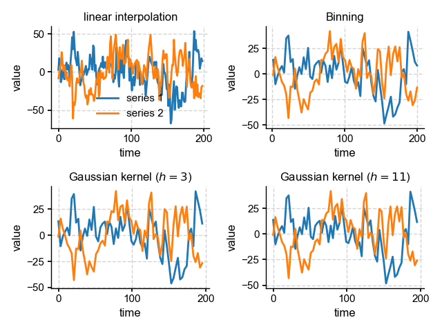In [1]: import numpy as np In [2]: import pyleoclim as pyleo In [3]: import matplotlib.pyplot as plt In [4]: from pyleoclim.utils.tsmodel import colored_noise # create 2 incompletely sampled series In [5]: ns = 2 ; nt = 200; n_del = 20 In [6]: serieslist = [] In [7]: for j in range(ns): ...: t = np.arange(nt) ...: v = colored_noise(alpha=1, t=t) ...: deleted_idx = np.random.choice(range(np.size(t)), n_del, replace=False) ...: tu = np.delete(t, deleted_idx) ...: vu = np.delete(v, deleted_idx) ...: ts = pyleo.Series(time = tu, value = vu, label = 'series ' + str(j+1)) ...: serieslist.append(ts) ...: # create MS object from the list In [8]: ms = pyleo.MultipleSeries(serieslist) In [9]: fig, ax = plt.subplots(2,2) In [10]: ax = ax.flatten() # apply common_time with default parameters In [11]: msc = ms.common_time() In [12]: msc.plot(title='linear interpolation',ax=ax[0]) Out[12]: <AxesSubplot:title={'center':'linear interpolation'}, xlabel='time', ylabel='value'> # apply common_time with binning In [13]: msc = ms.common_time(method='bin') In [14]: msc.plot(title='Binning',ax=ax[1], legend=False) Out[14]: <AxesSubplot:title={'center':'Binning'}, xlabel='time', ylabel='value'> # apply common_time with gkernel In [15]: msc = ms.common_time(method='gkernel') In [16]: msc.plot(title=r'Gaussian kernel ($h=3$)',ax=ax[2],legend=False) Out[16]: <AxesSubplot:title={'center':'Gaussian kernel ($h=3$)'}, xlabel='time', ylabel='value'> # apply common_time with gkernel and a large bandwidth In [17]: msc = ms.common_time(method='gkernel', h=11) In [18]: msc.plot(title=r'Gaussian kernel ($h=11$)',ax=ax[3],legend=False) Out[18]: <AxesSubplot:title={'center':'Gaussian kernel ($h=11$)'}, xlabel='time', ylabel='value'> # display, save and close figure In [19]: fig.tight_layout() In [20]: pyleo.showfig(fig) <Figure size 640x480 with 4 Axes> In [21]: pyleo.closefig(fig)
- convert_time_unit(time_unit='years')[source]
Convert the time unit of the timeseries
- Parameters
time_unit (str) –
the target time unit, possible input: {
’year’, ‘years’, ‘yr’, ‘yrs’, ‘y BP’, ‘yr BP’, ‘yrs BP’, ‘year BP’, ‘years BP’, ‘ky BP’, ‘kyr BP’, ‘kyrs BP’, ‘ka BP’, ‘ka’, ‘my BP’, ‘myr BP’, ‘myrs BP’, ‘ma BP’, ‘ma’,
}
Examples
In [1]: import pyleoclim as pyleo In [2]: import pandas as pd In [3]: data = pd.read_csv( ...: 'https://raw.githubusercontent.com/LinkedEarth/Pyleoclim_util/Development/example_data/soi_data.csv', ...: skiprows=0, header=1 ...: ) ...: In [4]: time = data.iloc[:,1] In [5]: value = data.iloc[:,2] In [6]: ts1 = pyleo.Series(time=time, value=value, time_unit='years') In [7]: ts2 = pyleo.Series(time=time, value=value, time_unit='years') In [8]: ms = pyleo.MultipleSeries([ts1, ts2]) In [9]: new_ms = ms.convert_time_unit('yr BP') In [10]: print('Original timeseries:') Original timeseries: In [11]: print('time unit:', ms.time_unit) time unit: None In [12]: print() In [13]: print('Converted timeseries:') Converted timeseries: In [14]: print('time unit:', new_ms.time_unit) time unit: yr BP
- correlation(target=None, timespan=None, alpha=0.05, settings=None, fdr_kwargs=None, common_time_kwargs=None, mute_pbar=False, seed=None)[source]
Calculate the correlation between a MultipleSeries and a target Series
If the target Series is not specified, then the 1st member of MultipleSeries will be the target
- Parameters
target (pyleoclim.Series, optional) – A pyleoclim Series object.
timespan (tuple) – The time interval over which to perform the calculation
alpha (float) – The significance level (0.05 by default)
fdr_kwargs (dict) – Parameters for the FDR function
settings (dict) –
Parameters for the correlation function, including:
- nsimint
the number of simulations (default: 1000)
- methodstr, {‘ttest’,’isopersistent’,’isospectral’ (default)}
method for significance testing
common_time_kwargs (dict) – Parameters for the method MultipleSeries.common_time()
seed (float or int) – random seed for isopersistent and isospectral methods
mute_pbar (bool) – If True, the progressbar will be muted. Default is False.
- Returns
corr – the result object, see pyleoclim.ui.CorrEns
- Return type
pyleoclim.ui.CorrEns
See also
pyleoclim.utils.correlation.corr_sigCorrelation function
pyleoclim.utils.correlation.fdrFDR function
pyleoclim.ui.CorrEnsthe correlation ensemble object
Examples
In [1]: import pyleoclim as pyleo In [2]: from pyleoclim.utils.tsmodel import colored_noise In [3]: import numpy as np In [4]: nt = 100 In [5]: t0 = np.arange(nt) In [6]: v0 = colored_noise(alpha=1, t=t0) In [7]: noise = np.random.normal(loc=0, scale=1, size=nt) In [8]: ts0 = pyleo.Series(time=t0, value=v0) In [9]: ts1 = pyleo.Series(time=t0, value=v0+noise) In [10]: ts2 = pyleo.Series(time=t0, value=v0+2*noise) In [11]: ts3 = pyleo.Series(time=t0, value=v0+1/2*noise) In [12]: ts_list = [ts1, ts2, ts3] In [13]: ms = pyleo.MultipleSeries(ts_list) In [14]: ts_target = ts0 # set an arbitrary randome seed to fix the result In [15]: corr_res = ms.correlation(ts_target, settings={'nsim': 20}, seed=2333) In [16]: print(corr_res) correlation p-value signif. w/o FDR (α: 0.05) signif. w/ FDR (α: 0.05) ------------- --------- --------------------------- -------------------------- 0.998192 < 1e-6 True True 0.992961 < 1e-6 True True 0.999543 < 1e-6 True True Ensemble size: 3 # set an arbitrary randome seed to fix the result In [17]: corr_res = ms.correlation(settings={'nsim': 20}, seed=2333) In [18]: print(corr_res) correlation p-value signif. w/o FDR (α: 0.05) signif. w/ FDR (α: 0.05) ------------- --------- --------------------------- -------------------------- 1 < 1e-6 True True 0.998285 < 1e-6 True True 0.999553 < 1e-6 True True Ensemble size: 3
- detrend(method='emd', **kwargs)[source]
Detrend timeseries
- Parameters
method (str, optional) –
The method for detrending. The default is ‘emd’. Options include:
linear: the result of a linear least-squares fit to y is subtracted from y.
constant: only the mean of data is subtrated.
”savitzky-golay”, y is filtered using the Savitzky-Golay filters and the resulting filtered series is subtracted from y.
”emd” (default): Empirical mode decomposition. The last mode is assumed to be the trend and removed from the series
**kwargs (dict) – Relevant arguments for each of the methods.
- Returns
ms – The detrended timeseries
- Return type
pyleoclim.MultipleSeries
See also
pyleoclim.core.ui.Series.detrendDetrending for a single series
pyleoclim.utils.tsutils.detrendDetrending function
- equal_lengths()[source]
Test whether all series in object have equal length
- Parameters
None –
- Returns
flag (boolean)
lengths (list containing the lengths of the series in object)
- filter(cutoff_freq=None, cutoff_scale=None, method='butterworth', **kwargs)[source]
Filtering the timeseries in the MultipleSeries object
- Parameters
method (str, {'savitzky-golay', 'butterworth', 'firwin'}) – the filtering method - ‘butterworth’: the Butterworth method (default) - ‘savitzky-golay’: the Savitzky-Golay method - ‘firwin’: FIR filter design using the window method, with default window as Hamming - ‘lanczos’: lowpass filter via Lanczos resampling
cutoff_freq (float or list) – The cutoff frequency only works with the Butterworth method. If a float, it is interpreted as a low-frequency cutoff (lowpass). If a list, it is interpreted as a frequency band (f1, f2), with f1 < f2 (bandpass).
cutoff_scale (float or list) – cutoff_freq = 1 / cutoff_scale The cutoff scale only works with the Butterworth method and when cutoff_freq is None. If a float, it is interpreted as a low-frequency (high-scale) cutoff (lowpass). If a list, it is interpreted as a frequency band (f1, f2), with f1 < f2 (bandpass).
kwargs (dict) – a dictionary of the keyword arguments for the filtering method, see pyleoclim.utils.filter.savitzky_golay, pyleoclim.utils.filter.butterworth, and pyleoclim.utils.filter.firwin for the details
- Returns
ms
- Return type
pyleoclim.MultipleSeries
See also
pyleoclim.utils.filter.butterworthButterworth method
pyleoclim.utils.filter.savitzky_golaySavitzky-Golay method
pyleoclim.utils.filter.firwinFIR filter design using the window method
pyleoclim.utils.filter.lanczoslowpass filter via Lanczos resampling
- gkernel(**kwargs)[source]
Aligns the time axes of a MultipleSeries object, via Gaussian kernel. This is critical for workflows that need to assume a common time axis for the group of series under consideration.
The common time axis is characterized by the following parameters:
start : the latest start date of the bunch (maximin of the minima) stop : the earliest stop date of the bunch (minimum of the maxima) step : The representative spacing between consecutive values (mean of the median spacings)
This is a special case of the common_time function.
- Parameters
kwargs (dict) – Arguments for gkernel. See pyleoclim.utils.tsutils.gkernel for details.
- Returns
ms – The MultipleSeries objects with all series aligned to the same time axis.
- Return type
pyleoclim.MultipleSeries
See also
pyleoclim.core.ui.MultipleSeries.common_timeBase function on which this operates
pyleoclim.utils.tsutils.gkernelUnderlying kernel module
Examples
In [1]: import pyleoclim as pyleo In [2]: url = 'http://wiki.linked.earth/wiki/index.php/Special:WTLiPD?op=export&lipdid=MD982176.Stott.2004' In [3]: data = pyleo.Lipd(usr_path = url) Disclaimer: LiPD files may be updated and modified to adhere to standards reading: MD982176.Stott.2004.lpd Finished read: 1 record In [4]: tslist = data.to_LipdSeriesList() extracting paleoData... extracting: MD982176.Stott.2004 Created time series: 6 entries In [5]: tslist = tslist[2:] # drop the first two series which only concerns age and depth In [6]: ms = pyleo.MultipleSeries(tslist) In [7]: msk = ms.gkernel()
- grid_properties(step_style='median')[source]
Extract grid properties (start, stop, step) of all the Series objects in a collection.
- Parameters
step_style (str) –
Method to obtain a representative step if x is not evenly spaced. Valid entries: ‘median’ [default], ‘mean’, ‘mode’ or ‘max’ The mode is the most frequent entry in a dataset, and may be a good choice if the timeseries is nearly equally spaced but for a few gaps.
Max is a conservative choice, appropriate for binning methods and Gaussian kernel coarse-graining
- Returns
grid_properties – n x 3 array, where n is the number of series
- Return type
numpy array
- interp(**kwargs)[source]
Aligns the time axes of a MultipleSeries object, via interpolation. This is critical for workflows that need to assume a common time axis for the group of series under consideration.
The common time axis is characterized by the following parameters:
start : the latest start date of the bunch (maximin of the minima) stop : the earliest stop date of the bunch (minimum of the maxima) step : The representative spacing between consecutive values (mean of the median spacings)
This is a special case of the common_time function.
- Parameters
kwargs (keyword arguments (dictionary) for the interpolation method) –
- Returns
ms – The MultipleSeries objects with all series aligned to the same time axis.
- Return type
pyleoclim.MultipleSeries
See also
pyleoclim.core.ui.MultipleSeries.common_timeBase function on which this operates
pyleoclim.utils.tsutils.interpUnderlying interpolation function
pyleoclim.core.ui.Series.interpInterpolation function for Series object
Examples
In [1]: import pyleoclim as pyleo In [2]: url = 'http://wiki.linked.earth/wiki/index.php/Special:WTLiPD?op=export&lipdid=MD982176.Stott.2004' In [3]: data = pyleo.Lipd(usr_path = url) Disclaimer: LiPD files may be updated and modified to adhere to standards reading: MD982176.Stott.2004.lpd Finished read: 1 record In [4]: tslist = data.to_LipdSeriesList() extracting paleoData... extracting: MD982176.Stott.2004 Created time series: 6 entries In [5]: tslist = tslist[2:] # drop the first two series which only concerns age and depth In [6]: ms = pyleo.MultipleSeries(tslist) In [7]: msinterp = ms.interp()
- pca(weights=None, missing='fill-em', tol_em=0.005, max_em_iter=100, **pca_kwargs)[source]
Principal Component Analysis (Empirical Orthogonal Functions)
Decomposition of dataset ys in terms of orthogonal basis functions. Tolerant to missing values, infilled by an EM algorithm. Requires ncomp to be less than the number of missing values.
Do make sure the time axes are aligned, however! (e.g. use common_time())
Algorithm from statsmodels: https://www.statsmodels.org/stable/generated/statsmodels.multivariate.pca.PCA.html
- Parameters
weights (ndarray, optional) – Series weights to use after transforming data according to standardize or demean when computing the principal components.
missing ({str, None}) –
Method for missing data. Choices are:
’drop-row’ - drop rows with missing values.
’drop-col’ - drop columns with missing values.
’drop-min’ - drop either rows or columns, choosing by data retention.
’fill-em’ - use EM algorithm to fill missing value. ncomp should be set to the number of factors required.
None raises if data contains NaN values.
tol_em (float) – Tolerance to use when checking for convergence of the EM algorithm.
max_em_iter (int) – Maximum iterations for the EM algorithm.
- res
the result object, see pyleoclim.ui.SpatialDecomp
- Type
pyleoclim.ui.SpatialDecomp
Examples
In [1]: import pyleoclim as pyleo In [2]: url = 'http://wiki.linked.earth/wiki/index.php/Special:WTLiPD?op=export&lipdid=MD982176.Stott.2004' In [3]: data = pyleo.Lipd(usr_path = url) Disclaimer: LiPD files may be updated and modified to adhere to standards reading: MD982176.Stott.2004.lpd Finished read: 1 record In [4]: tslist = data.to_LipdSeriesList() extracting paleoData... extracting: MD982176.Stott.2004 Created time series: 6 entries In [5]: tslist = tslist[2:] # drop the first two series which only concerns age and depth In [6]: ms = pyleo.MultipleSeries(tslist).common_time() In [7]: res = ms.pca() # carry out PCA In [8]: res.screeplot() # plot the eigenvalue spectrum <Figure size 600x400 with 1 Axes> Out[8]: (<Figure size 600x400 with 1 Axes>, <AxesSubplot:title={'center':'scree plot'}, xlabel='Mode index $i$', ylabel='$\\lambda_i$'>) In [9]: res.modeplot() # plot the first mode <Figure size 1000x500 with 3 Axes> Out[9]: (<Figure size 1000x500 with 3 Axes>, GridSpec(2, 2))
- plot(figsize=[10, 4], marker=None, markersize=None, linestyle=None, linewidth=None, colors=None, cmap='tab10', norm=None, xlabel=None, ylabel=None, title=None, legend=True, plot_kwargs=None, lgd_kwargs=None, savefig_settings=None, ax=None, mute=False, invert_xaxis=False)[source]
Plot multiple timeseries on the same axis
- Parameters
figsize (list, optional) – Size of the figure. The default is [10, 4].
marker (str, optional) – marker type. The default is None.
markersize (float, optional) – marker size. The default is None.
colors (a list of, or one, Python supported color code (a string of hex code or a tuple of rgba values)) – Colors for plotting. If None, the plotting will cycle the ‘tab10’ colormap; if only one color is specified, then all curves will be plotted with that single color; if a list of colors are specified, then the plotting will cycle that color list.
cmap (str) – The colormap to use when “colors” is None.
norm (matplotlib.colors.Normalize like) – The nomorlization for the colormap. If None, a linear normalization will be used.
linestyle (str, optional) – Line style. The default is None.
linewidth (float, optional) – The width of the line. The default is None.
xlabel (str, optional) – x-axis label. The default is None.
ylabel (str, optional) – y-axis label. The default is None.
title (str, optional) – Title. The default is None.
legend (bool, optional) – Wether the show the legend. The default is True.
plot_kwargs (dict, optional) – Plot parameters. The default is None.
lgd_kwargs (dict, optional) – Legend parameters. The default is None.
savefig_settings (dictionary, optional) –
the dictionary of arguments for plt.savefig(); some notes below: - “path” must be specified; it can be any existed or non-existed path,
with or without a suffix; if the suffix is not given in “path”, it will follow “format”
”format” can be one of {“pdf”, “eps”, “png”, “ps”} The default is None.
ax (matplotlib.ax, optional) – The matplotlib axis onto which to return the figure. The default is None.
mute (bool, optional) – if True, the plot will not show; recommend to turn on when more modifications are going to be made on ax
invert_xaxis (bool, optional) – if True, the x-axis of the plot will be inverted
- Returns
- Return type
fig, ax
- spectral(method='lomb_scargle', settings=None, mute_pbar=False, freq_method='log', freq_kwargs=None, label=None, verbose=False)[source]
Perform spectral analysis on the timeseries
- Parameters
method (str) – {‘wwz’, ‘mtm’, ‘lomb_scargle’, ‘welch’, ‘periodogram’}
freq_method (str) – {‘log’,’scale’, ‘nfft’, ‘lomb_scargle’, ‘welch’}
freq_kwargs (dict) – Arguments for frequency vector
settings (dict) – Arguments for the specific spectral method
label (str) – Label for the PSD object
verbose (bool) – If True, will print warning messages if there is any
mute_pbar ({True, False}) – Mute the progress bar. Default is False.
- Returns
psd – A Multiple PSD object
- Return type
pyleoclim.MultiplePSD
See also
pyleoclim.utils.spectral.mtmSpectral analysis using the Multitaper approach
pyleoclim.utils.spectral.lomb_scargleSpectral analysis using the Lomb-Scargle method
pyleoclim.utils.spectral.welchSpectral analysis using the Welch segement approach
pyleoclim.utils.spectral.periodogramSpectral anaysis using the basic Fourier transform
pyleoclim.utils.spectral.wwz_psdSpectral analysis using the Wavelet Weighted Z transform
pyleoclim.utils.wavelet.make_freqFunctions to create the frequency vector
pyleoclim.utils.tsutils.detrendDetrending function
pyleoclim.core.ui.Series.spectralSpectral analysis for a single timeseries
pyleoclim.core.ui.PSDPSD object
pyleoclim.core.ui.MultiplePSDMultiple PSD object
- stackplot(figsize=None, savefig_settings=None, xlim=None, fill_between_alpha=0.2, colors=None, cmap='tab10', norm=None, spine_lw=1.5, grid_lw=0.5, font_scale=0.8, label_x_loc=- 0.15, v_shift_factor=0.75, linewidth=1.5)[source]
Stack plot of multiple series
Note that the plotting style is uniquely designed for this one and cannot be properly reset with pyleoclim.set_style().
- Parameters
figsize (list) – Size of the figure.
colors (a list of, or one, Python supported color code (a string of hex code or a tuple of rgba values)) – Colors for plotting. If None, the plotting will cycle the ‘tab10’ colormap; if only one color is specified, then all curves will be plotted with that single color; if a list of colors are specified, then the plotting will cycle that color list.
cmap (str) – The colormap to use when “colors” is None.
norm (matplotlib.colors.Normalize like) – The nomorlization for the colormap. If None, a linear normalization will be used.
savefig_settings (dictionary) –
the dictionary of arguments for plt.savefig(); some notes below: - “path” must be specified; it can be any existed or non-existed path,
with or without a suffix; if the suffix is not given in “path”, it will follow “format”
”format” can be one of {“pdf”, “eps”, “png”, “ps”} The default is None.
xlim (list) – The x-axis limit.
fill_between_alpha (float) – The transparency for the fill_between shades.
spine_lw (float) – The linewidth for the spines of the axes.
grid_lw (float) – The linewidth for the gridlines.
linewidth (float) – The linewidth for the curves.
font_scale (float) – The scale for the font sizes. Default is 0.8.
label_x_loc (float) – The x location for the label of each curve.
v_shift_factor (float) – The factor for the vertical shift of each axis. The default value 3/4 means the top of the next axis will be located at 3/4 of the height of the previous one.
- Returns
- Return type
fig, ax
Examples
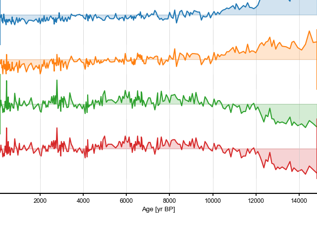In [1]: import pyleoclim as pyleo In [2]: url = 'http://wiki.linked.earth/wiki/index.php/Special:WTLiPD?op=export&lipdid=MD982176.Stott.2004' In [3]: data = pyleo.Lipd(usr_path = url) Disclaimer: LiPD files may be updated and modified to adhere to standards reading: MD982176.Stott.2004.lpd Finished read: 1 record In [4]: tslist = data.to_LipdSeriesList() extracting paleoData... extracting: MD982176.Stott.2004 Created time series: 6 entries In [5]: tslist = tslist[2:] # drop the first two series which only concerns age and depth In [6]: ms = pyleo.MultipleSeries(tslist) In [7]: fig, ax = ms.stackplot() <Figure size 640x480 with 5 Axes> In [8]: pyleo.closefig(fig)
- standardize()[source]
Standardize each series object in a collection
- Returns
ms – The standardized Series
- Return type
pyleoclim.MultipleSeries
- wavelet(method='wwz', settings={}, freq_method='log', ntau=None, freq_kwargs=None, verbose=False, mute_pbar=False)[source]
Wavelet analysis
- Parameters
method ({wwz, cwt}) – Whether to use the wwz method for unevenly spaced timeseries or traditional cwt (from pywavelets)
settings (dict) – Settings for the particular method. The default is {}.
freq_method (str) – {‘log’, ‘scale’, ‘nfft’, ‘lomb_scargle’, ‘welch’}
freq_kwargs (dict) – Arguments for frequency vector
ntau (int) – The length of the time shift points that determins the temporal resolution of the result. If None, it will be either the length of the input time axis, or at most 100.
settings – Arguments for the specific spectral method
verbose (bool) – If True, will print warning messages if there is any
- mute_pbarbool, optional
Whether to mute the progress bar. The default is False.
- Returns
scals
- Return type
pyleoclim.MultipleScalograms
See also
pyleoclim.utils.wavelet.wwzwwz function
pyleoclim.utils.wavelet.make_freqFunctions to create the frequency vector
pyleoclim.utils.tsutils.detrendDetrending function
pyleoclim.core.ui.Series.waveletwavelet analysis on single object
pyleoclim.core.ui.MultipleScalogramMultiple Scalogram object
EnsembleSeries (pyleoclim.EnsembleSeries)
The EnsembleSeries class is a child of MultipleSeries, designed for ensemble applications (e.g. draws from a posterior distribution of ages, model ensembles with randomized initial conditions, or some other stochastic ensemble). Compared to a MultipleSeries object, an EnsembleSeries object has the following properties: [TO BE COMPLETED]
- class pyleoclim.core.ui.EnsembleSeries(series_list)[source]
EnsembleSeries object
The EnsembleSeries object is a child of the MultipleSeries object, that is, a special case of MultipleSeries, aiming for ensembles of similar series. Ensembles usually arise from age modeling or Bayesian calibrations. All members of an EnsembleSeries object are assumed to share identical labels and units.
All methods available for MultipleSeries are available for EnsembleSeries. Some functions were modified for the special case of ensembles.
Methods
append(ts)Append timeseries ts to MultipleSeries object
bin(**kwargs)Aligns the time axes of a MultipleSeries object, via binning.
common_time([method, common_step, start, ...])Aligns the time axes of a MultipleSeries object, via binning interpolation., or Gaussian kernel.
convert_time_unit([time_unit])Convert the time unit of the timeseries
copy()Copy the object
correlation([target, timespan, alpha, ...])Calculate the correlation between an EnsembleSeries object to a target.
detrend([method])Detrend timeseries
distplot([figsize, title, savefig_settings, ...])Plots the distribution of the timeseries across ensembles
equal_lengths()Test whether all series in object have equal length
filter([cutoff_freq, cutoff_scale, method])Filtering the timeseries in the MultipleSeries object
gkernel(**kwargs)Aligns the time axes of a MultipleSeries object, via Gaussian kernel.
grid_properties([step_style])Extract grid properties (start, stop, step) of all the Series objects in a collection.
interp(**kwargs)Aligns the time axes of a MultipleSeries object, via interpolation.
Initialization of labels
pca([weights, missing, tol_em, max_em_iter])Principal Component Analysis (Empirical Orthogonal Functions)
plot([figsize, marker, markersize, ...])Plot multiple timeseries on the same axis
plot_envelope([figsize, qs, xlabel, ylabel, ...])Plot EnsembleSeries as an envelope.
plot_traces([figsize, xlabel, ylabel, ...])Plot EnsembleSeries as a subset of traces.
quantiles([qs])Calculate quantiles of an EnsembleSeries object
spectral([method, settings, mute_pbar, ...])Perform spectral analysis on the timeseries
stackplot([figsize, savefig_settings, xlim, ...])Stack plot of multiple series
standardize()Standardize each series object in a collection
wavelet([method, settings, freq_method, ...])Wavelet analysis
- correlation(target=None, timespan=None, alpha=0.05, settings=None, fdr_kwargs=None, common_time_kwargs=None, mute_pbar=False, seed=None)[source]
Calculate the correlation between an EnsembleSeries object to a target.
If the target is not specified, then the 1st member of the ensemble will be the target Note that the FDR approach is applied by default to determine the significance of the p-values (more information in See Also below).
- Parameters
target (pyleoclim.Series or pyleoclim.EnsembleSeries, optional) – A pyleoclim Series object or EnsembleSeries object. When the target is also an EnsembleSeries object, then the calculation of correlation is performed in a one-to-one sense, and the ourput list of correlation values and p-values will be the size of the series_list of the self object. That is, if the self object contains n Series, and the target contains n+m Series, then only the first n Series from the object will be used for the calculation; otherwise, if the target contains only n-m Series, then the first m Series in the target will be used twice in sequence.
timespan (tuple) – The time interval over which to perform the calculation
alpha (float) – The significance level (0.05 by default)
settings (dict) –
Parameters for the correlation function, including:
- nsimint
the number of simulations (default: 1000)
- methodstr, {‘ttest’,’isopersistent’,’isospectral’ (default)}
method for significance testing
fdr_kwargs (dict) – Parameters for the FDR function
common_time_kwargs (dict) – Parameters for the method MultipleSeries.common_time()
mute_pbar (bool) – If True, the progressbar will be muted. Default is False.
seed (float or int) – random seed for isopersistent and isospectral methods
- Returns
corr – the result object, see pyleoclim.ui.CorrEns
- Return type
pyleoclim.ui.CorrEns
See also
pyleoclim.utils.correlation.corr_sigCorrelation function
pyleoclim.utils.correlation.fdrFDR function
pyleoclim.ui.CorrEnsthe correlation ensemble object
Examples
In [1]: import pyleoclim as pyleo In [2]: import numpy as np In [3]: from pyleoclim.utils.tsmodel import colored_noise In [4]: nt = 100 In [5]: t0 = np.arange(nt) In [6]: v0 = colored_noise(alpha=1, t=t0) In [7]: noise = np.random.normal(loc=0, scale=1, size=nt) In [8]: ts0 = pyleo.Series(time=t0, value=v0) In [9]: ts1 = pyleo.Series(time=t0, value=v0+noise) In [10]: ts2 = pyleo.Series(time=t0, value=v0+2*noise) In [11]: ts3 = pyleo.Series(time=t0, value=v0+1/2*noise) In [12]: ts_list1 = [ts0, ts1] In [13]: ts_list2 = [ts2, ts3] In [14]: ts_ens = pyleo.EnsembleSeries(ts_list1) In [15]: ts_target = pyleo.EnsembleSeries(ts_list2) # set an arbitrary randome seed to fix the result In [16]: corr_res = ts_ens.correlation(ts_target, seed=2333) In [17]: print(corr_res) correlation p-value signif. w/o FDR (α: 0.05) signif. w/ FDR (α: 0.05) ------------- --------- --------------------------- -------------------------- 0.991122 < 1e-6 True True 0.999445 < 1e-6 True True Ensemble size: 2
- distplot(figsize=[10, 4], title=None, savefig_settings=None, ax=None, ylabel='KDE', vertical=False, edgecolor='w', mute=False, **plot_kwargs)[source]
Plots the distribution of the timeseries across ensembles
- Parameters
figsize (list, optional) – The size of the figure. The default is [10, 4].
title (str, optional) – Title for the figure. The default is None.
savefig_settings (dict, optional) –
- the dictionary of arguments for plt.savefig(); some notes below:
”path” must be specified; it can be any existed or non-existed path, with or without a suffix; if the suffix is not given in “path”, it will follow “format”
”format” can be one of {“pdf”, “eps”, “png”, “ps”}.
The default is None.
ax (matplotlib.axis, optional) – A matplotlib axis. The default is None.
ylabel (str, optional) – Label for the count axis. The default is ‘KDE’.
vertical ({True,False}, optional) – Whether to flip the plot vertically. The default is False.
edgecolor (matplotlib.color, optional) – The color of the edges of the bar. The default is ‘w’.
mute ({True,False}, optional) –
- if True, the plot will not show;
recommend to turn on when more modifications are going to be made on ax. The default is False.
**plot_kwargs (dict) – Plotting arguments for seaborn histplot: https://seaborn.pydata.org/generated/seaborn.histplot.html.
See also
pyleoclim.utils.plotting.savefigsaving figure in Pyleoclim
- make_labels()[source]
Initialization of labels
- Returns
time_header (str) – Label for the time axis
value_header (str) – Label for the value axis
- plot_envelope(figsize=[10, 4], qs=[0.025, 0.25, 0.5, 0.75, 0.975], xlabel=None, ylabel=None, title=None, xlim=None, ylim=None, savefig_settings=None, ax=None, plot_legend=True, curve_clr='#d9544d', curve_lw=2, shade_clr='#d9544d', shade_alpha=0.2, inner_shade_label='IQR', outer_shade_label='95% CI', lgd_kwargs=None, mute=False)[source]
Plot EnsembleSeries as an envelope.
- Parameters
figsize (list, optional) – The figure size. The default is [10, 4].
qs (list, optional) – The significance levels to consider. The default is [0.025, 0.25, 0.5, 0.75, 0.975] (median, interquartile range, and central 95% region)
xlabel (str, optional) – x-axis label. The default is None.
ylabel (str, optional) – y-axis label. The default is None.
title (str, optional) – Plot title. The default is None.
xlim (list, optional) – x-axis limits. The default is None.
ylim (list, optional) – y-axis limits. The default is None.
savefig_settings (dict, optional) –
the dictionary of arguments for plt.savefig(); some notes below: - “path” must be specified; it can be any existed or non-existed path,
with or without a suffix; if the suffix is not given in “path”, it will follow “format”
”format” can be one of {“pdf”, “eps”, “png”, “ps”} The default is None.
ax (matplotlib.ax, optional) – Matplotlib axis on which to return the plot. The default is None.
plot_legend (bool, optional) – Wether to plot the legend. The default is True.
curve_clr (str, optional) – Color of the main line (median). The default is sns.xkcd_rgb[‘pale red’].
curve_lw (str, optional) – Width of the main line (median). The default is 2.
shade_clr (str, optional) – Color of the shaded envelope. The default is sns.xkcd_rgb[‘pale red’].
shade_alpha (float, optional) – Transparency on the envelope. The default is 0.2.
inner_shade_label (str, optional) – Label for the envelope. The default is ‘IQR’.
outer_shade_label (str, optional) – Label for the envelope. The default is ‘95% CI’.
lgd_kwargs (dict, optional) – Parameters for the legend. The default is None.
mute (bool, optional) – if True, the plot will not show; recommend to turn on when more modifications are going to be made on ax. The default is False.
- Returns
- Return type
fig, ax
Examples
In [1]: nn = 30 # number of noise realizations In [2]: nt = 500 In [3]: series_list = [] In [4]: signal = pyleo.gen_ts(model='colored_noise',nt=nt,alpha=1.0).standardize() In [5]: noise = np.random.randn(nt,nn) In [6]: for idx in range(nn): # noise ...: ts = pyleo.Series(time=signal.time, value=signal.value+noise[:,idx]) ...: series_list.append(ts) ...: In [7]: ts_ens = pyleo.EnsembleSeries(series_list) In [8]: fig, ax = ts_ens.plot_envelope(curve_lw=1.5) <Figure size 1000x400 with 1 Axes> In [9]: pyleo.closefig(fig)
- plot_traces(figsize=[10, 4], xlabel=None, ylabel=None, title=None, num_traces=10, seed=None, xlim=None, ylim=None, linestyle='-', savefig_settings=None, ax=None, plot_legend=True, color='#d9544d', lw=0.5, alpha=0.3, lgd_kwargs=None, mute=False)[source]
Plot EnsembleSeries as a subset of traces.
- Parameters
figsize (list, optional) – The figure size. The default is [10, 4].
xlabel (str, optional) – x-axis label. The default is None.
ylabel (str, optional) – y-axis label. The default is None.
title (str, optional) – Plot title. The default is None.
xlim (list, optional) – x-axis limits. The default is None.
ylim (list, optional) – y-axis limits. The default is None.
color (str, optional) – Color of the traces. The default is sns.xkcd_rgb[‘pale red’].
alpha (float, optional) – Transparency of the lines representing the multiple members. The default is 0.3.
linestyle ({'-', '--', '-.', ':', '', (offset, on-off-seq), ...}) – Set the linestyle of the line
lw (float, optional) – Width of the lines representing the multiple members. The default is 0.5.
num_traces (int, optional) – Number of traces to plot. The default is 10.
savefig_settings (dict, optional) –
the dictionary of arguments for plt.savefig(); some notes below: - “path” must be specified; it can be any existed or non-existed path,
with or without a suffix; if the suffix is not given in “path”, it will follow “format”
”format” can be one of {“pdf”, “eps”, “png”, “ps”} The default is None.
ax (matplotlib.ax, optional) – Matplotlib axis on which to return the plot. The default is None.
plot_legend (bool, optional) – Whether to plot the legend. The default is True.
lgd_kwargs (dict, optional) – Parameters for the legend. The default is None.
mute (bool, optional) – if True, the plot will not show; recommend to turn on when more modifications are going to be made on ax. The default is False.
seed (int, optional) – Set the seed for the random number generator. Useful for reproducibility. The default is None.
- Returns
- Return type
fig, ax
Examples
In [1]: nn = 30 # number of noise realizations In [2]: nt = 500 In [3]: series_list = [] In [4]: signal = pyleo.gen_ts(model='colored_noise',nt=nt,alpha=1.0).standardize() In [5]: noise = np.random.randn(nt,nn) In [6]: for idx in range(nn): # noise ...: ts = pyleo.Series(time=signal.time, value=signal.value+noise[:,idx]) ...: series_list.append(ts) ...: In [7]: ts_ens = pyleo.EnsembleSeries(series_list) In [8]: fig, ax = ts_ens.plot_traces(alpha=0.2,num_traces=8) <Figure size 1000x400 with 1 Axes> In [9]: pyleo.closefig(fig)
- quantiles(qs=[0.05, 0.5, 0.95])[source]
Calculate quantiles of an EnsembleSeries object
- Parameters
qs (list, optional) – List of quantiles to consider for the calculation. The default is [0.05, 0.5, 0.95].
- Returns
ens_qs
- Return type
pyleoclim.EnsembleSeries
- stackplot(figsize=[5, 15], savefig_settings=None, xlim=None, fill_between_alpha=0.2, colors=None, cmap='tab10', norm=None, spine_lw=1.5, grid_lw=0.5, font_scale=0.8, label_x_loc=- 0.15, v_shift_factor=0.75, linewidth=1.5, mute=False)[source]
Stack plot of multiple series
- Note that the plotting style is uniquely designed for this one and cannot be properly reset with pyleoclim.set_style().
Parameters
- figsizelist
Size of the figure.
- colorsa list of, or one, Python supported color code (a string of hex code or a tuple of rgba values)
Colors for plotting. If None, the plotting will cycle the ‘tab10’ colormap; if only one color is specified, then all curves will be plotted with that single color; if a list of colors are specified, then the plotting will cycle that color list.
- cmapstr
The colormap to use when “colors” is None.
- normmatplotlib.colors.Normalize like
The nomorlization for the colormap. If None, a linear normalization will be used.
- savefig_settingsdictionary
the dictionary of arguments for plt.savefig(); some notes below: - “path” must be specified; it can be any existed or non-existed path,
with or without a suffix; if the suffix is not given in “path”, it will follow “format”
“format” can be one of {“pdf”, “eps”, “png”, “ps”} The default is None.
- xlimlist
The x-axis limit.
- fill_between_alphafloat
The transparency for the fill_between shades.
- spine_lwfloat
The linewidth for the spines of the axes.
- grid_lwfloat
The linewidth for the gridlines.
- linewidthfloat
The linewidth for the curves.
- font_scalefloat
The scale for the font sizes. Default is 0.8.
- label_x_locfloat
The x location for the label of each curve.
- v_shift_factorfloat
The factor for the vertical shift of each axis. The default value 3/4 means the top of the next axis will be located at 3/4 of the height of the previous one.
- Returns
- Return type
fig, ax
SurrogateSeries (pyleoclim.SurrogateSeries)
- class pyleoclim.core.ui.SurrogateSeries(series_list, surrogate_method=None, surrogate_args=None)[source]
Object containing surrogate timeseries, usually obtained through recursive modeling (e.g., AR1)
Surrogate Series is a child of MultipleSeries. All methods available for MultipleSeries are available for surrogate series.
Methods
append(ts)Append timeseries ts to MultipleSeries object
bin(**kwargs)Aligns the time axes of a MultipleSeries object, via binning.
common_time([method, common_step, start, ...])Aligns the time axes of a MultipleSeries object, via binning interpolation., or Gaussian kernel.
convert_time_unit([time_unit])Convert the time unit of the timeseries
copy()Copy the object
correlation([target, timespan, alpha, ...])Calculate the correlation between a MultipleSeries and a target Series
detrend([method])Detrend timeseries
equal_lengths()Test whether all series in object have equal length
filter([cutoff_freq, cutoff_scale, method])Filtering the timeseries in the MultipleSeries object
gkernel(**kwargs)Aligns the time axes of a MultipleSeries object, via Gaussian kernel.
grid_properties([step_style])Extract grid properties (start, stop, step) of all the Series objects in a collection.
interp(**kwargs)Aligns the time axes of a MultipleSeries object, via interpolation.
pca([weights, missing, tol_em, max_em_iter])Principal Component Analysis (Empirical Orthogonal Functions)
plot([figsize, marker, markersize, ...])Plot multiple timeseries on the same axis
spectral([method, settings, mute_pbar, ...])Perform spectral analysis on the timeseries
stackplot([figsize, savefig_settings, xlim, ...])Stack plot of multiple series
standardize()Standardize each series object in a collection
wavelet([method, settings, freq_method, ...])Wavelet analysis
Lipd (pyleoclim.Lipd)
This class allows to manipulate LiPD objects.
- class pyleoclim.core.ui.Lipd(usr_path=None, lipd_dict=None, validate=False, remove=False)[source]
Create a Lipd object from Lipd Files
- Parameters
usr_path (str) – path to the Lipd file(s). Can be URL (LiPD utilities only support loading one file at a time from a URL) If it’s a URL, it must start with “http”, “https”, or “ftp”.
lidp_dict (dict) – LiPD files already loaded into Python through the LiPD utilities
validate (bool) – Validate the LiPD files upon loading. Note that for a large library this can take up to half an hour.
remove (bool) – If validate is True and remove is True, ignores non-valid Lipd files. Note that loading unvalidated Lipd files may result in errors for some functionalities but not all.
Examples
In [1]: import pyleoclim as pyleo In [2]: url='http://wiki.linked.earth/wiki/index.php/Special:WTLiPD?op=export&lipdid=MD982176.Stott.2004' In [3]: d=pyleo.Lipd(usr_path=url) Disclaimer: LiPD files may be updated and modified to adhere to standards reading: MD982176.Stott.2004.lpd Finished read: 1 record
Methods
copy()Copy the object
extract(dataSetName)- param dataSetName
Extract a particular dataset
mapAllArchive([projection, proj_default, ...])Map the records contained in LiPD files by archive type
to_LipdSeries([number, mode])Extracts one timeseries from the Lipd object
to_LipdSeriesList([mode])Extracts all LiPD timeseries objects to a list of LipdSeries objects
to_tso()Extracts all the timeseries objects to a list of LiPD tso
- extract(dataSetName)[source]
- Parameters
dataSetName (str) – Extract a particular dataset
- Returns
new – A new object corresponding to a particular dataset
- Return type
pyleoclim.Lipd
- mapAllArchive(projection='Robinson', proj_default=True, background=True, borders=False, rivers=False, lakes=False, figsize=None, ax=None, marker=None, color=None, markersize=None, scatter_kwargs=None, legend=True, lgd_kwargs=None, savefig_settings=None, mute=False)[source]
Map the records contained in LiPD files by archive type
- Parameters
projection (str, optional) – The projection to use. The default is ‘Robinson’.
proj_default (bool, optional) – Wether to use the Pyleoclim defaults for each projection type. The default is True.
background (bool, optional) – Wether to use a backgound. The default is True.
borders (bool, optional) – Draw borders. The default is False.
rivers (bool, optional) – Draw rivers. The default is False.
lakes (bool, optional) – Draw lakes. The default is False.
figsize (list, optional) – The size of the figure. The default is None.
ax (matplotlib.ax, optional) – The matplotlib axis onto which to return the map. The default is None.
marker (str, optional) – The marker type for each archive. The default is None. Uses plot_default
color (str, optional) – Color for each acrhive. The default is None. Uses plot_default
markersize (float, optional) – Size of the marker. The default is None.
scatter_kwargs (dict, optional) – Parameters for the scatter plot. The default is None.
legend (bool, optional) – Whether to plot the legend. The default is True.
lgd_kwargs (dict, optional) – Arguments for the legend. The default is None.
savefig_settings (dictionary, optional) –
the dictionary of arguments for plt.savefig(); some notes below: - “path” must be specified; it can be any existed or non-existed path,
with or without a suffix; if the suffix is not given in “path”, it will follow “format”
”format” can be one of {“pdf”, “eps”, “png”, “ps”}. The default is None.
mute (bool, optional) – if True, the plot will not show; recommend to turn on when more modifications are going to be made on ax. The default is False.
- Returns
res – The figure
- Return type
figure
See also
pyleoclim.utils.mapping.map_allUnderlying mapping function for Pyleoclim
Examples
For speed, we are only using one LiPD file. But these functions can load and map multiple.
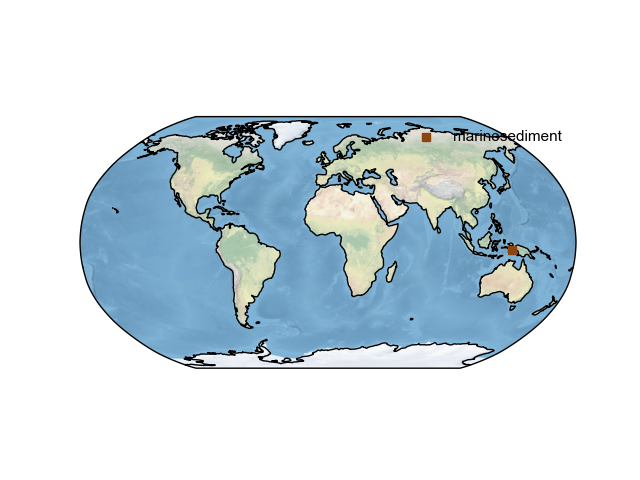In [1]: import pyleoclim as pyleo In [2]: url = 'http://wiki.linked.earth/wiki/index.php/Special:WTLiPD?op=export&lipdid=MD982176.Stott.2004' In [3]: data = pyleo.Lipd(usr_path = url) Disclaimer: LiPD files may be updated and modified to adhere to standards reading: MD982176.Stott.2004.lpd Finished read: 1 record In [4]: fig, ax = data.mapAllArchive() <Figure size 640x480 with 1 Axes> In [5]: pyleo.closefig(fig)
Change the markersize
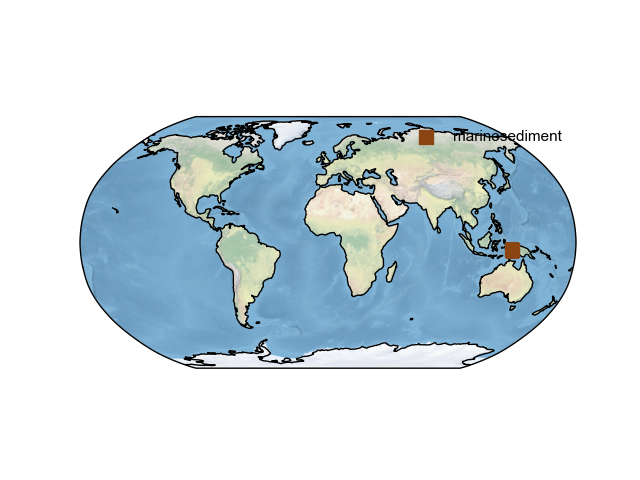In [6]: import pyleoclim as pyleo In [7]: url = 'http://wiki.linked.earth/wiki/index.php/Special:WTLiPD?op=export&lipdid=MD982176.Stott.2004' In [8]: data = pyleo.Lipd(usr_path = url) Disclaimer: LiPD files may be updated and modified to adhere to standards reading: MD982176.Stott.2004.lpd Finished read: 1 record In [9]: fig, ax = data.mapAllArchive(markersize=100) <Figure size 640x480 with 1 Axes> In [10]: pyleo.closefig(fig)
- to_LipdSeries(number=None, mode='paleo')[source]
Extracts one timeseries from the Lipd object
Note that this function may require user interaction.
- Parameters
number (int) – the number of the timeseries object
mode ({'paleo','chron'}) – whether to extract the paleo or chron series.
- Returns
ts – A LipdSeries object
- Return type
pyleoclim.LipdSeries
See also
pyleoclim.ui.LipdSeriesLipdSeries object
- to_LipdSeriesList(mode='paleo')[source]
Extracts all LiPD timeseries objects to a list of LipdSeries objects
- Parameters
mode ({'paleo','chron'}) – Whether to extract the timeseries information from the paleo tables or chron tables
- Returns
res – A list of LiPDSeries objects
- Return type
list
See also
pyleoclim.ui.LipdSeriesLipdSeries object
LipdSeries (pyleoclim.LipdSeries)
LipdSeries are (you guessed it), Series objects that are created from LiPD objects. As a subclass of Series, they inherit all its methods. When created, LiPDSeries automatically instantiates the time, value and other parameters from what’s in the lipd file.
- class pyleoclim.core.ui.LipdSeries(tso, clean_ts=True)[source]
Lipd time series object
These objects can be obtained from a LiPD file/object either through Pyleoclim or the LiPD utilities. If multiple objects (i.e., a list) is given, then the user will be prompted to choose one timeseries.
LipdSeries is a child of Series, therefore all the methods available for Series apply to LipdSeries in addition to some specific methods.
Examples
In this example, we will import a LiPD file and explore the various options to create a series object.
First, let’s look at the Lipd.to_tso option. This method is attractive because the object is a list of dictionaries that are easily explored in Python.
In [1]: import pyleoclim as pyleo In [2]: url = 'http://wiki.linked.earth/wiki/index.php/Special:WTLiPD?op=export&lipdid=MD982176.Stott.2004' In [3]: data = pyleo.Lipd(usr_path = url) Disclaimer: LiPD files may be updated and modified to adhere to standards reading: MD982176.Stott.2004.lpd Finished read: 1 record In [4]: ts_list = data.to_tso() extracting paleoData... extracting: MD982176.Stott.2004 Created time series: 6 entries # Print out the dataset name and the variable name In [5]: for item in ts_list: ...: print(item['dataSetName']+': '+item['paleoData_variableName']) ...: MD982176.Stott.2004: depth MD982176.Stott.2004: yrbp MD982176.Stott.2004: d18og.rub MD982176.Stott.2004: d18ow-s MD982176.Stott.2004: mg/ca-g.rub MD982176.Stott.2004: sst # Load the sst data into a LipdSeries. Since Python indexing starts at zero, sst has index 5. In [6]: ts = pyleo.LipdSeries(ts_list[5])
If you attempt to pass the full list of series, Pyleoclim will prompt you to choose a series by printing out something similar as above. If you already now the number of the timeseries object you’re interested in, then you should use the following:
In [7]: ts1 = data.to_LipdSeries(number=5) extracting paleoData... extracting: MD982176.Stott.2004 Created time series: 6 entries
If number is not specified, Pyleoclim will prompt you for the number automatically.
Sometimes, one may want to create a MultipleSeries object from a collection of LiPD files. In this case, we recommend using the following:
In [8]: ts_list = data.to_LipdSeriesList() extracting paleoData... extracting: MD982176.Stott.2004 Created time series: 6 entries # only keep the Mg/Ca and SST In [9]: ts_list=ts_list[4:] #create a MultipleSeries object In [10]: ms=pyleo.MultipleSeries(ts_list)
Methods
anomaly([timespan])Calculate the anomaly of the series
bin(**kwargs)Bin values in a time series
causality(target_series[, method, settings])Perform causality analysis with the target timeseries
chronEnsembleToPaleo(D[, modelNumber, ...])Fetch chron ensembles from a lipd object and return the ensemble as MultipleSeries
clean([verbose])Clean up the timeseries by removing NaNs and sort with increasing time points
convert_time_unit([time_unit])Convert the time unit of the Series object
copy()Copy the object
correlation(target_series[, timespan, ...])Estimates the Pearson's correlation and associated significance between two non IID time series
dashboard([figsize, plt_kwargs, ...])- param figsize
Figure size. The default is [11,8].
detrend([method])Detrend Series object
distplot([figsize, title, savefig_settings, ...])Plot the distribution of the timeseries values
fill_na([timespan, dt])Fill NaNs into the timespan
filter([cutoff_freq, cutoff_scale, method])Filtering methods for Series objects using four possible methods:
gaussianize()Gaussianizes the timeseries
Get the necessary metadata for the ensemble plots
gkernel([step_type])Coarse-grain a Series object via a Gaussian kernel.
interp([method])Interpolate a Series object onto a new time axis
is_evenly_spaced([tol])Check if the Series time axis is evenly-spaced, within tolerance
make_labels()Initialization of labels
map([projection, proj_default, background, ...])Map the location of the record
mapNearRecord(D[, n, radius, sameArchive, ...])Map records that are near the timeseries of interest
outliers([auto, remove, fig_outliers, ...])Detects outliers in a timeseries and removes if specified
plot([figsize, marker, markersize, color, ...])Plot the timeseries
plot_age_depth([figsize, plt_kwargs, ...])- param figsize
Size of the figure. The default is [10,4].
segment([factor])Gap detection
slice(timespan)Slicing the timeseries with a timespan (tuple or list)
sort([verbose])Ensure timeseries is aligned to a prograde axis.
spectral([method, freq_method, freq_kwargs, ...])Perform spectral analysis on the timeseries
ssa([M, nMC, f, trunc, var_thresh])Singular Spectrum Analysis
standardize()Standardizes the time series
stats()Compute basic statistics for the time series
summary_plot([psd, scalogram, figsize, ...])Generate a plot of the timeseries and its frequency content through spectral and wavelet analyses.
surrogates([method, number, length, seed, ...])Generate surrogates with increasing time axis
wavelet([method, settings, freq_method, ...])Perform wavelet analysis on the timeseries
wavelet_coherence(target_series[, method, ...])Perform wavelet coherence analysis with the target timeseries
- chronEnsembleToPaleo(D, modelNumber=None, tableNumber=None)[source]
Fetch chron ensembles from a lipd object and return the ensemble as MultipleSeries
- Parameters
D (a LiPD object) –
modelNumber (int, optional) – Age model number. The default is None.
tableNumber (int, optional) – Table Number. The default is None.
- Raises
ValueError – DESCRIPTION.
- Returns
ms – An EnsembleSeries object with each series representing a possible realization of the age model
- Return type
pyleoclim.EnsembleSeries
- dashboard(figsize=[11, 8], plt_kwargs=None, distplt_kwargs=None, spectral_kwargs=None, spectralsignif_kwargs=None, spectralfig_kwargs=None, map_kwargs=None, metadata=True, savefig_settings=None, mute=False, ensemble=False, D=None)[source]
- Parameters
figsize (list, optional) – Figure size. The default is [11,8].
plt_kwargs (dict, optional) – Optional arguments for the timeseries plot. See Series.plot() or EnsembleSeries.plot_envelope(). The default is None.
distplt_kwargs (dict, optional) – Optional arguments for the distribution plot. See Series.distplot() or EnsembleSeries.plot_displot(). The default is None.
spectral_kwargs (dict, optional) – Optional arguments for the spectral method. Default is to use Lomb-Scargle method. See Series.spectral() or EnsembleSeries.spectral(). The default is None.
spectralsignif_kwargs (dict, optional) – Optional arguments to estimate the significance of the power spectrum. See PSD.signif_test. Note that we currently do not support significance testing for ensembles. The default is None.
spectralfig_kwargs (dict, optional) – Optional arguments for the power spectrum figure. See PSD.plot() or MultiplePSD.plot_envelope(). The default is None.
map_kwargs (dict, optional) – Optional arguments for the map. See LipdSeries.map(). The default is None.
metadata ({True,False}, optional) – Whether or not to produce a dashboard with printed metadata. The default is True.
savefig_settings (dict, optional) –
the dictionary of arguments for plt.savefig(); some notes below: - “path” must be specified; it can be any existed or non-existed path,
with or without a suffix; if the suffix is not given in “path”, it will follow “format”
”format” can be one of {“pdf”, “eps”, “png”, “ps”}.
The default is None.
mute ({True,False}, optional) – if True, the plot will not show; recommend to turn on when more modifications are going to be made on ax. The default is False.
ensemble ({True, False}, optional) – If True, will return the dashboard in ensemble modes if ensembles are available
D (pyleoclim.Lipd) – If asking for an ensemble plot, a pyleoclim.Lipd object must be provided
- Returns
fig (matplotlib.figure) – The figure
ax (matplolib.axis) – The axis.
See also
pyleoclim.Series.plotplot a timeseries
pyleoclim.EnsembleSeries.plot_envelopeEnvelope plots for an ensemble
pyleoclim.Series.distplotplot a distribution of the timeseries
pyleoclim.EnsembleSeries.distplotplot a distribution of the timeseries across ensembles
pyleoclim.Series.spectralspectral analysis method.
pyleoclim.MultipleSeries.spectralspectral analysis method for multiple series.
pyleoclim.PSD.signif_testsignificance test for timeseries analysis
pyleoclim.PSD.plotplot power spectrum
pyleoclim.MulitplePSD.plotplot envelope of power spectrum
pyleoclim.LipdSeries.mapmap location of dataset
pyleolim.LipdSeries.getMetadataget relevant metadata from the timeseries object
pyleoclim.utils.mapping.map_allUnderlying mapping function for Pyleoclim
Examples
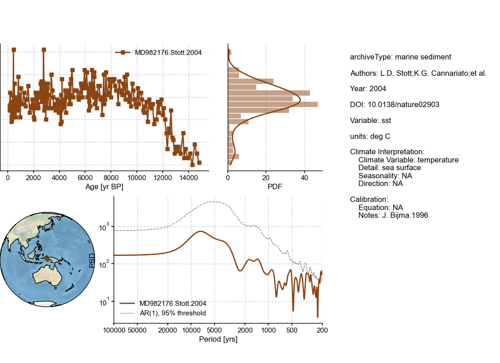In [1]: import pyleoclim as pyleo In [2]: url = 'http://wiki.linked.earth/wiki/index.php/Special:WTLiPD?op=export&lipdid=MD982176.Stott.2004' In [3]: data = pyleo.Lipd(usr_path = url) Disclaimer: LiPD files may be updated and modified to adhere to standards reading: MD982176.Stott.2004.lpd Finished read: 1 record In [4]: ts = data.to_LipdSeries(number=5) extracting paleoData... extracting: MD982176.Stott.2004 Created time series: 6 entries In [5]: fig, ax = ts.dashboard() <Figure size 1100x800 with 4 Axes> In [6]: pyleo.closefig(fig)
- getMetadata()[source]
Get the necessary metadata for the ensemble plots
- Parameters
timeseries (object) – a specific timeseries object.
- Returns
res –
- A dictionary containing the following metadata:
archiveType Authors (if more than 2, replace by et al) PublicationYear Publication DOI Variable Name Units Climate Interpretation Calibration Equation Calibration References Calibration Notes
- Return type
dict
- map(projection='Orthographic', proj_default=True, background=True, borders=False, rivers=False, lakes=False, figsize=None, ax=None, marker=None, color=None, markersize=None, scatter_kwargs=None, legend=True, lgd_kwargs=None, savefig_settings=None, mute=False)[source]
Map the location of the record
- Parameters
projection (str, optional) – The projection to use. The default is ‘Robinson’.
proj_default (bool, optional) – Wether to use the Pyleoclim defaults for each projection type. The default is True.
background (bool, optional) – Wether to use a backgound. The default is True.
borders (bool, optional) – Draw borders. The default is False.
rivers (bool, optional) – Draw rivers. The default is False.
lakes (bool, optional) – Draw lakes. The default is False.
figsize (list, optional) – The size of the figure. The default is None.
ax (matplotlib.ax, optional) – The matplotlib axis onto which to return the map. The default is None.
marker (str, optional) – The marker type for each archive. The default is None. Uses plot_default
color (str, optional) – Color for each acrhive. The default is None. Uses plot_default
markersize (float, optional) – Size of the marker. The default is None.
scatter_kwargs (dict, optional) – Parameters for the scatter plot. The default is None.
legend (bool, optional) – Whether to plot the legend. The default is True.
lgd_kwargs (dict, optional) – Arguments for the legend. The default is None.
savefig_settings (dictionary, optional) –
the dictionary of arguments for plt.savefig(); some notes below: - “path” must be specified; it can be any existed or non-existed path,
with or without a suffix; if the suffix is not given in “path”, it will follow “format”
”format” can be one of {“pdf”, “eps”, “png”, “ps”}. The default is None.
mute (bool, optional) – if True, the plot will not show; recommend to turn on when more modifications are going to be made on ax. The default is False.
- Returns
res
- Return type
fig,ax
See also
pyleoclim.utils.mapping.map_allUnderlying mapping function for Pyleoclim
Examples
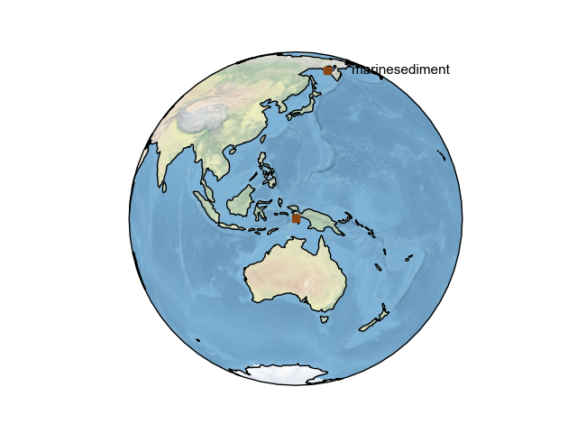In [1]: import pyleoclim as pyleo In [2]: url = 'http://wiki.linked.earth/wiki/index.php/Special:WTLiPD?op=export&lipdid=MD982176.Stott.2004' In [3]: data = pyleo.Lipd(usr_path = url) Disclaimer: LiPD files may be updated and modified to adhere to standards reading: MD982176.Stott.2004.lpd Finished read: 1 record In [4]: ts = data.to_LipdSeries(number=5) extracting paleoData... extracting: MD982176.Stott.2004 Created time series: 6 entries In [5]: fig, ax = ts.map() <Figure size 640x480 with 1 Axes> In [6]: pyleo.closefig(fig)
- mapNearRecord(D, n=5, radius=None, sameArchive=False, projection='Orthographic', proj_default=True, background=True, borders=False, rivers=False, lakes=False, figsize=None, ax=None, marker_ref=None, color_ref=None, marker=None, color=None, markersize_adjust=False, scale_factor=100, scatter_kwargs=None, legend=True, lgd_kwargs=None, savefig_settings=None, mute=False)[source]
Map records that are near the timeseries of interest
- Parameters
D (pyleoclim.Lipd) – A pyleoclim LiPD object
n (int, optional) – The n number of closest records. The default is 5.
radius (float, optional) – The radius to take into consideration when looking for records (in km). The default is None.
sameArchive ({True, False}, optional) – Whether to consider records from the same archiveType as the original record. The default is False.
projection (string, optional) – A valid cartopy projection. The default is ‘Orthographic’.
proj_default (True or dict, optional) – The projection arguments. If not True, then use a dictionary to pass the appropriate arguments depending on the projection. The default is True.
background ({True,False}, optional) – Whether to use a background. The default is True.
borders ({True, False}, optional) – Whether to plot country borders. The default is False.
rivers ({True, False}, optional) – Whether to plot rivers. The default is False.
lakes ({True, False}, optional) – Whether to plot rivers. The default is False.
figsize (list, optional) – the size of the figure. The default is None.
ax (matplotlib.ax, optional) – The matplotlib axis onto which to return the map. The default is None.
marker_ref (str, optional) – Marker shape to use for the main record. The default is None, which corresponds to the default marker for the archiveType
color_ref (str, optional) – The color for the main record. The default is None, which corresponds to the default color for the archiveType.
marker (str or list, optional) – Marker shape to use for the other records. The default is None, which corresponds to the marker shape for each archiveType.
color (str or list, optional) – Color for each marker. The default is None, which corresponds to the color for each archiveType
markersize_adjust ({True, False}, optional) – Whether to adjust the marker size according to distance from record of interest. The default is False.
scale_factor (int, optional) – The maximum marker size. The default is 100.
scatter_kwargs (dict, optional) – Parameters for the scatter plot. The default is None.
legend ({True, False}, optional) – Whether to show the legend. The default is True.
lgd_kwargs (dict, optional) – Parameters for the legend. The default is None.
savefig_settings (dict, optional) –
the dictionary of arguments for plt.savefig(); some notes below: - “path” must be specified; it can be any existed or non-existed path,
with or without a suffix; if the suffix is not given in “path”, it will follow “format”
”format” can be one of {“pdf”, “eps”, “png”, “ps”}. The default is None.
mute ({True, False}, optional) – if True, the plot will not show; recommend to turn on when more modifications are going to be made on ax. The default is False.
See also
pyleoclim.utils.mapping.map_allUnderlying mapping function for Pyleoclim
pyleoclim.utils.mapping.dist_sphereCalculate distance on a sphere
pyleoclim.utils.mapping.compute_distCompute the distance between a point and an array
pyleoclim.utils.mapping.within_distanceReturns point in an array within a certain distance
- Returns
res – contains fig and ax
- Return type
dict
- plot_age_depth(figsize=[10, 4], plt_kwargs=None, savefig_settings=None, mute=False, ensemble=False, D=None, num_traces=10, ensemble_kwargs=None, envelope_kwargs=None, traces_kwargs=None)[source]
- Parameters
figsize (List, optional) – Size of the figure. The default is [10,4].
plt_kwargs (dict, optional) – Arguments for basic plot. See Series.plot() for details. The default is None.
savefig_settings (dict, optional) –
the dictionary of arguments for plt.savefig(); some notes below: - “path” must be specified; it can be any existed or non-existed path,
with or without a suffix; if the suffix is not given in “path”, it will follow “format”
”format” can be one of {“pdf”, “eps”, “png”, “ps”}. The default is None.
mute ({True,False}, optional) – if True, the plot will not show; recommend to turn on when more modifications are going to be made on ax. The default is False.
ensemble ({True,False}, optional) – Whether to use age model ensembles stored in the file for the plot. The default is False. If no ensemble can be found, will error out.
D (pyleoclim.Lipd, optional) – The pyleoclim.Lipd object from which the pyleoclim.LipdSeries is derived. The default is None.
num_traces (int, optional) – Number of individual age models to plot. If not interested in plotting individual traces, set this parameter to 0 or None. The default is 10.
ensemble_kwargs (dict, optional) – Parameters associated with identifying the chronEnsemble tables. See pyleoclim.LipdSeries.chronEnsembleToPaleo() for details. The default is None.
envelope_kwargs (dict, optional) – Parameters to control the envelope plot. See pyleoclim.EnsembleSeries.plot_envelope() for details. The default is None.
traces_kwargs (TYPE, optional) – Parameters to control the traces plot. See pyleoclim.EnsembleSeries.plot_traces() for details. The default is None.
- Raises
ValueError – In ensemble mode, make sure that the LiPD object is given
KeyError – Depth information needed.
- Returns
The figure
- Return type
fig,ax
See also
pyleoclim.core.ui.LipdPyleoclim internal representation of a LiPD file
pyleoclim.core.ui.Series.plotBasic plotting in pyleoclim
pyleoclim.core.ui.LipdSeries.chronEnsembleToPaleoFunction to map the ensemble table to a paleo depth.
pyleoclim.core.ui.EnsembleSeries.plot_envelopeCreate an envelope plot from an ensemble
pyleoclim.core.ui.EnsembleSeries.plot_tracesCreate a trace plot from an ensemble
Examples
In [1]: D = pyleo.Lipd('http://wiki.linked.earth/wiki/index.php/Special:WTLiPD?op=export&lipdid=Crystal.McCabe-Glynn.2013') Disclaimer: LiPD files may be updated and modified to adhere to standards reading: Crystal.McCabe-Glynn.2013.lpd Finished read: 1 record In [2]: ts=D.to_LipdSeries(number=2) extracting paleoData... extracting: Crystal.McCabe-Glynn.2013 Created time series: 3 entries In [3]: ts.plot_age_depth() <Figure size 1000x400 with 1 Axes> <Figure size 1000x400 with 1 Axes> Out[3]: (<Figure size 1000x400 with 1 Axes>, <AxesSubplot:xlabel='Age [AD]', ylabel='depth [mm]'>) In [4]: pyleo.closefig(fig)
PSD (pyleoclim.PSD)
The PSD (Power spectral density) class is intended for conveniently manipulating the result of spectral methods, including performing significance tests, estimating scaling coefficients, and plotting. Available methods:
- class pyleoclim.core.ui.PSD(frequency, amplitude, label=None, timeseries=None, plot_kwargs=None, spec_method=None, spec_args=None, signif_qs=None, signif_method=None, period_unit=None, beta_est_res=None)[source]
PSD object obtained from spectral analysis.
See examples in pyleoclim.core.ui.Series.spectral to see how to create and manipulate these objects
See also
pyleoclim.core.ui.Series.spectralspectral analysis
Methods
beta_est([fmin, fmax, logf_binning_step, ...])Estimate the scaling factor beta of the PSD in a log-log space
copy()Copy object
plot([in_loglog, in_period, label, xlabel, ...])Plots the PSD estimates and signif level if included
signif_test([number, method, seed, qs, settings])- param number
Number of surrogate series to generate for significance testing. The default is 200.
- beta_est(fmin=None, fmax=None, logf_binning_step='max', verbose=False)[source]
Estimate the scaling factor beta of the PSD in a log-log space
- Parameters
fmin (float) – the minimum frequency edge for beta estimation; the default is the minimum of the frequency vector of the PSD obj
fmax (float) – the maximum frequency edge for beta estimation; the default is the maximum of the frequency vector of the PSD obj
logf_binning_step (str, {'max', 'first'}) – if ‘max’, then the maximum spacing of log(f) will be used as the binning step if ‘first’, then the 1st spacing of log(f) will be used as the binning step
verbose (bool) – If True, will print warning messages if there is any
- Returns
res_dict –
beta: the scaling factor
std_err: the one standard deviation error of the scaling factor
f_binned: the binned frequency series, used as X for linear regression
psd_binned: the binned PSD series, used as Y for linear regression
Y_reg: the predicted Y from linear regression, used with f_binned for the slope curve plotting
- Return type
dictionary
- plot(in_loglog=True, in_period=True, label=None, xlabel=None, ylabel='PSD', title=None, marker=None, markersize=None, color=None, linestyle=None, linewidth=None, transpose=False, xlim=None, ylim=None, figsize=[10, 4], savefig_settings=None, ax=None, mute=False, legend=True, lgd_kwargs=None, xticks=None, yticks=None, alpha=None, zorder=None, plot_kwargs=None, signif_clr='red', signif_linestyles=['--', '-.', ':'], signif_linewidth=1)[source]
Plots the PSD estimates and signif level if included
- Parameters
in_loglog (bool, optional) – Plot on loglog axis. The default is True.
in_period (bool, optional) – Plot the x-axis as periodicity rather than frequency. The default is True.
label (str, optional) – label for the series. The default is None.
xlabel (str, optional) – Label for the x-axis. The default is None. Will guess based on Series
ylabel (str, optional) – Label for the y-axis. The default is ‘PSD’.
title (str, optional) – Plot title. The default is None.
marker (str, optional) – marker to use. The default is None.
markersize (int, optional) – size of the marker. The default is None.
color (str, optional) – Line color. The default is None.
linestyle (str, optional) – linestyle. The default is None.
linewidth (float, optional) – Width of the line. The default is None.
transpose (bool, optional) – Plot periodicity on y-. The default is False.
xlim (list, optional) – x-axis limits. The default is None.
ylim (list, optional) – y-axis limits. The default is None.
figsize (list, optional) – Figure size. The default is [10, 4].
savefig_settings (dict, optional) –
save settings options. The default is None. the dictionary of arguments for plt.savefig(); some notes below: - “path” must be specified; it can be any existed or non-existed path,
with or without a suffix; if the suffix is not given in “path”, it will follow “format”
”format” can be one of {“pdf”, “eps”, “png”, “ps”}
ax (ax, optional) – The matplotlib.Axes object onto which to return the plot. The default is None.
mute (bool, optional) – if True, the plot will not show; recommend to turn on when more modifications are going to be made on ax The default is False.
legend (bool, optional) – whether to plot the legend. The default is True.
lgd_kwargs (dict, optional) – Arguments for the legend. The default is None.
xticks (list, optional) – xticks to use. The default is None.
yticks (list, optional) – yticks to use. The default is None.
alpha (float, optional) – Transparency setting. The default is None.
zorder (int, optional) – Order for the plot. The default is None.
plot_kwargs (dict, optional) – Other plotting argument. The default is None.
signif_clr (str, optional) – Color for the significance line. The default is ‘red’.
signif_linestyles (list of str, optional) – Linestyles for significance. The default is [’–’, ‘-.’, ‘:’].
signif_linewidth (float, optional) – width of the significance line. The default is 1.
- Returns
- Return type
fig, ax
See also
pyleoclim.core.ui.Series.spectralspectral analysis
- signif_test(number=200, method='ar1', seed=None, qs=[0.95], settings=None)[source]
- Parameters
number (int, optional) – Number of surrogate series to generate for significance testing. The default is 200.
method ({ar1}, optional) – Method to generate surrogates. The default is ‘ar1’.
seed (int, optional) – Option to set the seed for reproducibility. The default is None.
qs (list, optional) – Singificance levels to return. The default is [0.95].
settings (dict, optional) – Parameters. The default is None.
- Returns
new – New PSD object with appropriate significance test
- Return type
pyleoclim.PSD
MultiplePSD (pyleoclim.MultiplePSD)
- class pyleoclim.core.ui.MultiplePSD(psd_list)[source]
Object for multiple PSD.
Used for significance level
Methods
beta_est([fmin, fmax, logf_binning_step, ...])Estimate the scaling factor beta of the each PSD from the psd_list in a log-log space
copy()Copy object
plot([figsize, in_loglog, in_period, ...])Plot multiple PSD on the same plot
plot_envelope([figsize, qs, in_loglog, ...])Plot mutiple PSD as an envelope.
quantiles([qs, lw])Calculate quantiles
- beta_est(fmin=None, fmax=None, logf_binning_step='max', verbose=False)[source]
Estimate the scaling factor beta of the each PSD from the psd_list in a log-log space
- Parameters
fmin (float) – the minimum frequency edge for beta estimation; the default is the minimum of the frequency vector of the PSD obj
fmax (float) – the maximum frequency edge for beta estimation; the default is the maximum of the frequency vector of the PSD obj
logf_binning_step (str, {'max', 'first'}) – if ‘max’, then the maximum spacing of log(f) will be used as the binning step if ‘first’, then the 1st spacing of log(f) will be used as the binning step
verbose (bool) – If True, will print warning messages if there is any
- Returns
res_dict –
beta: list of the scaling factors
std_err: list of one standard deviation errors of the scaling factor
f_binned: list of the binned frequency series, used as X for linear regression
psd_binned: list of the binned PSD series, used as Y for linear regression
Y_reg: list of the predicted Y from linear regression, used with f_binned for the slope curve plotting
- Return type
dictionary
See also
pyleoclim.core.ui.PSD.beta_estbeta estimation for on a single PSD object
- plot(figsize=[10, 4], in_loglog=True, in_period=True, xlabel=None, ylabel='Amplitude', title=None, xlim=None, ylim=None, savefig_settings=None, ax=None, xticks=None, yticks=None, legend=True, colors=None, cmap=None, norm=None, plot_kwargs=None, lgd_kwargs=None, mute=False)[source]
Plot multiple PSD on the same plot
- Parameters
figsize (list, optional) – Figure size. The default is [10, 4].
in_loglog (bool, optional) – Whether to plot in loglog. The default is True.
in_period (bool, optional) – Plots against periods instead of frequencies. The default is True.
xlabel (str, optional) – x-axis label. The default is None.
ylabel (str, optional) – y-axis label. The default is ‘Amplitude’.
title (str, optional) – Title for the figure. The default is None.
xlim (list, optional) – Limits for the x-axis. The default is None.
ylim (list, optional) – limits for the y-axis. The default is None.
colors (a list of, or one, Python supported color code (a string of hex code or a tuple of rgba values)) – Colors for plotting. If None, the plotting will cycle the ‘tab10’ colormap; if only one color is specified, then all curves will be plotted with that single color; if a list of colors are specified, then the plotting will cycle that color list.
cmap (str) – The colormap to use when “colors” is None.
norm (matplotlib.colors.Normalize like) – The nomorlization for the colormap. If None, a linear normalization will be used.
savefig_settings (dict, optional) –
the dictionary of arguments for plt.savefig(); some notes below: - “path” must be specified; it can be any existed or non-existed path,
with or without a suffix; if the suffix is not given in “path”, it will follow “format”
”format” can be one of {“pdf”, “eps”, “png”, “ps”}
ax (matplotlib axis, optional) – The matplotlib axis object on which to retrun the figure. The default is None.
xticks (list, optional) – x-ticks label. The default is None.
yticks (list, optional) – y-ticks label. The default is None.
legend (bool, optional) – Whether to plot the legend. The default is True.
plot_kwargs (dictionary, optional) – Parameters for plot function. The default is None.
lgd_kwargs (dictionary, optional) – Parameters for legend. The default is None.
mute (bool, optional) – if True, the plot will not show; recommend to turn on when more modifications are going to be made on ax The default is False.
- Returns
- Return type
fig, ax
- plot_envelope(figsize=[10, 4], qs=[0.025, 0.5, 0.975], in_loglog=True, in_period=True, xlabel=None, ylabel='Amplitude', title=None, xlim=None, ylim=None, savefig_settings=None, ax=None, xticks=None, yticks=None, plot_legend=True, curve_clr='#d9544d', curve_lw=3, shade_clr='#d9544d', shade_alpha=0.3, shade_label=None, lgd_kwargs=None, mute=False, members_plot_num=10, members_alpha=0.3, members_lw=1, seed=None)[source]
Plot mutiple PSD as an envelope.
- Parameters
figsize (list, optional) – The figure size. The default is [10, 4].
qs (list, optional) – The significance levels to consider. The default is [0.025, 0.5, 0.975].
in_loglog (bool, optional) – Plot in log space. The default is True.
in_period (bool, optional) – Whether to plot periodicity instead of frequency. The default is True.
xlabel (str, optional) – x-axis label. The default is None.
ylabel (str, optional) – y-axis label. The default is ‘Amplitude’.
title (str, optional) – Plot title. The default is None.
xlim (list, optional) – x-axis limits. The default is None.
ylim (list, optional) – y-axis limits. The default is None.
savefig_settings (dict, optional) –
the dictionary of arguments for plt.savefig(); some notes below: - “path” must be specified; it can be any existed or non-existed path,
with or without a suffix; if the suffix is not given in “path”, it will follow “format”
”format” can be one of {“pdf”, “eps”, “png”, “ps”} The default is None.
ax (matplotlib.ax, optional) – Matplotlib axis on which to return the plot. The default is None.
xticks (list, optional) – xticks label. The default is None.
yticks (list, optional) – yticks label. The default is None.
plot_legend (bool, optional) – Wether to plot the legend. The default is True.
curve_clr (str, optional) – Color of the main PSD. The default is sns.xkcd_rgb[‘pale red’].
curve_lw (str, optional) – Width of the main PSD line. The default is 3.
shade_clr (str, optional) – Color of the shaded envelope. The default is sns.xkcd_rgb[‘pale red’].
shade_alpha (float, optional) – Transparency on the envelope. The default is 0.3.
shade_label (str, optional) – Label for the envelope. The default is None.
lgd_kwargs (dict, optional) – Parameters for the legend. The default is None.
mute (bool, optional) – if True, the plot will not show; recommend to turn on when more modifications are going to be made on ax. The default is False.
members_plot_num (int, optional) – Number of individual members to plot. The default is 10.
members_alpha (float, optional) – Transparency of the lines representing the multiple members. The default is 0.3.
members_lw (float, optional) – With of the lines representing the multiple members. The default is 1.
seed (int, optional) – Set the seed for random number generator. Useful for reproducibility. The default is None.
- Returns
- Return type
fig, ax
- quantiles(qs=[0.05, 0.5, 0.95], lw=[0.5, 1.5, 0.5])[source]
Calculate quantiles
- Parameters
qs (list, optional) – List of quantiles to consider for the calculation. The default is [0.05, 0.5, 0.95].
lw (list, optional) – Linewidth to use for plotting each level. Should be the same length as qs. The default is [0.5, 1.5, 0.5].
- Raises
ValueError – Frequency axis not consistent across the PSD list!
- Returns
psds
- Return type
pyleoclim.MultiplePSD
Scalogram (pyleoclim.Scalogram)
The Scalogram class is analogous to PSD, but for wavelet spectra (scalograms)
- class pyleoclim.core.ui.Scalogram(frequency, time, amplitude, coi=None, label=None, Neff=3, timeseries=None, wave_method=None, wave_args=None, signif_qs=None, signif_method=None, freq_method=None, freq_kwargs=None, period_unit=None, time_label=None)[source]
Methods
copy()Copy object
plot([in_period, xlabel, ylabel, title, ...])Plot the scalogram
signif_test([number, method, seed, qs, settings])Significance test for wavelet analysis
- plot(in_period=True, xlabel=None, ylabel=None, title=None, ylim=None, xlim=None, yticks=None, figsize=[10, 8], mute=False, signif_clr='white', signif_linestyles='-', signif_linewidths=1, contourf_style={}, cbar_style={}, savefig_settings={}, ax=None)[source]
Plot the scalogram
- Parameters
in_period (bool, optional) – Plot the in period instead of frequency space. The default is True.
xlabel (str, optional) – Label for the x-axis. The default is None.
ylabel (str, optional) – Label for the y-axis. The default is None.
title (str, optional) – Title for the figure. The default is None.
ylim (list, optional) – Limits for the y-axis. The default is None.
xlim (list, optional) – Limits for the x-axis. The default is None.
yticks (list, optional) – yticks label. The default is None.
figsize (list, optional) – Figure size The default is [10, 8].
mute (bool, optional) – if True, the plot will not show; recommend to turn on when more modifications are going to be made on ax The default is False.
signif_clr (str, optional) – Color of the singificance line. The default is ‘white’.
signif_linestyles (str, optional) – Linestyle of the significance line. The default is ‘-‘.
signif_linewidths (float, optional) – Width for the significance line. The default is 1.
contourf_style (dict, optional) – Arguments for the contour plot. The default is {}.
cbar_style (dict, optional) – Arguments for the colarbar. The default is {}.
savefig_settings (dict, optional) – saving options for the figure. The default is {}.
ax (ax, optional) – Matplotlib Axis on which to return the figure. The default is None.
- Returns
- Return type
fig, ax
See also
pyleoclim.core.ui.Series.waveletWavelet analysis
- signif_test(number=200, method='ar1', seed=None, qs=[0.95], settings=None)[source]
Significance test for wavelet analysis
- Parameters
number (int, optional) – Number of surrogates to generate for significance analysis. The default is 200.
method ({'ar1'}, optional) – Method to use to generate the surrogates. The default is ‘ar1’.
seed (int, optional) – Set the seed for the random number generator. Useful for reproducibility The default is None.
qs (list, optional) – Significane level to consider. The default is [0.95].
settings (dict, optional) – Parameters for the model. The default is None.
- Raises
ValueError – qs should be a list with at least one value.
- Returns
new – A new Scalogram object with the significance level
- Return type
pyleoclim.Scalogram
See also
pyleoclim.core.ui.Series.waveletwavelet analysis
MultipleScalogram (pyleoclim.MultipleScalogram)
- class pyleoclim.core.ui.MultipleScalogram(scalogram_list)[source]
Multiple Scalogram objects
Methods
copy()Copy the object
quantiles([qs])Calculate quantiles
- quantiles(qs=[0.05, 0.5, 0.95])[source]
Calculate quantiles
- Parameters
qs (list, optional) – List of quantiles to consider for the calculation. The default is [0.05, 0.5, 0.95].
- Raises
ValueError – Frequency axis not consistent across the PSD list!
Value Error – Time axis not consistent across the scalogram list!
- Returns
scals
- Return type
pyleoclim.MultipleScalogram
Coherence (pyleoclim.Coherence)
- class pyleoclim.core.ui.Coherence(frequency, time, coherence, phase, coi=None, timeseries1=None, timeseries2=None, signif_qs=None, signif_method=None, freq_method=None, freq_kwargs=None, Neff=3, period_unit=None, time_label=None)[source]
Coherence object
See also
pyleoclim.core.ui.Series.wavelet_coherenceWavelet coherence
Methods
copy()Copy object
plot([xlabel, ylabel, title, figsize, ylim, ...])Plot the cross-wavelet results
signif_test([number, method, seed, qs, ...])Significance testing
- plot(xlabel=None, ylabel=None, title=None, figsize=[10, 8], ylim=None, xlim=None, in_period=True, yticks=None, mute=False, contourf_style={}, phase_style={}, cbar_style={}, savefig_settings={}, ax=None, signif_clr='white', signif_linestyles='-', signif_linewidths=1, under_clr='ivory', over_clr='black', bad_clr='dimgray')[source]
Plot the cross-wavelet results
- Parameters
xlabel (str, optional) – x-axis label. The default is None.
ylabel (str, optional) – y-axis label. The default is None.
title (str, optional) – Title of the plot. The default is None.
figsize (list, optional) – Figure size. The default is [10, 8].
ylim (list, optional) – y-axis limits. The default is None.
xlim (list, optional) – x-axis limits. The default is None.
in_period (bool, optional) – Plots periods instead of frequencies The default is True.
yticks (list, optional) – y-ticks label. The default is None.
mute (bool, optional) – if True, the plot will not show; recommend to turn on when more modifications are going to be made on ax The default is False. The default is False.
contourf_style (dict, optional) – Arguments for the contour plot. The default is {}.
phase_style (dict, optional) – Arguments for the phase arrows. The default is {}. It includes: - ‘pt’: the default threshold above which phase arrows will be plotted - ‘skip_x’: the number of points to skip between phase arrows along the x-axis - ‘skip_y’: the number of points to skip between phase arrows along the y-axis - ‘scale’: number of data units per arrow length unit (see matplotlib.pyplot.quiver) - ‘width’: shaft width in arrow units (see matplotlib.pyplot.quiver)
cbar_style (dict, optional) – Arguments for the color bar. The default is {}.
savefig_settings (dict, optional) –
The default is {}. the dictionary of arguments for plt.savefig(); some notes below: - “path” must be specified; it can be any existed or non-existed path,
with or without a suffix; if the suffix is not given in “path”, it will follow “format”
”format” can be one of {“pdf”, “eps”, “png”, “ps”}
ax (ax, optional) – Matplotlib axis on which to return the figure. The default is None.
signif_clr (str, optional) – Color of the singificance line. The default is ‘white’.
signif_linestyles (str, optional) – Style of the significance line. The default is ‘-‘.
signif_linewidths (float, optional) – Width of the significance line. The default is 1.
under_clr (str, optional) – Color for under 0. The default is ‘ivory’.
over_clr (str, optional) – Color for over 1. The default is ‘black’.
bad_clr (str, optional) – Color for missing values. The default is ‘dimgray’.
- Returns
- Return type
fig, ax
See also
pyleoclim.core.ui.Series.wavelet_coherence,matplotlib.pyplot.quiver
- signif_test(number=200, method='ar1', seed=None, qs=[0.95], settings=None, mute_pbar=False)[source]
Significance testing
- Parameters
number (int, optional) – Number of surrogate series to create for significance testing. The default is 200.
method ({'ar1'}, optional) – Method through which to generate the surrogate series. The default is ‘ar1’.
seed (int, optional) – Fixes the seed for the random number generator. Useful for reproducibility. The default is None.
qs (list, optional) – Significanc level to return. The default is [0.95].
settings (dict, optional) – Parameters for surrogate model. The default is None.
mute_pbar (bool, optional) – Mute the progress bar. The default is False.
- Returns
new – Coherence with significance level
- Return type
pyleoclim.Coherence
See also
pyleoclim.core.ui.Series.wavelet_coherenceWavelet coherence
Corr (pyleoclim.Corr)
- class pyleoclim.core.ui.Corr(r, p, signif, alpha, p_fmt_td=0.01, p_fmt_style='exp')[source]
The object for correlation result in order to format the print message
- Parameters
r (float) – the correlation coefficient
p (float) – the p-value
p_fmt_td (float) – the threshold for p-value formating (0.01 by default, i.e., if p<0.01, will print “< 0.01” instead of “0”)
p_fmt_style (str) – the style for p-value formating (exponential notation by default)
signif (bool) – the significance
alpha (float) – The significance level (0.05 by default)
See also
pyleoclim.utils.correlation.corr_sigCorrelation function
pyleoclim.utils.correlation.fdrFDR function
CorrEns (pyleoclim.CorrEns)
- class pyleoclim.core.ui.CorrEns(r, p, signif, signif_fdr, alpha, p_fmt_td=0.01, p_fmt_style='exp')[source]
Correlation Ensemble
- Parameters
r (list) – the list of correlation coefficients
p (list) – the list of p-values
p_fmt_td (float) – the threshold for p-value formating (0.01 by default, i.e., if p<0.01, will print “< 0.01” instead of “0”)
p_fmt_style (str) – the style for p-value formating (exponential notation by default)
signif (list) – the list of significance without FDR
signif_fdr (list) – the list of significance with FDR
signif_fdr – the list of significance with FDR
alpha (float) – The significance level
See also
pyleoclim.utils.correlation.corr_sigCorrelation function
pyleoclim.utils.correlation.fdrFDR function
Methods
plot([figsize, title, ax, savefig_settings, ...])Plot the correlation ensembles
- plot(figsize=[4, 4], title=None, ax=None, savefig_settings=None, hist_kwargs=None, title_kwargs=None, xlim=None, clr_insignif='#929591', clr_signif='#029386', clr_signif_fdr='#ffa756', clr_percentile='#ff796c', rwidth=0.8, bins=None, vrange=None, mute=False)[source]
Plot the correlation ensembles
- Parameters
figsize (list, optional) – The figure size. The default is [4, 4].
title (str, optional) – Plot title. The default is None.
savefig_settings (dict) –
the dictionary of arguments for plt.savefig(); some notes below: - “path” must be specified; it can be any existed or non-existed path,
with or without a suffix; if the suffix is not given in “path”, it will follow “format”
”format” can be one of {“pdf”, “eps”, “png”, “ps”}
hist_kwargs (dict) – the keyword arguments for ax.hist()
title_kwargs (dict) – the keyword arguments for ax.set_title()
ax (matplotlib.axis, optional) – the axis object from matplotlib See [matplotlib.axes](https://matplotlib.org/api/axes_api.html) for details.
mute ({True,False}) – if True, the plot will not show; recommend to turn on when more modifications are going to be made on ax
xlim (list, optional) – x-axis limits. The default is None.
See also
matplotlib.pyplot.histhttps://matplotlib.org/3.3.3/api/_as_gen/matplotlib.pyplot.hist.html
SpatialDecomp (pyleoclim.SpatialDecomp)
- class pyleoclim.core.ui.SpatialDecomp(time, locs, name, eigvals, eigvecs, pctvar, pcs, neff)[source]
Class to hold the results of spatial decompositions applies to : pca(), mcpca(), mssa()
- time
the common time axis
- Type
float
- locs
a p x 2 array of coordinates (latitude, longitude) for mapping the spatial patterns (“EOFs”)
- Type
float (p, 2)
- name
name of the dataset/analysis to use in plots
- Type
str
- eigvals
vector of eigenvalues from the decomposition
- Type
float
- eigvecs
array of eigenvectors from the decomposition
- Type
float
- pctvar
array of pct variance accounted for by each mode
- Type
float
- neff
scalar representing the effective sample size of the leading mode
- Type
float
Methods
modeplot([mode, figsize, ax, ...])Dashboard visualizing the properties of a given mode, including:
screeplot([figsize, uq, title, ax, ...])Plot the eigenvalue spectrum with uncertainties
- modeplot(mode=1, figsize=[10, 5], ax=None, savefig_settings=None, title_kwargs=None, mute=False, spec_method='mtm')[source]
- Dashboard visualizing the properties of a given mode, including:
The temporal coefficient (PC or similar)
its spectrum
The spatial loadings (EOF or similar)
- Parameters
mode (int) – the (one-based) index of the mode to visualize
figsize (list, optional) – The figure size. The default is [10, 5].
savefig_settings (dict) –
the dictionary of arguments for plt.savefig(); some notes below: - “path” must be specified; it can be any existed or non-existed path,
with or without a suffix; if the suffix is not given in “path”, it will follow “format”
”format” can be one of {“pdf”, “eps”, “png”, “ps”}
title_kwargs (dict) – the keyword arguments for ax.set_title()
gs (matplotlib.gridspec object, optional) – the axis object from matplotlib See [matplotlib.gridspec.GridSpec](https://matplotlib.org/stable/tutorials/intermediate/gridspec.html) for details.
mute ({True,False}) – if True, the plot will not show; recommend to turn on when more modifications are going to be made on ax
spec_method (str, optional) – The name of the spectral method to be applied on the PC. Default: MTM Note that the data are evenly-spaced, so any spectral method that assumes even spacing is applicable here: ‘mtm’, ‘welch’, ‘periodogram’ ‘wwz’ is relevant too if scaling exponents need to be estimated.
- screeplot(figsize=[6, 4], uq='N82', title='scree plot', ax=None, savefig_settings=None, title_kwargs=None, xlim=[0, 10], clr_eig='C0', mute=False)[source]
Plot the eigenvalue spectrum with uncertainties
- Parameters
figsize (list, optional) – The figure size. The default is [6, 4].
title (str, optional) – Plot title. The default is ‘scree plot’.
savefig_settings (dict) –
the dictionary of arguments for plt.savefig(); some notes below: - “path” must be specified; it can be any existed or non-existed path,
with or without a suffix; if the suffix is not given in “path”, it will follow “format”
”format” can be one of {“pdf”, “eps”, “png”, “ps”}
title_kwargs (dict, optional) – the keyword arguments for ax.set_title()
ax (matplotlib.axis, optional) – the axis object from matplotlib See [matplotlib.axes](https://matplotlib.org/api/axes_api.html) for details.
mute ({True,False}) – if True, the plot will not show; recommend to turn on when more modifications are going to be made on ax
xlim (list, optional) – x-axis limits. The default is [0, 10] (first 10 eigenvalues)
uq (str, optional) – Method used for uncertainty quantification of the eigenvalues. ‘N82’ uses the North et al “rule of thumb” [1] with effective sample size computed as in [2]. ‘MC’ uses Monte-Carlo simulations (e.g. MC-EOF). Returns an error if no ensemble is found.
clr_eig (str, optional) – color to be used for plotting eigenvalues
References
- [1] North, G. R., T. L. Bell, R. F. Cahalan, and F. J. Moeng (1982),
Sampling errors in the estimation of empirical orthogonal functions, Mon. Weather Rev., 110, 699–706.
- [2] Hannachi, A., I. T. Jolliffe, and D. B. Stephenson (2007), Empirical
orthogonal functions and related techniques in atmospheric science: A review, International Journal of Climatology, 27(9), 1119–1152, doi:10.1002/joc.1499.
SsaRes (pyleoclim.SsaRes)
- class pyleoclim.core.ui.SsaRes(time, name, eigvals, eigvecs, pctvar, PC, RCmat, RCseries, mode_idx, eigvals_q=None)[source]
Class to hold the results of SSA method
- Parameters
eigvals (float (M, 1)) – a vector of real eigenvalues derived from the signal
pctvar (float (M, 1)) – same vector, expressed in % variance accounted for by each mode.
eigvals_q (float (M, 2)) – array containing the 5% and 95% quantiles of the Monte-Carlo eigenvalue spectrum [ assigned NaNs if unused ]
eigvecs (float (M, M)) – a matrix of the temporal eigenvectors (T-EOFs), i.e. the temporal patterns that explain most of the variations in the original series.
PC (float (N - M + 1, M)) – array of principal components, i.e. the loadings that, convolved with the T-EOFs, produce the reconstructed components, or RCs
RCmat (float (N, M)) – array of reconstructed components, One can think of each RC as the contribution of each mode to the timeseries, weighted by their eigenvalue (loosely speaking, their “amplitude”). Summing over all columns of RC recovers the original series. (synthesis, the reciprocal operation of analysis).
mode_idx (list) – index of retained modes
RCseries (float (N, 1)) – reconstructed series based on the RCs of mode_idx (scale and mean fit to original series)
See also
pyleoclim.utils.decomposition.ssaSingular Spectrum Analysis
Methods
modeplot([mode, figsize, ax, ...])Dashboard visualizing the properties of a given SSA mode, including:
screeplot([figsize, title, ax, ...])Scree plot for SSA, visualizing the eigenvalue spectrum and indicating which modes were retained.
- modeplot(mode=1, figsize=[10, 5], ax=None, savefig_settings=None, title_kwargs=None, mute=False, spec_method='mtm')[source]
- Dashboard visualizing the properties of a given SSA mode, including:
the analyzing function (T-EOF)
the reconstructed component (RC)
its spectrum
- Parameters
mode (int) – the (one-based) index of the mode to visualize
figsize (list, optional) – The figure size. The default is [10, 5].
savefig_settings (dict) –
the dictionary of arguments for plt.savefig(); some notes below: - “path” must be specified; it can be any existed or non-existed path,
with or without a suffix; if the suffix is not given in “path”, it will follow “format”
”format” can be one of {“pdf”, “eps”, “png”, “ps”}
title_kwargs (dict) – the keyword arguments for ax.set_title()
ax (matplotlib.axis, optional) – the axis object from matplotlib See [matplotlib.axes](https://matplotlib.org/api/axes_api.html) for details.
mute ({True,False}) – if True, the plot will not show; recommend to turn on when more modifications are going to be made on ax
spec_method (str, optional) – The name of the spectral method to be applied on the PC. Default: MTM Note that the data are evenly-spaced, so any spectral method that assumes even spacing is applicable here: ‘mtm’, ‘welch’, ‘periodogram’ ‘wwz’ is relevant too if scaling exponents need to be estimated.
- screeplot(figsize=[6, 4], title='SSA scree plot', ax=None, savefig_settings=None, title_kwargs=None, xlim=None, clr_mcssa='#e50000', clr_signif='#029386', clr_eig='black', mute=False)[source]
Scree plot for SSA, visualizing the eigenvalue spectrum and indicating which modes were retained.
- Parameters
figsize (list, optional) – The figure size. The default is [6, 4].
title (str, optional) – Plot title. The default is ‘SSA scree plot’.
savefig_settings (dict) –
the dictionary of arguments for plt.savefig(); some notes below: - “path” must be specified; it can be any existed or non-existed path,
with or without a suffix; if the suffix is not given in “path”, it will follow “format”
”format” can be one of {“pdf”, “eps”, “png”, “ps”}
title_kwargs (dict) – the keyword arguments for ax.set_title()
ax (matplotlib.axis, optional) – the axis object from matplotlib See [matplotlib.axes](https://matplotlib.org/api/axes_api.html) for details.
mute ({True,False}) – if True, the plot will not show; recommend to turn on when more modifications are going to be made on ax
xlim (list, optional) – x-axis limits. The default is None.
clr_mcssa (str, optional) – color of the Monte Carlo SSA AR(1) shading (if data are provided) default: red
clr_eig (str, optional) – color of the eigenvalues, default: black
clr_signif (str, optional) –
- color of the highlights for significant eigenvalue.
default: teal
gen_ts (pyleoclim.gen_ts)
- pyleoclim.gen_ts(model, t=None, nt=1000, **kwargs)[source]
Generate pyleoclim.Series with timeseries models
- Parameters
model (str, {'colored_noise', 'colored_noise_2regimes', 'ar1'}) – the timeseries model to use - colored_noise : colored noise with one scaling slope - colored_noise_2regimes : colored noise with two regimes of two different scaling slopes - ar1 : AR(1) series
t (array) – the time axis
nt (number of time points) – only works if ‘t’ is None, and it will use an evenly-spaced vector with nt points
kwargs (dict) – the keyward arguments for the specified timeseries model
- Returns
ts
- Return type
pyleoclim.Series
See also
pyleoclim.utils.tsmodel.colored_noisegenerate a colored noise timeseries
pyleoclim.utils.tsmodel.colored_noise_2regimesgenerate a colored noise timeseries with two regimes
pyleoclim.utils.tsmodel.gen_ar1_evenlygenerate an AR(1) series
Examples
AR(1) series
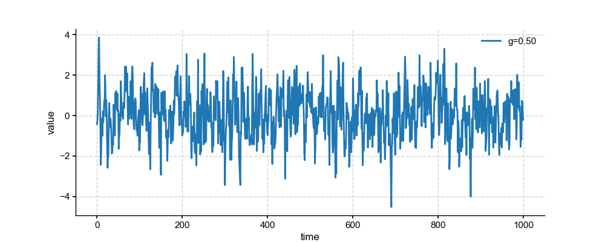 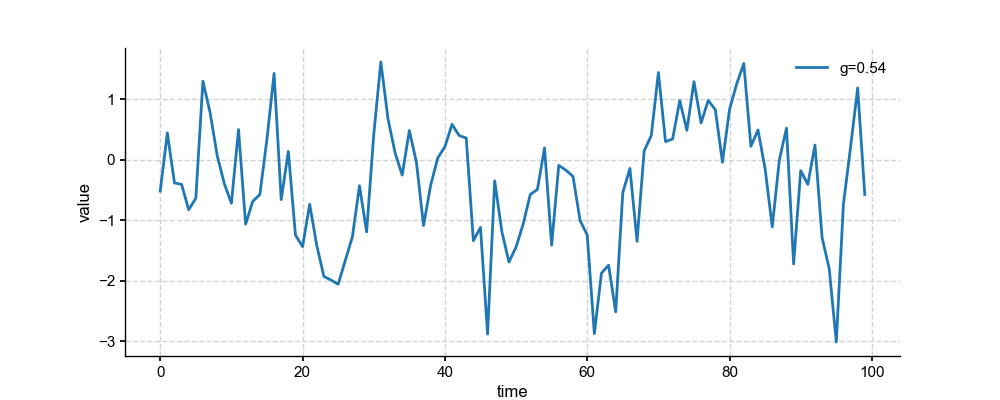 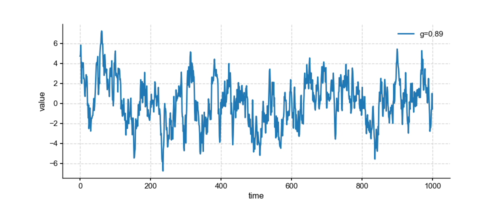In [1]: import pyleoclim as pyleo # default length nt=1000; default persistence parameter g=0.5 In [2]: ts = pyleo.gen_ts(model='ar1') In [3]: g = pyleo.utils.tsmodel.ar1_fit(ts.value) In [4]: fig, ax = ts.plot(label=f'g={g:.2f}') <Figure size 1000x400 with 1 Axes> In [5]: pyleo.closefig(fig) # use 'nt' to modify the data length In [6]: ts = pyleo.gen_ts(model='ar1', nt=100) In [7]: g = pyleo.utils.tsmodel.ar1_fit(ts.value) In [8]: fig, ax = ts.plot(label=f'g={g:.2f}') <Figure size 1000x400 with 1 Axes> In [9]: pyleo.closefig(fig) # use 'settings' to modify the persistence parameter 'g' In [10]: ts = pyleo.gen_ts(model='ar1', g=0.9) In [11]: g = pyleo.utils.tsmodel.ar1_fit(ts.value) In [12]: fig, ax = ts.plot(label=f'g={g:.2f}') <Figure size 1000x400 with 1 Axes> In [13]: pyleo.closefig(fig)
Colored noise with 1 regime
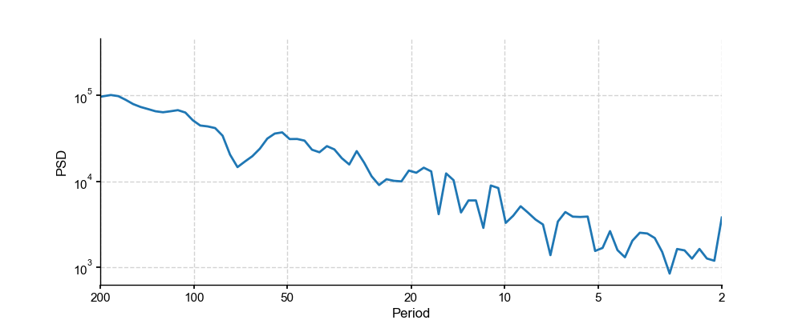# default scaling slope 'alpha' is 1 In [14]: ts = pyleo.gen_ts(model='colored_noise') In [15]: psd = ts.spectral() # estimate the scaling slope In [16]: beta_info = psd.beta_est(fmin=1/50, fmax=1/2) In [17]: print(beta_info['beta']) 0.9985976796482925 # visualize In [18]: fig, ax = psd.plot() <Figure size 1000x400 with 1 Axes> In [19]: pyleo.closefig(fig) # modify 'alpha' with 'settings' In [20]: ts = pyleo.gen_ts(model='colored_noise', alpha=2) In [21]: psd = ts.spectral() # estimate the scaling slope In [22]: beta_info = psd.beta_est(fmin=1/50, fmax=1/2) In [23]: print(beta_info['beta']) 1.8725854986733843 # visualize In [24]: fig, ax = psd.plot() <Figure size 1000x400 with 1 Axes> In [25]: pyleo.closefig(fig)

Colored noise with 2 regimes
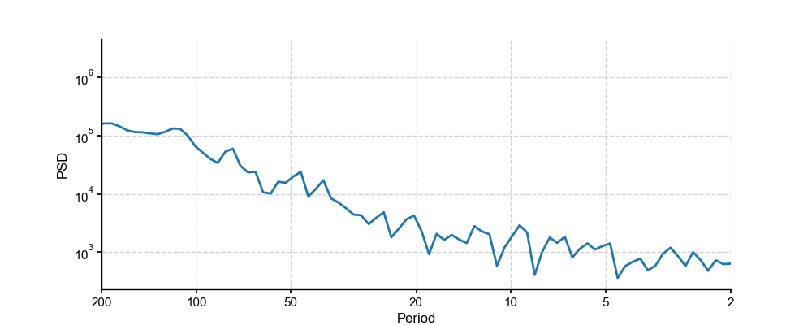 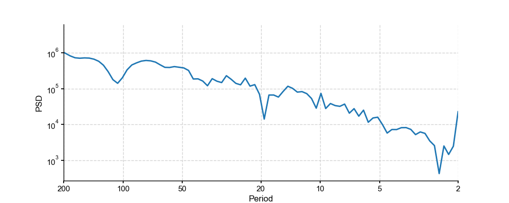# default scaling slopes 'alpha1' is 0.5 and 'alpha2' is 2, with break at 1/20 In [26]: ts = pyleo.gen_ts(model='colored_noise_2regimes') In [27]: psd = ts.spectral() # estimate the scaling slope In [28]: beta_info_lf = psd.beta_est(fmin=1/50, fmax=1/20) In [29]: beta_info_hf = psd.beta_est(fmin=1/20, fmax=1/2) In [30]: print(beta_info_lf['beta']) 2.236662602348876 In [31]: print(beta_info_hf['beta']) 0.5236511745881505 # visualize In [32]: fig, ax = psd.plot() <Figure size 1000x400 with 1 Axes> In [33]: pyleo.closefig(fig) # modify the scaling slopes and scaling break with 'settings' In [34]: ts = pyleo.gen_ts(model='colored_noise_2regimes', alpha1=2, alpha2=1, f_break=1/10) In [35]: psd = ts.spectral() # estimate the scaling slope In [36]: beta_info_lf = psd.beta_est(fmin=1/50, fmax=1/10) In [37]: beta_info_hf = psd.beta_est(fmin=1/10, fmax=1/2) In [38]: print(beta_info_lf['beta']) 1.0270592267250753 In [39]: print(beta_info_hf['beta']) 1.8696561897790713 # visualize In [40]: fig, ax = psd.plot() <Figure size 1000x400 with 1 Axes> In [41]: pyleo.closefig(fig)